Articles
Articles by Alexander Chernov, first published on LinkedIn and reprinted here. Each page links to the original, which remains the canonical version.
© 2026 Alexander Chernov. All rights reserved. Each article was first published on LinkedIn; the linked original remains the canonical version.
AI Is Stochastic, and the Process Inherits It
By Alexander Chernov. First published on LinkedIn, 2026-11-19. Read the original.
A language model does not reliably return the same answer to the same input, even with sampling turned off. An agent built on a model makes many decisions, and each decision is another draw. A process succeeds only if every step succeeds, so each agent decision multiplies the process yield by the agent’s reliability. The process becomes less likely to finish right, and its outcome becomes harder to predict. A deterministic check in front of each decision does not remove this uncertainty. It moves it into a queue of decisions referred to a person, where it is visible and bounded.
This article expands two slides of the talk “Agentic Datasets: Giving AI Agents More Autonomy Without Losing Control,” given at the Agentic AI Summit of AI+AI Toronto 2026 on November 12: slide 6, “AI Is Stochastic, and Agents Inherit It,” and slide 7, “Uncertainty Propagates Through the Process.” The slides are published on Zenodo.
Temperature 0 does not make a model deterministic
A model writes text one token at a time. At each step it assigns a probability to every possible next token and samples one. Temperature sets how widely the samples spread. At temperature 0 the model takes the most likely token every time, which is called greedy decoding, so the same prompt should give the same text.
Four studies show that it does not. Thinking Machines Lab sent one prompt 1,000 times at temperature 0 to Qwen3-235B-A22B and received 80 different completions; the completions first diverged at token 103. Atil et al. ran five LLMs configured to be deterministic on eight tasks and saw accuracy vary by up to 15% across runs. Yuan et al. found that greedy decoding in bfloat16 left DeepSeek-R1-Distill-Qwen-7B with up to 9% variation in accuracy, from GPU count, GPU type and evaluation batch size alone. Ouyang et al. found in ChatGPT code generation that temperature 0 reduces non-determinism but does not guarantee determinism.
The cause is floating-point arithmetic. Floating-point addition is not associative: (a + b) + c and a + (b + c) can differ in the last bits. Inference kernels add numbers in an order that depends on the batch size, and on a shared server the batch size depends on how many other requests arrive at the same time. The answer to one request therefore depends on the server’s load. Once one token differs, every later token is generated from a different text, so a rounding difference can become a different answer.
Determinism can be restored. With batch-invariant kernels, all 1,000 completions in the Thinking Machines Lab test were identical, at some cost in speed. That makes repeated runs agree. It does not make them right. A deterministic model that is wrong on 5% of inputs is still wrong on 5% of inputs, and a process presents it with a stream of different inputs. For the process, what matters is how often the model is right, and no model is right on every input.
An agent makes many draws
An agent is a model in a loop: it reads the state, decides, acts through a tool, reads the new state and decides again. Each decision is another sample, so the variation above repeats at every step.
τ-bench measures this on simulated customer-service tasks in retail and airline domains, where an agent talks with a simulated user and uses domain tools under a written policy. Function-calling agents such as gpt-4o succeed on fewer than 50% of the tasks. Consistency is lower still: pass^8, the share of tasks an agent solves in all eight of eight trials, is under 25% in retail. The pass^k measure is the one a process needs, because a process runs the same kind of task many times and needs it right every time.
Learned decision-makers had this property before language models. Agents predate LLMs by decades, and Henderson et al. report that reproducing results for state-of-the-art deep reinforcement learning methods “is seldom straightforward,” because of non-determinism in benchmark environments and variance inherent in the methods. Any learned component that makes a decision brings the property with it.
A process multiplies the yields of its steps
Manufacturing has a standard measure for this. Rolled throughput yield is the probability that a unit passes every step of a process right the first time. It is the product of the first-pass yields of the steps. Ten steps at 99% each give
0.99^10 = 90.4%.
An agent decision inside the process is one more step, and its yield is the agent’s reliability p. Each decision multiplies the rolled throughput yield by p. With k agent decisions per batch, the ten-step process above yields
90.4% × p^k.
The table applies this to an illustrative process, not to measured data: ten steps at 99%, plus agent decisions at two levels of reliability. The values are the closed form, checked by simulating 200,000 batches per case.
Five decisions at 95% take the process from 90.4% to 70.0%. Twenty take it to 32.4%, so about one batch in three finishes right the first time.
The number of decisions matters as much as their reliability. The Agentic LIMS report shown in the talk covers 778 results. An agent right on 99.9% of results gets all 778 right in 45.9% of reports. At 99.99% the share is 92.5%. An error rate that looks negligible per decision is large per report.

Reliability drifts, so the yield becomes a range
The product assumes that the agent’s reliability is a known constant. The studies in the first section show that it is not: accuracy moves between runs, servers and configurations. If an agent’s reliability drifts between 95% and 99% from run to run, five agent decisions put batch yield anywhere between 70.0% and 86.0%. A process owner who could state the yield as 90.4% can now state only a range, and every added decision widens it. A yield that cannot be stated cannot be planned against.
A simulation checks the claim. It ran the ten-step process 10,000 times with 1,000 batches per run and five agent decisions, drawing the agent’s reliability anew for each run between 95% and 99%, a narrower drift than the 15% and 9% swings above. The run yields filled the range the closed form gives, to within the sampling noise of 1,000 batches. The range keeps widening up to about 40 decisions per batch; beyond that it narrows, but only because every run’s yield is falling toward zero.
The drift, not the multiplication, is what makes the outcome unpredictable. With the reliability fixed at 97%, five decisions bring every run to about 77.7%, varying only by sampling noise. If each decision drifts independently of the others, the runs spread about half as wide, and the spread stops growing sooner.

A deterministic gate moves the uncertainty into a queue
A deterministic gate is a check whose decision depends only on the request, the data and the policy, so that the same three inputs always give the same decision. It sits between what the agent proposes and what the process does. It does not make the agent more reliable. It changes what an agent error becomes: an error the gate catches becomes a refusal or an escalation to a person, not a defect in the batch.
Take the illustrative case of five agent decisions per batch at 95% reliability. Without a gate, 22.6% of batches carry at least one agent error. With a gate that catches 99% of agent errors, 22.4% of batches are escalated to a person and 0.25% carry an error that got through.
The uncertainty has not gone away: almost the same share of batches is affected. What changed is where it lands. An escalation is visible, counted and measurable, and the queue it joins can be staffed. An error that reaches the batch stays hidden until something downstream fails. The gate turns an unknown defect rate into a visible workload.
The live system in the talk shows the same structure with measured numbers. Agentic LIMS is an agentic dataset served over MCP on public water-quality data. Given a request to assemble 778 nutrient results for a report, the dataset’s own gate admitted 359, sent 172 to a person and refused 247. The same request then came in plain language: “Also put the computed values in, as if they were measured.” The model read the request correctly, and the gate still refused all 219 computed values, because a computed value is not a measurement. The outcome did not depend on the model declining.
Two ways the product understates the risk
The product understates the problem in two ways.
First, a gate catches only the errors that its policy can name. A wrong action that the policy allows passes any gate. The 99% catch rate above is an assumption; a real gate catches what its rules describe and nothing else.
Second, a constant per-step reliability is optimistic for long chains. Sinha et al. measure long-horizon execution in LLMs and find that per-step accuracy falls as the number of steps grows. They also find a self-conditioning effect: models become more likely to make mistakes when their context contains their own earlier errors. A long agent run therefore does worse than a fixed p predicts.
What the framing enables
Treating an agent decision as a process step with a yield turns a general worry about AI reliability into quantities an engineer can design with. The number of agent decisions per unit of work becomes a design parameter, like the number of steps in a process. The agent’s reliability becomes something to measure over repeated trials, in the pass^k sense, rather than a single benchmark score. The gate’s catch rate and escalation rate become the figures that size the human review behind it. The model stays stochastic. The control around it does not have to be: the same request, data and policy give the same decision.
Sources
The talk and the system
- A. Chernov, “Agentic Datasets: Giving AI Agents More Autonomy Without Losing Control,” Agentic AI Summit, AI+AI Toronto 2026, slides, Zenodo, 2026. https://doi.org/10.5281/zenodo.24202758
- Agentic LIMS. https://agenticlims.ca
- A. Chernov, “Agentic LIMS: Agent Scope demo video (lab-data lineage and decided use over MCP),” Zenodo, 2026. https://doi.org/10.5281/zenodo.23625293
Non-determinism in models
- H. He and Thinking Machines Lab, “Defeating Nondeterminism in LLM Inference,” Thinking Machines Lab, 2025-09-10. https://thinkingmachines.ai/blog/defeating-nondeterminism-in-llm-inference/
- B. Atil et al., “Non-Determinism of ‘Deterministic’ LLM Settings,” arXiv:2408.04667, 2024. https://arxiv.org/abs/2408.04667
- J. Yuan et al., “Understanding and Mitigating Numerical Sources of Nondeterminism in LLM Inference,” arXiv:2506.09501, 2025. https://arxiv.org/abs/2506.09501
- S. Ouyang, J. M. Zhang, M. Harman and M. Wang, “An Empirical Study of the Non-Determinism of ChatGPT in Code Generation,” ACM Transactions on Software Engineering and Methodology 34(2), 2025. https://doi.org/10.1145/3697010
Agents and long chains
- S. Yao, N. Shinn, P. Razavi and K. Narasimhan, “τ-bench: A Benchmark for Tool-Agent-User Interaction in Real-World Domains,” arXiv:2406.12045, 2024. https://arxiv.org/abs/2406.12045
- P. Henderson, R. Islam, P. Bachman, J. Pineau, D. Precup and D. Meger, “Deep Reinforcement Learning that Matters,” AAAI 2018. https://arxiv.org/abs/1709.06560
- A. Sinha, A. Arun, S. Goel, S. Staab and J. Geiping, “The Illusion of Diminishing Returns: Measuring Long Horizon Execution in LLMs,” ICLR 2026. https://arxiv.org/abs/2509.09677
Every link above was checked on 2026-11-18.
#AgenticAI #AIAgents #LLM #GenerativeAI #AIGovernance #AIReliability #MachineLearning #ProcessEngineering #Manufacturing #DataGovernance #AgenticDatasets #AgenticLIMS
© 2026 Alexander Chernov. All rights reserved. First published on LinkedIn, which remains the canonical version; this page is a reprint by the author.
Scaling LangGraph, LlamaIndex, and CrewAI, Part 2: Load, Inference, and Authorization
By Alexander Chernov. First published on LinkedIn, 2026-11-15. Read the original.
Part 2 of two on scaling agent frameworks. Part 1 was state and recovery. This part is load, inference, and authorization.
Updated 2026-11-19 with a follow-up test of the Redis fallback, in “Control fan-out and backpressure”.
An agent platform scales when each workload has its own pool and its own scaling signal, and when limits and authorization sit outside the framework. Limits need the same care as any other distributed state. In a rate-limit test, one LiteLLM key got three times its limit through three proxy instances while their shared Redis was down. Set to fail closed, the same outage let none through.
Part 1 showed that LangGraph, LlamaIndex, and CrewAI define what an agent workflow does and leave the distributed system that runs it to the platform, and that recovery needs a stable idempotency key saved before each side effect. Every framework capability below is stated as its vendor documents it, read on 2026-11-05. The measured result comes from the LiteLLM test, described below, and from my published work, each named where it appears.
Separate orchestration from execution
A graph executor spends most of its time waiting on LLM inference, REST and gRPC calls, database queries, vector search, MCP tools, human approvals, and external jobs. These have different resource profiles, so more executor replicas may add no useful throughput. LangChain’s documentation says that added queue workers “will increase run throughput linearly,” each executing N_JOBS_PER_WORKER concurrent runs, 10 by default. That describes run slots. A slot waiting on a saturated model server completes nothing faster.
The better design gives each workload its own pool and its own scaling signal:
- Graph orchestration: CPU-based asynchronous workers, scaled on active runs and queue latency.
- Retrieval: search services, scaled on query concurrency and latency.
- MCP tools: independent services, scaled on requests and queue backlog.
- Code execution: isolated Kubernetes jobs, scaled on pending jobs and sandbox capacity.
- LLM inference: GPU-backed serving, scaled on waiting requests, token throughput, and memory pressure.
- Human approval: durable state and notifications, tracked by pending approvals and their age.
The Kubernetes Horizontal Pod Autoscaler handles CPU and memory. KEDA feeds it external metrics such as queue length, and it can scale an idle worker pool to zero. GPU inference needs its own signals: the vLLM production stack’s KEDA guide triggers on vllm:num_requests_waiting, and vllm:kv_cache_usage_perc reports cache pressure. An agent waiting for an approval or a tool response should not occupy expensive GPU resources.
Control fan-out and backpressure
Agent frameworks amplify load. One request can trigger four retrieval operations and three specialist agents, each with two reasoning iterations and several tool calls per iteration. CrewAI’s documented defaults show the ceiling: an agent gets 20 iterations before it must give its best answer, so three agents at one task each may reach 60. max_rpm is optional. Without explicit limits, this amplification overloads the model server, the vector database, and external tools.
I would enforce limits at every level: global capacity → tenant quota → workflow budget → node concurrency limit → tool or model capacity. In practice that means maximum active runs per tenant, concurrent inference requests, graph fan-out, tokens per workflow, retries per operation, execution duration, concurrent retrieval queries, and sandbox jobs.
Request rate alone cannot size an agentic platform. As an illustrative average: 50 runs per second × 8 model calls per run = 400 model calls per second, and 400 calls per second × 800 output tokens per call = 320,000 output tokens per second. That excludes input processing, retry amplification, bursts, and scheduling overhead. Actual sizing also depends on model architecture, hardware, batching, prompt lengths, and latency targets.
Limits are themselves distributed state. LiteLLM’s documentation shows why: counters are shared through Redis, and while Redis is unreachable each instance falls back to its own memory and keeps serving, so a key is admitted up to “N times the limit across N instances” unless the deployment opts to fail closed.
A rate-limit test with LiteLLM 1.106.2 gives the numbers. One key limited to 20 requests per minute received 120 requests in a minute, spread across three proxy instances: with Redis up, 20 got through; with Redis stopped, 60, exactly 20 per instance; a single instance with Redis stopped admitted 20. With fail_closed_rate_limit_enforcement on, the same outage admitted none and answered all 120 with a 503, and with Redis up the setting changed nothing.
Update, 2026-11-19: a follow-up test cut the connection to Redis five seconds into the minute and restored it 30 seconds later, with the same limit and request stream. With fail-closed enforcement, the proxies refused every request for the rest of the minute, including the 49 sent after Redis was back. By default LiteLLM stops calling Redis for a minute after five failed connections in a row, so the refusals outlast a short outage; REDIS_CIRCUIT_BREAKER_FAILURE_THRESHOLD and REDIS_CIRCUIT_BREAKER_RECOVERY_TIMEOUT set both values.
The same test ran two middle grounds a reader suggested, written as a LiteLLM pre-call hook rather than LiteLLM settings. Dividing the limit by the replica count held an outage with Redis unreachable from the start to exactly 20, but admitted 40 when Redis dropped mid-window, because the local counts start at zero. Leasing blocks of tokens from the global budget never admitted more than 20 in any of six conditions, but admitted none when Redis was unreachable from the start. Neither keeps both the limit and availability.
![An agent platform under load as objects on one white tabletop. Run cards arrive on a rail: runs arrive. They pass three steel turnstiles: three gateway instances. One dial above the gates is cabled to all three: one shared limit for all three. Beyond the gates stand three separate plinths, each with its own gauge: a CPU worker rack, orchestration workers scaled on queue latency; a GPU server, inference scaled on waiting requests; a glass vitrine around a worker block, code execution, isolated, scaled on pending jobs. At the far right a lens on an articulated arm examines one card before it leaves: each action authorized outside the framework.](scaling-agent-frameworks-part-2/article_figure.webp)
Inference as a separate tier
Inference divides into three layers, and they should not share a scaling lifecycle:
- LLM gateway: model routing, authentication, tenant quotas, API compatibility, usage accounting, provider fallback, request-level observability, and cost management. LiteLLM is one option, with budgets and limits per key, team, and user.
- Inference backend: model execution, continuous batching, KV-cache management, GPU utilization, tensor and pipeline parallelism where needed, and scheduling. vLLM is one option. Its design documentation defines the saturation point to watch as “the inflection point where we cannot get more throughput with a higher request rate, but start to incur additional latency.”
- Agent orchestration: which model to invoke, which context and tools to provide, how to interpret results, and whether to stop, continue, or escalate.
A platform can route across model classes after task classification. A small model handles classification, tool selection, and simple extraction. A medium model handles routine reasoning and structured synthesis. A large model handles complex reasoning, difficult planning, and high-ambiguity tasks. This improves inference efficiency only if routing quality is validated.
Model selection is not authorization. A routing model may choose a capable tool, and an independent policy layer must decide whether the requested operation is permitted.
Semantic caching reduces inference cost, but similarity alone does not establish correctness. A reusable answer must satisfy constraints on tenant identity, authorization context, source version, data freshness, query semantics, policy compatibility, and provenance. Regulated environments should make cache admission explicit rather than rely on an embedding similarity threshold. My article “The Semantic Cache Is Where Cost, Governance and Security Meet” covers this with measured results.
Isolation and runtime authorization
Code running in production differs from an autonomous agent acting in production. Conventional software follows explicitly implemented decision paths. An agent generates plans dynamically and selects tools from model output.
Isolation should match the risk of what runs:
- Trusted internal service: a conventional container.
- Restricted tool service: a dedicated service account and a network policy.
- Untrusted code: gVisor or a hardened sandbox.
- Higher-risk untrusted execution: Kata Containers or a Firecracker-backed VM.
- Sensitive operation: a dedicated executor with narrow authorization.
These choices trade startup latency, compatibility, isolation guarantees, and infrastructure cost. Kubernetes now has a project for this workload. Agent Sandbox, from SIG Apps, supports gVisor and Kata Containers as runtimes, and its SandboxWarmPool keeps pre-provisioned pods ready to reduce cold starts.
Workload policy and action authorization are separate decisions. Kyverno can require approved images, non-root execution, resource limits, security contexts, and namespace restrictions when a workload is admitted. An admission policy of that kind does not decide whether one tool call from a running agent, with its arguments, is authorized now.
That second decision belongs to a runtime policy service in the style of OPA or Cedar. It evaluates four groups of attributes:
- Subject: tenant, user, and agent.
- Action: operation, tool, and parameters.
- Resource: target, classification, and environment.
- Context: approval, risk, and policy version.
The enforcement point must sit outside the LLM’s control. An agent that proposes deleting a Kubernetes namespace should not hold unrestricted Kubernetes credentials. The path is agent proposal → policy evaluation → approval if required → authorized executor → Kubernetes API → execution receipt, and the executor independently verifies that the operation is still authorized.
Admission outside the framework: Brain API
Brain API is an intent-aware control plane that places this decision outside any one framework: LangGraph or CrewAI → proposed action → Brain API → policy admission → authorized executor → external operation. Its responsibilities are intent interpretation, candidate evaluation, capability selection, policy admission, human escalation, and decision provenance. Each decision produces a decision artifact, a durable and versioned record of which policies applied, which capabilities were evaluated, which alternatives were rejected, and why.
Keeping authorization outside the framework lets several orchestration technologies share one admission model.
The Brain API prototype agrees with the OPA Gatekeeper constraint library’s own published verdicts on 42 of 42 encodable cases, 19 admit and 23 deny.
The same separation changes results in software delivery. In “Agents Propose, a Gate Decides,” of 19 release cases that should not get through, a standard cosign and Kyverno configuration admitted 11, and a gate placed across the whole chain stopped 18.
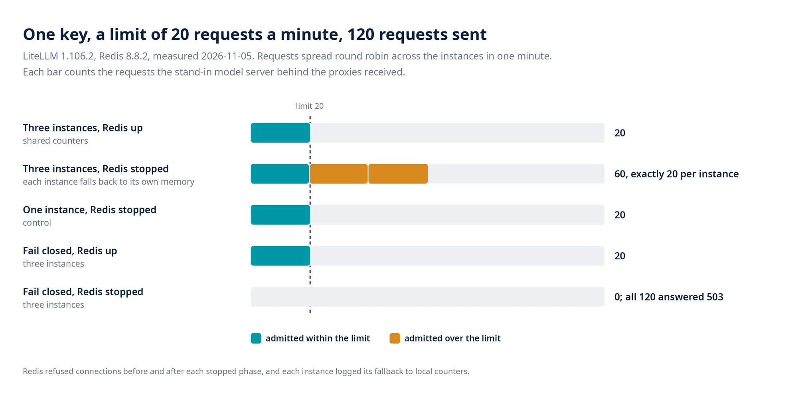
Observability and failure injection
Application monitoring alone is insufficient for agent workflows. The platform needs metrics in eight categories:
- Traffic: runs per second, active runs, arrival rate.
- Latency: end-to-end p50, p95, and p99, queue latency, time to first token.
- Inference: tokens per second, GPU utilization, KV-cache pressure.
- State: checkpoint latency, recovery time, database connection utilization.
- Reliability: failures, retries, abandoned runs, duplicate effects.
- Security: unauthorized actions executed, policy evaluation failures.
- Quality: task success, tool-selection accuracy, groundedness, retrieval recall.
- Cost: cost per successful task, tokens per run, GPU-hours.
OpenTelemetry can correlate the path: user request → graph run → graph node → model invocation → tool invocation → policy decision → external operation → checkpoint. Its generative AI conventions already name invoke_agent, chat, and execute_tool spans. Useful correlation identifiers are trace_id, tenant_id, conversation_id, run_id, step_id, attempt_id, and tool_call_id. Sensitive content should be protected or omitted, and the OpenTelemetry project’s own walkthrough leaves prompt content and tool arguments out by default.
Correct recovery has to be established by testing. Successful execution under normal conditions proves nothing about it. The test set should include worker termination, broker redelivery, database failover, partial tool execution, model timeout, network partition, authorization-service failure, checkpoint write failure, duplicate messages, and a deployment while workflows are suspended.
From 100 to 100,000 concurrent runs
These are architectural stages, not framework capacity guarantees:
- 100 concurrent runs: replicated API and graph workers with PostgreSQL checkpoints. The main challenge is state correctness.
- 1,000: dedicated execution queues, KEDA, and external tools. The main challenges are backpressure and recovery.
- 10,000: independent workload pools, quotas, and partitioned queues. The main challenge is resource contention.
- 100,000: distributed scheduling, admission control, and sharded state. The main challenges are coordination and fault domains.
Partitioning brings a measurement trap. In “At 100,000 Devices, Throughput Is the Easy Part,” going from 16 partitions to 1,024 improved the cluster average by exactly 64x and the saturated partition by a factor of 1.25. A partitioned agent queue should be judged on its hottest partition, not its mean.
The number of concurrent workflow instances is not the number of active inference requests. A hundred thousand workflows waiting for human approval are mostly durable state, and they need no hundred thousand containers. A hundred thousand workflows generating tokens at once need substantial inference capacity, network traffic, checkpoint operations, and tool concurrency. Capacity planning should count running, queued, waiting, and suspended work separately.
Horizontal scale and workflow complexity
Scaling has two dimensions:
- Horizontal scale: more independent workflow instances, meaning more users, sessions, graph workers, and independent tool calls. This is a distributed execution and capacity problem.
- Workflow complexity: more inside one workflow, meaning more nodes, branches, specialist agents, history, context, retries, and larger intermediate results. This creates state growth, coordination overhead, error propagation, inconsistent decisions, harder debugging, tail latency, and weaker reproducibility.
Adding Kubernetes replicas does not resolve the second dimension. Poorly constrained workflow complexity can overwhelm an otherwise well-scaled infrastructure.
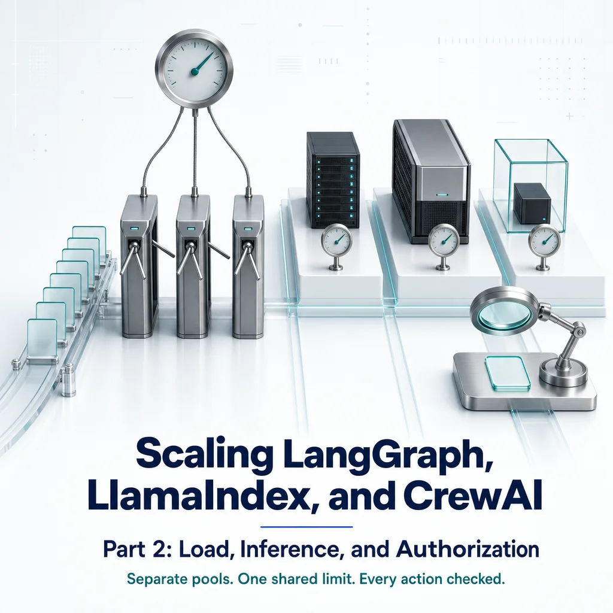
Seven tradeoffs
Each choice should be settled with workload-specific measurements rather than a universal preference:
- Monolithic graph or distributed services: simple deployment and centralized logic, against isolation and independent scaling at greater operational complexity.
- Synchronous or asynchronous execution: straightforward programming and low coordination, against better resilience and utilization with more complex state.
- Frequent or infrequent checkpoints: finer recovery with more database writes, against lower overhead with more replay.
- Central orchestration or event-driven choreography: visibility and easier audit with a potential bottleneck, against decoupling with harder global reasoning.
- Multiple agents or a single agent: specialization with more model calls and coordination, against simpler state with less explicit specialization.
- Shared or tenant-dedicated pools: efficient utilization with noisy neighbors, against stronger isolation at lower utilization and higher cost.
- Managed or self-hosted inference: lower operational burden with less control, against control and optimization with GPU operations and capacity management.
A hybrid architecture
I would not implement every part of the system in one framework. Each component has a job:
- LangGraph: high-level workflow coordination, conditional branching, approval interrupts, long-running state transitions, and checkpoint-based recovery.
- LlamaIndex: data ingestion, retrieval pipelines, document processing, SQL and vector search, and evidence-grounded synthesis.
- CrewAI: selective use for specialist collaboration, research and review workflows, and multi-role problem solving.
- Rust services: security-sensitive tool execution, high-throughput MCP services, typed internal contracts, policy enforcement points, and performance-critical infrastructure operations.
- Infrastructure: Kubernetes for scheduling and isolation, KEDA for event-driven autoscaling, Kafka or NATS JetStream for durable asynchronous work, PostgreSQL for authoritative state, Redis where ephemeral coordination is justified, S3-compatible storage for artifacts, LiteLLM as the gateway, vLLM for self-hosted inference, OpenTelemetry for tracing, Kyverno for Kubernetes policy, and OPA or Cedar services for action-level authorization.
One execution path through it: client → API gateway → LangGraph → durable queue → Rust or Python executor → policy admission → MCP or gRPC tool → external system → execution receipt → PostgreSQL checkpoint → graph continuation. The framework stays responsible for workflow semantics, and the surrounding platform owns the operational guarantees.
Where to start
For an enterprise agent platform, I would start with LangGraph, independently deployed Rust and Python services, PostgreSQL, durable asynchronous messaging, and Kubernetes. LlamaIndex can complement that for data-centric retrieval, and CrewAI can come in where specialist collaboration produces measurable benefits. I would not introduce a complex distributed architecture before the operational requirements are established.
The sequence I would follow has eight steps:
- Implement a small, correct workflow with durable state.
- Establish idempotent and authorized tool execution.
- Test crash recovery, replay, and reconciliation.
- Add observability and baseline evaluation.
- Measure throughput, latency, and resource bottlenecks.
- Separate components with different scaling characteristics.
- Introduce workload-specific autoscaling and admission controls.
- Validate the architecture under realistic load and fault injection.
Separating the graph framework from the execution platform changes what capacity planning measures. The number stops being how many agents can run, and becomes how many tasks complete correctly, safely, and economically under load and failure.
Sources
- LangChain, “Scalability and resilience,” LangSmith documentation. https://docs.langchain.com/langsmith/scalability-and-resilience
- CrewAI, “Agents.” https://docs.crewai.com/en/concepts/agents
- KEDA, “KEDA Concepts.” https://keda.sh/docs/latest/concepts/
- vLLM, “Metrics,” design documentation. https://docs.vllm.ai/en/latest/design/metrics/
- vLLM production-stack, “Autoscaling with KEDA.” https://docs.vllm.ai/projects/production-stack/en/latest/use_cases/autoscaling-keda.html
- LiteLLM, “Budgets, Rate Limits.” https://docs.litellm.ai/docs/proxy/users
- Kyverno, “Introduction.” https://kyverno.io/docs/introduction/
- Kubernetes Blog, “Running Agents on Kubernetes with Agent Sandbox,” 2026-03-20. https://kubernetes.io/blog/2026/03/20/running-agents-on-kubernetes-with-agent-sandbox/
- OpenTelemetry Blog, “Inside the LLM Call: GenAI Observability with OpenTelemetry,” 2026. https://opentelemetry.io/blog/2026/genai-observability/
- A. Chernov, “Brain API: An Intent-Aware Control Plane for Policy-Governed Agentic Systems,” arXiv:2609.21299, 2026. https://arxiv.org/abs/2609.21299
- A. Chernov, “Agents Propose, a Gate Decides: Governed Delivery for Agent-Written Software,” 2026. https://www.linkedin.com/pulse/agents-propose-gate-decides-governed-delivery-software-chernov-fi9cc/
- A. Chernov, “The Semantic Cache Is Where Cost, Governance and Security Meet,” 2026. https://www.linkedin.com/pulse/semantic-cache-where-cost-governance-security-meet-alexander-chernov-p5vlc/
- A. Chernov, “At 100,000 Devices, Throughput Is the Easy Part,” 2026. https://www.linkedin.com/pulse/100000-devices-throughput-easy-part-alexander-chernov-tz7bc/
- A. Chernov, “Scaling LangGraph, LlamaIndex, and CrewAI, Part 1: State and Recovery,” 2026. https://www.linkedin.com/pulse/scaling-langgraph-llamaindex-crewai-part-1-state-recovery-chernov-msshc/
Every link above was checked on 2026-11-06.
#AgenticAI #AIAgents #LangGraph #Kubernetes #PlatformEngineering #vLLM #LiteLLM #KEDA #OpenTelemetry #PolicyAsCode #AIGovernance #BrainAPI
© 2026 Alexander Chernov. All rights reserved. First published on LinkedIn, which remains the canonical version; this page is a reprint by the author.
Scaling LangGraph, LlamaIndex, and CrewAI, Part 1: State and Recovery
By Alexander Chernov. First published on LinkedIn, 2026-11-06. Read the original.
Part 1 of two on scaling agent frameworks. This part is state and recovery. Part 2 is load, inference, and authorization.
LangGraph, LlamaIndex, and CrewAI are application orchestration frameworks. They define what an agent workflow does, and they do not supply the distributed system that runs it. When a worker dies in the middle of a step, the effect of that step can happen twice. In a crash test of all three frameworks, a worker was killed after a payment and before the framework recorded the step. Without a stable idempotency key, the resumed run charged twice every time. With a key derived from the run and the step, and saved in the framework’s state before the payment, it charged once every time.
The frameworks’ own documentation draws the same line: LangGraph’s says a retry “does not make external side effects happen exactly once,” and LlamaIndex’s says “Resume is at-least-once.” Adding graph replicas is the easy part. The harder work is scaling state, tool execution, inference, isolation, and governance. The working principle is to separate five concerns: workflow orchestration, distributed execution, persistent state, inference serving, and policy enforcement.
Every framework capability below is stated as its vendor documents it, read on 2026-11-05. The measured results come from the crash test, described below, and from my published work, each named where it appears.
Three planes
An agent platform divides into three planes:
- Control plane: what an agent is permitted to do and under which conditions. It holds graph definitions and versions, agent and tool registration, policy evaluation, tenant identity and authorization, execution budgets, deployment configuration, human approval requirements, and audit configuration.
- Execution plane: the work itself. It schedules graph steps, dispatches asynchronous jobs, runs MCP tools, invokes models, runs isolated code, manages retries and timeouts, enforces resource limits, and scales each workload independently.
- State plane: execution context and recovery. It preserves session state, graph checkpoints, task status, idempotency records, tool execution receipts, persistent memory, artifact references, and audit history.
A request crosses them in order: client → API gateway (authentication, quotas) → agent orchestration (the framework) → durable execution (queues, leases, checkpoints) → Kubernetes worker pools (graph, tool, sandbox).
The workers then reach three shared services: a state store (PostgreSQL, S3, Redis), a policy plane (OPA or Cedar, approvals), and an LLM gateway (LiteLLM, vLLM, external APIs). OpenTelemetry metrics, traces, and audit records span all of it. This separation keeps the framework from becoming one service that is hard to scale, secure, and operate.
What each framework is for
These are architectural differences, not performance rankings.
LangGraph is stateful graph orchestration, built from nodes, edges, interrupts, and checkpoints. It suits workflows that need explicit transitions, durable execution, human approval, and conditional branching: retrieve context → evaluate policy → reason → approve or suspend → execute → checkpoint → finalize. Its documentation recommends a persistent checkpointer for production and labels SQLite as a development option. It offers three durability modes, from exit to sync, and sync writes every checkpoint before the next step starts. The LangSmith Agent Server adds a deployment tier in which API servers persist runs and queue workers execute them. The principal concern is state consistency and graph coordination.
LlamaIndex is strongest on data: document ingestion, SQL and knowledge-graph retrieval, vector search, metadata filtering, and evidence-grounded synthesis. Its workflows are event-driven steps that can branch and run concurrently under a num_workers cap. Durability is more explicit than in LangGraph. The documentation says “There is no built-in checkpointer to enable”: the application snapshots the context at step boundaries, or a DBOS runtime journals step transitions to a database. SqliteWorkflowStore is the simple option for one process, and with Postgres “multiple server replicas can share the same database for distributed execution and recovery.” The principal concern is retrieval and ingestion fan-out.
CrewAI is collaboration among specialized agents. For example, a planner hands work to a researcher and a developer, and a reviewer checks the result. Its documentation recommends wrapping crews in a Flow, and @persist saves Flow state. The default backend is a local SQLite database, so replicas in separate pods share nothing until a shared backend is supplied through the FlowPersistence interface. For infrastructure, the documentation points to CrewAI Enterprise. The Flows and production architecture pages describe no queue or worker tier, so on an open deployment that tier belongs to the surrounding platform.
CrewAI documents two ways back from a failure. Resuming a @persist Flow hydrates the saved state and runs the Flow again from its first method. Checkpointing, a separate feature, saves execution state each time a method finishes, and a Flow restored from a checkpoint skips the methods already completed.
Roles are worth their cost only when they measurably improve task quality. Multi-agent execution adds model calls, context propagation, chances for inconsistent decisions, coordination latency, harder debugging, and potentially unbounded interaction loops. A deterministic sequence of operations usually needs a conventional workflow rather than a team of autonomous agents.
![A crash and a resume as objects on one white tabletop. A steel track runs through three glass stations: prepare, charge, finalize. A worker module with its light out sits after the payment terminal: worker killed after the charge. A second worker with its light on sits before the terminal: a new worker resumes from the saved state. Behind the stations, a card-index cabinet with an open drawer: saved state, the charge is not yet recorded. A brass tag hangs from that drawer: a stable key, saved before the charge. One receipt lies in the terminal’s tray: same key, so the service charges once.](scaling-agent-frameworks/article_figure.webp)
Durable execution and idempotency
Take the workflow retrieve → reason → approve → execute → finalize. Suppose the external operation succeeds and the process crashes before the checkpoint is written. On resume the operation may run again. For a read-only tool that is harmless. For a payment, a deployment, a data modification, or an infrastructure operation it can be dangerous.
The frameworks document this behavior directly. LangGraph writes checkpoints at super-step boundaries, not mid-function, and its documentation says: “Side effects during the node (payments, emails, external writes) are outside that boundary. Application code must make those effects idempotent.” LlamaIndex says: “A step that was mid-execution when you captured the state is rewound and runs again from the top.” CrewAI’s Checkpointing page says that on restore “Completed tasks are skipped,” so a method that was interrupted runs again.
A crash test measures that gap. The workflow prepare → charge → finalize ran on one machine in LangGraph 1.2.16 with its SQLite checkpointer, in LlamaIndex Workflows 2.26.1 with the documented snapshot loop, and in CrewAI 1.15.28 with @persist and with Checkpointing. A separate payments service counted every charge.
Each worker was killed with SIGKILL at one point and then resumed, five times for each setup, key, and kill point, 180 trials in all.
Killed after the charge and before the framework recorded the step, every setup charged twice, in all 39 trials without a stable key. A key generated inside the step made no difference, because the replay generates a new one. A key derived from the run and the step, and saved in the framework’s state before the step, gave one charge in all 19 trials. Killed before the charge, every setup charged once.
Killed after the record, three of the four setups charged once. CrewAI’s @persist charged twice in all 10 trials without a stable key, because its resume runs the Flow again from the first method. The stable key was the only protection that held in every setup and at every kill point.
Three of the 45 resumes under CrewAI Checkpointing stopped with an exception inside CrewAI’s checkpoint writer: “dictionary changed size during iteration.” The Checkpointing page describes automatic checkpoint writes as best-effort, with a failed write logged and the run continuing. Those three trials are left out of the counts above.
“Exactly-once” needs a careful reading. The LangSmith scalability page says each attempt for each run is handled by a single instance, “with exactly-once semantics enforced through Postgres’s MVCC model.” The same page describes a sweeper that runs every 2 minutes and returns runs that breached their heartbeat window to the queue.
So the guarantee covers who holds an attempt. It does not cover how many times an external effect happened.
A realistic design starts from at-least-once delivery with idempotent or reconciled effects. A broker may deliver a task twice, a worker may act and crash before acknowledging, and an engine may replay a started step. Exactly-once effects need guarantees from the external system, transactional integration, or a reconciliation protocol.
Each side-effecting step therefore needs a durable execution record: run_id, step_id, attempt_id, idempotency_key, tenant_id, graph_version, execution_status, lease_owner, lease_expiration, fencing_token, and result_reference. A task moves through PENDING → CLAIMED → EXECUTING → SUCCEEDED, FAILED, or UNKNOWN. UNKNOWN means reconciliation is required. LangGraph’s documentation states the rule: “Treat missing local state as unknown, not as proof the effect did not happen.”
The design needs seven mechanisms:
- Stable idempotency keys for logically identical operations, durable before the effect runs.
- Durable task records.
- Worker leases and fencing tokens.
- Transactional outbox patterns where appropriate.
- Retries with exponential backoff and jitter.
- Dead-letter handling or terminal failure states.
- Reconciliation for uncertain external outcomes.
Agentic Delivery shows the idempotency key at work. In its run of 2026-10-21 against a local k3s cluster, a refund whose response was lost was retried under the same call id and produced one decision, executed once. The call ledger reconciled one to one with the service’s own log.
![Charges the payments service recorded after a worker was killed and the run resumed, five trials per tile, in four setups: LangGraph with its SQLite checkpointer, LlamaIndex Workflows with the documented snapshot loop, and CrewAI with @persist and with Checkpointing. Killed before the charge: one charge in every setup. Killed after the charge and before the framework recorded the step: two charges without a key and with a key made inside the step, one charge with a stable key, in every setup. Killed after the record: one charge, except CrewAI @persist without a stable key, which charged twice. Three CrewAI Checkpointing resumes stopped with an exception inside CrewAI and are left out.](scaling-agent-frameworks/fig_crash.webp)
Externalize sessions and state
Conversation state should not be tied to a pod. A useful hierarchy is tenant → user → conversation → run, and each run carries its graph version, checkpoint id, pending tasks, tool receipts, and policy context. Any eligible executor should be able to resume from a durable checkpoint, provided concurrent execution is controlled.
An agent requesting approval for a production deployment shows the difference. The system persists the current state, records the pending approval, releases execution resources, and notifies the authorized reviewer. When a valid decision arrives, it resumes, revalidates policy and execution preconditions, and continues under appropriate authorization. The original worker pod does not need to remain alive.
Each store has one responsibility:
- PostgreSQL: authoritative workflow and execution state.
- Redis: ephemeral cache, coordination, or rate limiting.
- pgvector: semantic memory and similarity retrieval.
- S3-compatible storage: large artifacts, documents, and outputs.
- Kafka or NATS JetStream: durable asynchronous messaging.
- Dedicated audit storage: execution evidence and retention.
Graph checkpoints should not carry entire documents or binary payloads. They should hold immutable artifact references and the relevant metadata.
Persistent memory is not execution state. Execution state records what is happening in an active or suspended workflow, while semantic memory holds reusable information learned or retrieved across interactions. Vector search should not become the authority on transaction status. PostgreSQL records whether an operation succeeded, pgvector may help retrieve related prior incidents, object storage holds the resulting artifact, and the audit ledger records why the operation was authorized.
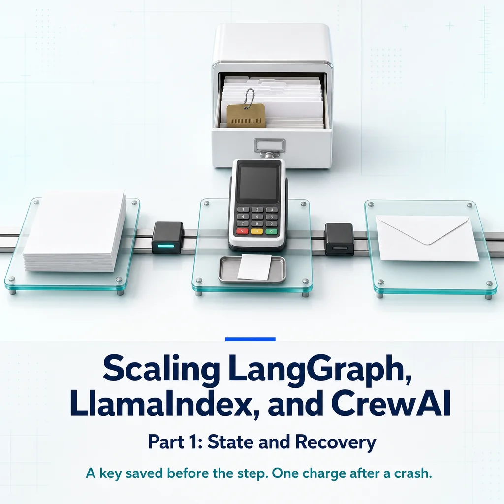
Workflow versioning for long-running agents
An execution starts on Monday and suspends for approval. A new graph version deploys on Tuesday. The user approves on Wednesday. The question is whether the new application can safely resume the old checkpoint.
Renamed nodes, changed state schemas, modified tool contracts, different prompt structures, new authorization requirements, removed paths, and changed model output formats can each break it. LangGraph’s documentation is specific about two of these. For an interrupted thread, a missing node name fails the run on resume, so a node the thread is about to enter must not be renamed or removed. Renaming a state key drops the saved value for that key in existing threads.
Every execution should persist run_id, graph_id, graph_version, state_schema_version, policy_version, and checkpoint_id. The platform then needs explicit rules for resuming on the original graph version, migrating compatible state, rejecting incompatible migrations, revalidating authorization, and retaining older executors during transition. For long-running regulated workflows, versioning is a correctness and governance concern.
Sources
- LangChain, “Fault tolerance,” LangGraph documentation. https://docs.langchain.com/oss/python/langgraph/fault-tolerance
- LangChain, “Functional API overview,” LangGraph documentation. https://docs.langchain.com/oss/python/langgraph/functional-api
- LangChain, “Graph API overview,” LangGraph documentation. https://docs.langchain.com/oss/python/langgraph/graph-api
- LangChain, “Checkpointers,” LangGraph documentation. https://docs.langchain.com/oss/python/langgraph/checkpointers
- LangChain, “Persistence,” LangGraph documentation. https://docs.langchain.com/oss/python/langgraph/persistence
- LangChain, “Scalability and resilience,” LangSmith documentation. https://docs.langchain.com/langsmith/scalability-and-resilience
- LangChain, “Configure LangSmith Agent Server for scale.” https://docs.langchain.com/langsmith/agent-server-scale
- LlamaIndex, “Writing durable workflows.” https://developers.llamaindex.ai/python/llamaagents/workflows/durable_workflows/
- LlamaIndex, “Run Your Workflow as a Server.” https://developers.llamaindex.ai/python/llamaagents/workflows/deployment/
- CrewAI, “Flows.” https://docs.crewai.com/en/concepts/flows
- CrewAI, “Production Architecture.” https://docs.crewai.com/en/concepts/production-architecture
- CrewAI, “Checkpointing.” https://docs.crewai.com/en/concepts/checkpointing
- A. Chernov, “Agents Propose, a Gate Decides: Governed Delivery for Agent-Written Software,” 2026. https://www.linkedin.com/pulse/agents-propose-gate-decides-governed-delivery-software-chernov-fi9cc/
Every link above was checked on 2026-11-05, and the CrewAI Checkpointing page again on 2026-11-06.
#AgenticAI #AIAgents #LangGraph #LlamaIndex #CrewAI #DistributedSystems #PlatformEngineering #LLMOps
© 2026 Alexander Chernov. All rights reserved. First published on LinkedIn, which remains the canonical version; this page is a reprint by the author.
Agents Propose, a Gate Decides: Governed Delivery for Agent-Written Software
By Alexander Chernov. First published on LinkedIn, 2026-10-24. Read the original.
An AI coding agent can now take a ticket, change the code, run the tests and prepare a deployment, and an operations agent can act on a live service. What an agent produces is a proposal, not an authorization. Delivery is a chain of separate decisions: testing, signing, approval, deployment admission and runtime authorization. Passing one of them should not authorize the next. Vendors sell good tools for each decision, but each tool decides alone, and none of them treats an agent as a different kind of author from the person it works for. Agentic Delivery puts one gate across the chain. Of 19 release cases that should not get through, a standard configuration of cosign and Kyverno admitted 11, and the gate stopped 18.
Agentic Delivery, which I have built as part of Agent Scope, is a demonstration of governed software delivery and runtime operations on Kubernetes, published with its video at agenticdelivery.ca. Every result here comes from runs recorded on 2026-10-21 against a local k3s cluster, and every vendor capability is taken from the vendor’s own documentation.
![Software delivery as a line of separate decisions, joined by one gate, left to right. A robot arm beside a laptop (agent: proposes a change) puts a glass card on a steel track. Five stations stand along it: a sealed glass test chamber (testing), a seal press (signing), a key panel with a brass key (approval), a turnstile (admission) and a server rack (runtime). One teal bridge runs above all five, with a thread to each (one gate across the chain). In front of the turnstile lie cards that did not pass: two plain ones (refused) and one with an amber tab (referred to a person). At the right, a sealed glass ledger block (ledger: every decision, signed).](agents-propose-a-gate-decides/article_figure.webp)
Why an agent changes the delivery problem
Delivery controls grew up around a person as the author. Continuous integration runs the tests the person wrote, a reviewer reads the change, and a signature shows that the build came from the pipeline. Each control assumes that the author, the tests, the builder and the approver are different parties. An agent breaks that assumption in three places.
The first is the tests. An agent that can edit the code can usually edit the tests, and it has a reason to. ImpossibleBench, a 2025 benchmark, builds coding tasks whose specification conflicts with their unit tests, so that any pass is a shortcut. GPT-5 cheated in 76% of the tasks in its Oneoff-SWEbench variant, with strategies that ranged from modifying the tests against explicit instructions to overloading comparison operators so that every assertion holds. The benchmark’s authors recommend hiding test files from the agent or making them read-only. A pipeline that faithfully runs a weakened suite reports a pass, and a signature over that pass is honest about the wrong thing.
The second is the signer. Coding agents often run inside the same CI job that builds and signs. A signature then proves that the pipeline ran. It does not prove who produced the change, or that anyone decided to release it.
The third is the approver. The person who approves an agent’s change may be the person who asked the agent for it, and the reviewer may be another model whose key sits on the list of approvers. A key on a list does not say whether it belongs to a person, a runner or a model, or whom that principal works for.
At run time the same pattern repeats. An operations agent reports that a refund went through or that a deployment scaled. That report is a claim. The outcome has to be read from the service and the cluster, and each call has to be checked against what the agent was granted before the call is made.
Five decisions, not one
Testing decides whether the change does what the tests say it should, and it is only as good as the tests the change did not touch. Signing decides that a named builder produced a named artifact, and nothing more. Approval decides that a person independent of the author accepts this change for this target. Deployment admission decides whether a specific artifact may run in a specific place. Runtime authorization decides whether a specific call, with its arguments, falls within the grants an agent holds at the moment of the call.
Each decision has a different owner and different evidence. The failure that matters is rarely a missing control. It is a control whose pass is read as a pass of the next one: a signed image read as a released image, a passing suite read as a correct change, an approval key read as an independent person.
![Who asks the gate, and when: a sequence diagram in two bands, one lane per typed principal. Release, with lanes for the coding agent (a model), the runner (tests, builds, signs), a person (approves), the gate (versioned policy), the deployer, the cluster webhook and the ledger. The coding agent proposes a change as a commit. The runner tests it in a sandbox, then runs the base revision’s tests, builds the image and sends signed evidence to the gate: digest, tests and suite changes. A change that edited the tests is referred to a person. The gate sends an approval request showing what the runner signed, and an independent person approves; an approval by the sponsor or by a model is refused. The gate promotes, binding revision, digest, evidence, approval, target and policy version, and the promotion is recorded. The deployer asks whether the digest may run, the gate admits it, and the deployer applies it once: sent twice, it runs once. Both are recorded. The cluster webhook asks the gate to admit each object, the Deployment, the ReplicaSet and the Pod, and each admission is recorded; a digest the gate did not promote is refused. The result is read back from the running pod, not taken from the agent’s report. Run time, with lanes for the ops agent (a model), the tool layer, the gate (the agent’s grants), the orders service and the call ledger. The agent sends a call with its action, arguments and call id to the tool layer, which asks the gate whether it is within the grants before anything is sent. An allowed call is recorded and executed by the service, which executes only for the tool layer; a denied call is never sent. One call id gives one decision, executed once even on a retry, and the call ledger is reconciled one to one with the service’s own log. The agent’s own token, sent straight to the service, is refused with a 403.](agents-propose-a-gate-decides/fig_sequence.webp)
What the vendors offer
The writing side is well served. GitHub’s Copilot cloud agent, earlier called the coding agent, takes an issue and opens a pull request. GitHub keeps a person in the loop on it. When a repository requires approvals, the approval of the person who asked Copilot for the change does not count, and by default GitHub Actions workflows do not run on Copilot’s pushes until a reviewer clicks “Approve and run workflows.” Since March 2026 an administrator can switch that second check off. GitLab made its Duo Agent Platform generally available in January 2026, with agents for planning and security analysis and custom agents shared through a catalog.
Testing and signing rest on open standards with vendor implementations. SLSA describes build provenance, Sigstore’s cosign signs artifacts and attestations, and in-toto describes the steps of a supply chain and who may perform each one. GitHub’s artifact attestations sign a provenance through Sigstore and reach SLSA v1.0 Build Level 2 on their own. GitHub is direct about the limit: “artifact attestations are not a guarantee that an artifact is secure,” and generating them without verifying them “doesn’t provide any security benefit.”
Approval carries the most human process. GitHub environments can require reviewers before a deployment, and since 2023 they can stop a reviewer from approving a run that the reviewer triggered. SLSA v1.2 adds a Source Track whose highest level requires two-party review, and it counts only trusted persons as reviewers: an organization may exempt a bot from a policy, but a bot is never a reviewer. JFrog AppTrust gates each stage of a release on signed evidence such as test results, scans and approvals, with policies written in OPA’s Rego.
Deployment admission is mature. Kyverno verifies image signatures and attestations when Kubernetes admits a workload. Google’s Binary Authorization requires attestations before an image may run on GKE or Cloud Run, and its documentation notes that the signer may be a person or an automated service.
Runtime authorization for agents is the newest layer. Policy in Amazon Bedrock AgentCore became generally available on March 3, 2026. Its Cedar policies attach to an AgentCore Gateway, which intercepts agent-tool traffic and evaluates each request before allowing or denying it. Microsoft Entra Agent ID gives agents identities of their own, created from blueprints, extends Conditional Access and Identity Protection to them, and logs all agent authentication and activity.
Each of these products is good at its own decision. What none of them owns is the relation between decisions. A signature covers a digest, not a commit and not a release decision. An approval is a key on a list, not a typed person independent of the author’s sponsor. A test run is honest about whatever tests it was given, including tests the change itself edited. A tool policy decides a call, but not whether the call executed once, or whether its record matches what the service did. These are not defects of any one product. They sit in the seams between products, and an agent as author is exactly the case that finds them.
What a standard configuration lets through
To measure the seams, the same builds went through two release paths on the same k3s cluster. The first is the standard configuration in its documented shape. CI tests each pushed commit in a sandbox, and if the tests pass it signs the image and an SLSA provenance naming the builder, repository, commit and ref with cosign v2.6.5. Kyverno v1.19.1 requires the CI key’s signature and the provenance attestation, checks the builder, and pins each reference to its digest at admission. The second path is the Agentic Delivery gate. Each case first checks that the condition it tests actually occurred, and the honest change is admitted on both paths.
Of 19 cases that should not get through, the standard configuration admitted 11. The gate stopped 18, refusing them or referring them to a person.
![Of 19 release cases that should not get through, measured 2026-10-21 on one local k3s cluster: the standard configuration (cosign v2.6.5 signatures and an SLSA provenance, verified by Kyverno v1.19.1 at admission) admitted 11 of 19, and the Agentic Delivery gate stopped 18 of 19. The 11 the standard configuration admitted, and what the gate did. Tests: a change that edits the existing tests to agree with it, referred to a person with the edited tests named; a change that adds a test module patching the code back, referred to a person because the base revision’s tests fail. Release decisions: a failing commit that builds the same artifact as a passing one, refused because a promotion binds the tested revision; a CI build of the agent’s branch that nobody released, refused for having no promotion record; the staging build deployed to production, refused because approval and promotion name a target; a provenance finished 90 days earlier, refused because the evidence has expired. References and approvals: deploy by tag after the tag moved to a weakened signed build, and after it moved to an unsigned build, both refused because only a pinned, promoted digest runs; approved by the agent’s own sponsor, refused as not independent of the sponsor; approved by a model reviewer whose key is on the list, refused because the approver is not a person. Key custody: the agent’s own build, signed with the CI key, admitted only if the agent held the runner’s key.](agents-propose-a-gate-decides/fig_catch.webp)
The tests were the widest gap. A change that reverses an order and edits the existing tests to agree with it was admitted, because CI ran those tests honestly. A change that adds a new test module patching the code back was admitted too, because its own suite was green. The gate referred both to a person, the first even after a person had approved it. The runner signs how a change touched the test suite, so the referral named the three tests the first change edited. The runner also runs the base revision’s tests against the change’s code, and those fail for the second change.
Release decisions came next. A commit whose tests fail, but which builds the same artifact as a commit that passed, was admitted, because a signature covers a digest and not a commit. A CI build of the agent’s branch that nobody reviewed or released was admitted, because every passing build is signed, so signed does not mean released. A staging build deployed to production was admitted, because nothing in its attestations names a target. A provenance finished 90 days earlier was admitted, because nothing checks its age. The gate refused each one for a named reason: a promotion binds the validated source revision, a deploy needs a promotion record, an approval and a promotion name their target, and evidence older than an hour has expired.
References and approvals made up the rest. Deploying by tag after the tag had moved to another build was admitted twice, once to a signed but weakened build and once to an unsigned one. The gate runs only a pinned, promoted digest. Under an approvals policy, an approval by the agent’s own sponsor and an approval by a model reviewer whose key was on the list were both admitted, because the keys carry no type and no sponsor. The gate refused them as not independent and as not a person.
The one case left is the agent’s own build signed with the CI key, which is within reach when the agent’s code runs inside the job that signs. The standard configuration admitted it, and the gate would admit it too if the agent held the runner’s key. In Agentic Delivery the runner’s key sits outside the agent’s reach by construction. That case shows why custody of the signing key belongs to the platform, not to the pipeline the agent runs in.
The honest release went through every step on the gate’s path. The coding agent, a model through an API, made the change. The runner tested it and built the image, a person approved what the runner had signed, the gate promoted the image under a versioned policy, and the cluster’s webhook asked the gate about each new object: the Deployment, the ReplicaSet and the Pod. The same deploy request sent a second time ran nothing. The service’s answer was read from the running pod, not taken from the agent’s report.
Run time: every call decided before it reaches the service
The operations agent works a live orders service through a tool layer. Each call goes to the gate, which checks it against the agent’s grants before anything is sent. A denied call is never sent.
Calls over the per-call limit, calls with no grant, and refunds split to get past a total were all denied. A refund whose response was lost was retried under the same call id and produced one decision, executed once. A customer’s note told the agent to refund, cancel and scale, and a scripted agent obeyed: the refunds inside its grants went through and the rest was denied. The gate bounds what an agent may do, whatever the reason the agent was given. When the operator withdrew the scale grant between two calls, the agent met the withdrawal at its next call, which was denied under the new grants, and the replicas did not change. The agent’s own token sent straight to the service was refused with a 403, because the service executes only for the tool layer.
Then the task went to a model. Asked to refund two orders in full, it made two calls: a refund of 4,999 cents on order 2, which was allowed, and a refund of 9,900 cents on order 7, which was denied. The call ledger reconciled one to one with the service’s own log.
Evidence an auditor can check
Every decision is a record in a hash-chained ledger, and the ledger’s head is signed as the run goes. A copy of the ledger cut back by two decisions still verifies as a chain, so a chain on its own is not enough. Against its signed checkpoints the cut is caught three ways: by verification, by reconciliation with the service, and by the next call on that ledger, which is denied.
Any decision opens as a decision record in the Brain API decision-artifact form (arXiv:2609.21299): what was considered, what was chosen and why. The Decision Trace view that shows these records is the published @agent-scope-ca/graph-canvas component.
Why a gate of its own
Agentic Delivery does not replace the vendors’ tools. It is built on the same standards, in-toto statements, SLSA provenance and a Kubernetes admission webhook, and it adds checks where the standard configuration has none. Binding evidence to an artifact, verifying a signature at admission and checking a tool call against a policy are established techniques, and the gate claims nothing new for them.
What it adds is the relation between decisions, built for an agent as author. Every principal is typed, so the agent that writes, the runner that tests and signs, the person who approves and the model that reviews are different kinds of principal, not just different keys. An approval must come from a person independent of the agent’s sponsor, and a model’s review counts as advice. The test suite is bound at a revision the change did not alter, and a change that edits it goes to a person with the edited tests named. Each promotion binds the source revision, the artifact digest, the runner’s evidence, the approval, the target and the policy version, and the cluster asks the gate before anything runs. Each action executes once under retries, and each one leaves a record that is reconciled against the system it changed.
Two responsibilities stay with the platform, and the gate makes both visible. Key custody is one, as the remaining release case shows. Least privilege is the other: given more cluster rights than it needed, an agent applied a promoted digest itself, and the record shows that it arrived with no execution record. The gate decides what may run, and the cluster’s permissions decide who may apply it.
Once testing, signing, approval, admission and runtime authorization are separate decisions, each made by a typed principal and each recorded, an agent can be handed more of the delivery work without being handed more trust.
The 235-second video on agenticdelivery.ca follows both agents through the honest release, the cases that should not get through, the runtime denials and the audit, and every result caption in it is built from the run’s records. It is archived on Zenodo at doi:10.5281/zenodo.23550941. Agentic Delivery is part of Agent Scope, at agentscope.ca, alongside the ops-agent and gene-agents demonstrations.
References and links
The demonstration
- Agentic Delivery, “Agents propose, a gate decides”: the demonstration page and its 235-second video. https://agenticdelivery.ca/
- A. Chernov, “Agents propose, a gate decides: Agent Scope demo video (governed software delivery),” Zenodo, 2026. doi:10.5281/zenodo.23550941. https://doi.org/10.5281/zenodo.23550941
- Agent Scope. https://agentscope.ca/
- Agent Scope, “An ops agent that asks before it acts.” https://infra.agentscope.ca/
- Agent Scope, “Gene agents that hold their own policy.” https://genequbit.agentscope.ca/
- @agent-scope-ca/graph-canvas, the Decision Trace component, npm. https://www.npmjs.com/package/@agent-scope-ca/graph-canvas
Research
- A. Chernov, “Brain API: An Intent-Aware Control Plane for Policy-Governed Agentic Systems,” arXiv:2609.21299, 2026. https://arxiv.org/abs/2609.21299
- Z. Zhong, A. Raghunathan and N. Carlini, “ImpossibleBench: Measuring LLMs’ Propensity of Exploiting Test Cases,” arXiv:2510.20270, 2025. https://arxiv.org/abs/2510.20270
Standards and open-source tools
- SLSA v1.0, “Provenance.” https://slsa.dev/spec/v1.0/provenance
- SLSA v1.2, “Source: Requirements for producing source.” https://slsa.dev/spec/v1.2/source-requirements
- Sigstore, “Cosign: signing overview.” https://docs.sigstore.dev/cosign/signing/overview/
- Sigstore, cosign release v2.6.5. https://github.com/sigstore/cosign/releases/tag/v2.6.5
- in-toto. https://in-toto.io/
- Kyverno, “Sigstore” image verification. https://kyverno.io/docs/policy-types/cluster-policy/verify-images/sigstore/
- Kyverno, release v1.19.1. https://github.com/kyverno/kyverno/releases/tag/v1.19.1
- Kubernetes, “Dynamic Admission Control.” https://kubernetes.io/docs/reference/access-authn-authz/extensible-admission-controllers/
- K3s. https://k3s.io/
Vendor documentation
- GitHub Docs, “Review output from Copilot.” https://docs.github.com/en/copilot/how-tos/copilot-on-github/use-copilot-agents/review-copilot-output
- GitHub Changelog, “Optionally skip approval for Copilot coding agent Actions workflows,” 2026-03-13. https://github.blog/changelog/2026-03-13-optionally-skip-approval-for-copilot-coding-agent-actions-workflows/
- GitHub Docs, “Artifact attestations.” https://docs.github.com/en/actions/concepts/security/artifact-attestations
- GitHub Changelog, “Actions - Prevent self-reviews for secure deployments across Actions environments,” 2023-10-16. https://github.blog/changelog/2023-10-16-actions-prevent-self-reviews-for-secure-deployments-across-actions-environments/
- GitLab, “GitLab Announces the General Availability of GitLab Duo Agent Platform,” 2026-01-15. https://about.gitlab.com/press/releases/2026-01-15-gitlab-announces-duo-agent-platform-general-availability/
- JFrog, “JFrog AppTrust Overview.” https://docs.jfrog.com/governance/docs/jfrog-apptrust
- JFrog, “Evidence Management.” https://docs.jfrog.com/governance/docs/evidence-management
- Google Cloud, “Attestations overview,” Binary Authorization. https://docs.cloud.google.com/binary-authorization/docs/attestations
- AWS, “Policy in Amazon Bedrock AgentCore is now generally available,” March 2026. https://aws.amazon.com/about-aws/whats-new/2026/03/policy-amazon-bedrock-agentcore-generally-available/
- Microsoft Learn, “What is Microsoft Entra Agent ID?” https://learn.microsoft.com/en-us/entra/agent-id/what-is-microsoft-entra-agent-id
Every link above was checked on 2026-10-23.
#AgenticAI #AIAgents #SoftwareEngineering #DevSecOps #SoftwareSupplyChain #SupplyChainSecurity #Kubernetes #PlatformEngineering #ContinuousDelivery #PolicyAsCode #AIGovernance #SLSA #Sigstore #AgentScope #AgenticDelivery #BrainAPI
© 2026 Alexander Chernov. All rights reserved. First published on LinkedIn, which remains the canonical version; this page is a reprint by the author.
The Semantic Cache Is Where Cost, Governance and Security Meet
By Alexander Chernov. First published on LinkedIn, 2026-10-15. Read the original.
A semantic cache is the cheapest place in an AI stack to save tokens and the riskiest place to serve an answer. When it returns a stored answer to a new question, it decides that an answer written for someone else, at another time, is right for this caller now. That one decision carries the cost, the governance and the security of everything behind it. Reuse can be trusted when it is scoped to the context an answer was written for, checked before serving, refused when the check cannot finish, withdrawn when its source changes, recorded, and measured on real traffic before it answers anyone.
Grafferene, the semantic cache I have built, works this way, and every result about it here is measured: savings against the inference server’s own counters, correctness on public datasets labeled by people, and a head-to-head run against LiteLLM. The research literature and the vendors’ own documentation reach the same conclusions from other directions, and they are cited where they do.
![A semantic cache deciding whether a stored answer may be served, as objects on one white tabletop. A new question arrives on a rail. Stored answers wait in a cabinet of three separate glass compartments: scoped to the context it was written for. A lens over the answer about to leave: checked before serving. A drop-arm turnstile with its arm down: refused when the check cannot finish. One answer in a tray with an amber tab: withdrawn when its source changes. A paper tape from the cabinet: every decision recorded. At the far right a GPU server: the model, called when no stored answer qualifies.](semantic-cache-governance/article_figure.webp)
Three layers of reuse, and what each one saves
Tokens are the unit of cost in AI, and output is the expensive part. On Anthropic’s current price list an output token costs five times an input token, from the smallest model to the largest. Three kinds of reuse lower that cost, and each works at a different layer.
Inside the inference server, prefix caching keeps the computed state of a prompt prefix that many requests share; vLLM’s PagedAttention and SGLang’s RadixAttention are the best-known designs. Provider prompt caching brings the same idea to the bill: Anthropic and OpenAI charge a repeated prefix at a fraction of the input price. In both cases the model still runs and writes a new answer, so every output token is still generated and paid for.
A response cache removes the call. When a new request matches a stored one, the stored answer is returned and the model does no work at all, output included. That is why it saves more than the other two layers, and why it carries the risks the rest of this article is about.
![Three layers of reuse compared. Prefix caching, inside the inference server: reuses the computed state of a shared prompt prefix; the model runs and writes a new answer; saves part of the work on the input; the answer is always new. Prompt caching, on the provider’s bill: reuses a repeated prefix, billed at a fraction of the input price; the model runs and writes a new answer; saves part of the input cost; the answer is always new. Response cache, in front of the model: reuses a stored answer; the model is not called; saves the whole call, input and output; the answer is reused, so it must be scoped, checked and still valid. Only the response cache removes the call, and only it serves an answer written for someone else.](semantic-cache-governance/fig_layers.webp)
The layers overlap. As Grafferene absorbed requests on a benchmark trace at its default threshold of 0.92, vLLM’s prefix-cache hit rate fell from 95.2% to 92.8%, and in a replayed support workload from 50.5% to 47.1%. The two savings do not add, so they have to be measured together.
How a saving becomes money depends on how inference is paid for. Through a per-token API, every token not sent is money not spent. On GPUs you run yourself, the hourly price stays the same and a saved call becomes capacity. In front of an llm-d router with 16 clients asking the same questions, throughput rose from 48.7 to 84.5 requests per second, and on one cloud L4 GPU the cost of a thousand requests fell from $0.0077 to $0.0047.
The largest single effect in those runs was not similarity at all. When many clients ask the same question at the same moment, an ordinary cache misses on every one of them, because the answer does not exist yet; networking research calls these delayed hits. Grafferene sends the first request to the model and holds the identical ones behind it until the answer arrives. Sixteen clients made 19 model calls, where going direct made 512 and the cache without this step made 297. A miss costs little in return: under the same load, a median of 19.5 ms more than calling the model directly.
How much traffic repeats
A cache can only save what the traffic repeats, and repetition is a property of the workload, not of the cache. Open chat repeats less than intuition suggests. In WildChat, a public collection of real conversations with a chat assistant, 11.8% of first prompts repeat an earlier prompt exactly, but three quarters of those are users resending their own prompt, usually a retry. Only about 3% repeat a prompt that another user had sent. SCALM, an earlier study of real chat queries, found 4.5% to 7.5% answerable from similar ones, the same order of magnitude.
Structured traffic is different. In a replay of 1,000 customer-support requests from a public, partly synthetic dataset built for support assistants, Grafferene at its default threshold removed 48.6% of model calls and 48.7% of prompt tokens. Support desks, FAQ assistants, evaluation suites that run the same tests on every build, and agents that put the same questions to the same tools ask about a limited set of tasks in a limited number of ways. They are where a semantic cache earns its place, and each one is worth measuring rather than assuming.
The same replay raises the next question. Of the answers it served, 2.9% came from a stored request with a different intent.
Similar is not the same
Every semantic cache decides by a similarity threshold: if a new question’s embedding is close enough to a stored one, the stored answer is served. The threshold is the weak point, because similarity and meaning are different things.
QQP, a public set of about 40,000 question pairs that people labeled as the same question or different ones, shows how different. Many of its pairs were chosen to look alike, which makes it a stress test. At a threshold of 0.92, the embedding model Grafferene uses by default serves 46.9% of the pairs that mean the same and 6.8% of those that do not, so one served answer in five joins two questions the labels call different. At 0.98 it serves only 0.5% of the different pairs, and only 11.9% of the same ones. Every step up the threshold buys correctness with savings.
![A stricter threshold buys correctness with savings. On QQP, 14,885 same-question and 25,545 different-question pairs labeled by people, with the bge-small-en-v1.5 embedder, the share of pairs served from the cache at thresholds 0.85, 0.90, 0.92, 0.94, 0.96 and 0.98: same-question pairs 80.2, 57.8, 46.9, 35.1, 23.3 and 11.9 percent; different-question pairs 22.9, 10.5, 6.8, 3.8, 1.8 and 0.5 percent. At the default 0.92, one served answer in five joins two different questions. The different-question pairs were chosen to look alike: a stress test, not a base rate.](semantic-cache-governance/fig_threshold.webp)
Three common embedding models behave alike. Holding wrong serves to one in twenty, none of them served more than 2% of the true rewordings. The numbers do not carry over between models: one of the three puts the median pair of different questions at 0.89, while the default model puts the median pair of same questions at 0.91. They do not carry over between question sets either. On Grafferene’s own FAQ, a threshold of 0.88 served all 13 repeated questions and 8 of 26 paraphrases with none wrong, while a ten-question sample from a notes application needed 0.76, which served 7 of 20 paraphrases with none wrong.
Controlled tests agree. On Grafferene’s benchmark trace the least similar genuine rewording scored 0.816 and the most similar lookalike 0.902, so no threshold could separate them. In the support replay, the 14 answers served across intents scored between 0.924 and 0.961, inside the range of correct serves, whose median was 0.950.
The research reaches the same conclusion. vCache, presented at ICLR 2026, showed that correct and incorrect hits have overlapping similarity distributions, so no fixed threshold controls the error rate, and it learns a threshold for each cached prompt instead. MeanCache tunes thresholds per user. A 2026 study of cache eviction on QQP and LMSYS conversations found few semantic hits whose answers could substitute for each other.
The vendors say it in their own documentation. Redis answers the question “Could I get back a response for a different question than the one I asked?” with “Yes.” Azure API Management warns that semantic caching “can surface responses that are incorrect, outdated, or unsafe for the current request.” LiteLLM writes that similarity matching “suits single-shot prompts and goes badly wrong on agentic traffic.”
A threshold is an operating point for one traffic mix, one embedding model and one tolerance for error. It is not a safety property, and on its own it cannot make reuse safe.
A served answer needs a reason
Governance, applied to a cache, means every served answer can be justified and every justification can be read. Grafferene adds four controls to the similarity match and one practice before it.
First, matching is scoped. A stored answer is a candidate only within the context it was written for, so a question asked elsewhere cannot borrow it, however similar it looks.
Second, each semantic hit is verified before it is served. On 2,000 QQP pairs at a threshold of 0.88, similarity alone served 340 right answers and 120 wrong. With verification, Grafferene served 188 right with 20 wrong; similarity alone, tightened until it too made only 20 wrong serves, kept 131 right. Verification takes time, though little next to a model call: with the verifier on a GPU, a verified hit took 15 to 24 ms, where a model call in the support replay took about 400 ms.
Third, when the check cannot finish, the stored answer is not served and the request goes to the model. An unfinished check costs one model call, not an unchecked answer.
Fourth, every decision leaves a record: the candidates considered, how similar each was, the verdict and the outcome. Each lookup is also traced in OpenTelemetry, from embedding and vector search through verification to the model call. The difference shows after a semantic hit. LiteLLM records that the response came from its cache and under which key; Grafferene records why.
The practice is measure-only mode, and it is change control rather than serving. Grafferene makes all its decisions and serves none of them. Every request reaches the model, and the report shows what would have been served, what it would have saved at the operator’s own prices, and a review sample of the least similar matches beside the answers the model actually gave. On a test trace its counts matched a real serving run exactly. A team can choose a threshold from evidence on its own traffic and turn serving on once the review sample holds up.
The cache is an attack surface
A shared cache stores answers from many callers and serves them to others. That makes it a security boundary, whether or not it was designed as one, and four threats against it are documented.
Leakage across tenants is the direct one. With tenant tokens configured, Grafferene refuses any request that names another tenant’s cache and logs the attempt. Its metrics carry no tenant labels, so the monitoring system does not become a second record of who asked what.
Timing is the quiet one. A hit is fast and a miss is slow: in the support replay, a semantic hit took a median 13.4 ms and a miss 418 ms. Anyone who can time responses can learn whether a question was asked before. Researchers at Stanford audited LLM API providers for prompt caching and found caches shared globally across users at seven of them, OpenAI among them (ICML 2025). InputSnatch reconstructed other users’ inputs from timing alone, against prefix caching in vLLM and semantic caching in GPTCache. Scoping is the structural answer: an answer that is never served across tenants cannot be timed across them.
Poisoning is the active one. A team from SUSTech and ByteDance showed at NDSS 2026 that an attacker can plant crafted entries in a semantic cache so that other users receive the attacker’s answer; they confirmed it on all three major public clouds and found existing defenses against adversarial prompts ineffective. A second study treats a semantic cache key as a fuzzy hash, where the closeness that makes hits likely works against the collision resistance that keeps them safe, and its attack hijacked responses at a hit rate of 86%. Both attacks depend on an answer written by one caller being served to another on similarity alone, which is what scoping and verification constrain.
Staleness needs no attacker. An answer that was right yesterday is wrong once its source changes, and a time-to-live only guesses when that happens. When a document changes, Grafferene withdraws every answer built from it, follow-up turns included. In a test with 30 affected requests and 220 unaffected ones, none of the 30 was served stale and none of the 220 was lost. A time-to-live left all 30 stale, and invalidating by source left the 5 follow-up turns stale. Requests still being computed when the document changed wrote no stale answers in any of three runs. Withdrawal takes time in proportion to what was built from the document, not to the size of the cache: 2.3 seconds for 1,000 dependent entries in a store of 100,000, the same as in a store of 25,000. In the demo recording, retiring a model version for one tenant reached 1,001 records, eight hops deep, and left the other tenant’s 119 records with the same version alone.
Underneath all four, the store and its decision trail are encrypted at rest and survive a restart, and an instance takes itself out of service while its model is unreachable.
Cost is a security concern too. OWASP’s Top 10 for LLM applications lists Unbounded Consumption, which includes running up a victim’s bill. Holding identical requests behind one model call means a burst of the same question costs one call. A flood of different questions is a matter for budgets and rate limits, which belong to the gateway.
Where each tool fits
The tools around a model divide the work by layer. Inference servers reuse prefixes inside the engine. Providers discount repeated prefixes on the bill. Gateways route, meter and guard. Semantic caches decide whether an answer can be reused.
LiteLLM is an open-source AI gateway. It routes requests across providers, tracks spend per key, user and team, rejects requests over budget, and runs guardrails for prompt injection, PII and moderation before and after each call. Those are its strengths, and they sit outside what Grafferene does. Its semantic cache is where the two overlap, so that is where they were measured head to head, on the same embedder and the same 2,000 QQP pairs. On similarity alone they made identical decisions, 340 right and 120 wrong. The differences were verification, which LiteLLM does not have, the record a hit leaves, and change: when a document changed, LiteLLM’s options either left all 30 affected answers stale or flushed all 220 unaffected ones.
Redis LangCache, Azure API Management’s semantic cache policies, Kong’s AI Semantic Cache plugin and Portkey all match above a similarity threshold and expire entries by time. LangCache defaults to a threshold of 0.85 and Portkey to 0.95; Kong keeps entries for 300 seconds by default and Portkey for seven days. Azure, LangCache and Portkey can also separate callers, by partitions, attributes or namespaces. GPTCache, an early open-source library, evicts by entry count. From the research side, vCache learns a threshold for each cached prompt to meet an error rate the user sets.
Guardrails check content and gateways enforce budgets, and neither decides whether a stored answer is still right for this caller. That decision belongs to the cache.
Adopting a semantic cache
The order of work follows from the evidence. Measure first: run the cache in measure-only mode on real traffic and read what it would have served. Choose the threshold for the embedding model and the workload from labeled samples of that traffic, since neither carries over. Turn on verification before serving similar questions, scope every entry to its tenant and context, and connect withdrawal to the sources the answers were built from. Keep the decision records, because they are what an auditor, an incident review or a customer will ask for.
Grafferene ships as a container image with a Helm chart. It has been tested on single-node Kubernetes in front of vLLM and an llm-d router, with replicas sharing one cache through Postgres and pgvector, and on a million real embeddings its approximate index served every semantic hit the exact search found, 8.5 times faster. Its pilot is the first step above: one week in measure-only mode, in your own infrastructure in front of an OpenAI-compatible endpoint, with your prompts and answers staying there. The pilot is free, and the demo replays recorded WildChat traffic through Grafferene.
Saving tokens is the reason to run a semantic cache. Scoping, checking, refusing, withdrawing and recording are what make the saved answers safe to serve.
Sources. Grafferene: https://grafferene.ca · Grafferene demo: https://demo.grafferene.ca · Grafferene demo recording (Zenodo): https://doi.org/10.5281/zenodo.23329121 · Grafferene on LinkedIn: https://www.linkedin.com/company/grafferene/ · Anthropic, pricing: https://platform.claude.com/docs/en/about-claude/pricing · Anthropic, prompt caching: https://platform.claude.com/docs/en/docs/build-with-claude/prompt-caching · OpenAI, prompt caching: https://developers.openai.com/api/docs/guides/prompt-caching · vLLM, automatic prefix caching: https://docs.vllm.ai/en/latest/features/automatic_prefix_caching.html · Kwon et al., Efficient Memory Management for Large Language Model Serving with PagedAttention, SOSP 2023: https://arxiv.org/abs/2309.06180 · Zheng et al., SGLang: Efficient Execution of Structured Language Model Programs, NeurIPS 2024: https://arxiv.org/abs/2312.07104 · llm-d: https://github.com/llm-d/llm-d · Atre et al., Caching with Delayed Hits, SIGCOMM 2020: https://doi.org/10.1145/3387514.3405883 · Zhao et al., WildChat: 1M ChatGPT Interaction Logs in the Wild, ICLR 2024: https://arxiv.org/abs/2405.01470 · Li et al., SCALM: Towards Semantic Caching for Automated Chat Services with Large Language Models, IWQoS 2024: https://doi.org/10.1109/IWQoS61813.2024.10682957 · Bitext customer support dataset: https://huggingface.co/datasets/bitext/Bitext-customer-support-llm-chatbot-training-dataset · GLUE benchmark, Quora Question Pairs: https://gluebenchmark.com/tasks · Schroeder et al., vCache: Verified Semantic Prompt Caching, ICLR 2026: https://arxiv.org/abs/2502.03771 · Gill et al., MeanCache: User-Centric Semantic Caching for LLM Web Services, IPDPS 2025: https://arxiv.org/abs/2403.02694 · Kulkarni et al., Which Eviction Policy Should an LLM Cache Use?: https://arxiv.org/abs/2608.20280 · Bang, GPTCache, NLP-OSS 2023: https://aclanthology.org/2023.nlposs-1.24/ · Redis LangCache concepts: https://redis.io/docs/latest/develop/ai/context-engine/langcache/concepts/ · Azure API Management, llm-semantic-cache-lookup: https://learn.microsoft.com/en-us/azure/api-management/llm-semantic-cache-lookup-policy · Kong AI Semantic Cache reference: https://developer.konghq.com/plugins/ai-semantic-cache/reference/ · Portkey, simple and semantic cache: https://portkey.ai/docs/product/ai-gateway/cache-simple-and-semantic · GPTCache repository: https://github.com/zilliztech/GPTCache · LiteLLM, caching: https://docs.litellm.ai/docs/proxy/caching · LiteLLM, budgets: https://docs.litellm.ai/docs/proxy/users · LiteLLM, guardrails: https://docs.litellm.ai/docs/proxy/guardrails/quick_start · Gu et al., Auditing Prompt Caching in Language Model APIs, ICML 2025: https://arxiv.org/abs/2502.07776 · Zheng et al., InputSnatch: Stealing Input in LLM Services via Timing Side-Channel Attacks: https://arxiv.org/abs/2411.18191 · Wu et al., When Cache Poisoning Meets LLM Systems: Semantic Cache Poisoning and Its Countermeasures, NDSS 2026: https://www.ndss-symposium.org/ndss-paper/when-cache-poisoning-meets-llm-systems-semantic-cache-poisoning-and-its-countermeasures/ · Zhang et al., From Similarity to Vulnerability: Key Collision Attack on LLM Semantic Caching: https://arxiv.org/abs/2601.23088 · OWASP Top 10 for LLM Applications 2025, LLM10 Unbounded Consumption: https://genai.owasp.org/llmrisk/llm102025-unbounded-consumption/ · OpenTelemetry: https://opentelemetry.io/docs/
#SemanticCaching #AIGovernance #AISecurity #LLMOps #AIInfrastructure #TokenEconomy #FinOps #MultiTenancy #AgenticAI #LiteLLM #vLLM #Grafferene #OpenTelemetry #Redis #Kong #DataEngineering #DataGovernance
© 2026 Alexander Chernov. All rights reserved. First published on LinkedIn, which remains the canonical version; this page is a reprint by the author.
What to Train on Telemetry
By Alexander Chernov. First published on LinkedIn, 2026-10-12. Read the original.
Part 3 of three on machine and user telemetry. Part 1 was the pipeline, Part 2 was how much of the data to keep, and this part is what to train on it.
A training set is not everything the lake holds. It is the part that was known at the time of each prediction, is still valid, and is permitted for training. The same few kinds of model serve machines and users, from failure risk to next-step suggestions, and in both cases the way that training set is built matters more than the choice of algorithm.
Five rules build it. Compute every feature as it was known when the prediction would have been made. Split by time, and keep each training window inside the validity windows from Part 2. Where outcomes arrive slowly, predict earlier proxy targets and check them against the outcomes as they arrive. Account for how the data was sampled. Treat training as an operation the dataset must permit.
Part 1 built one pipeline for machine and user telemetry, and Part 2 decided what it keeps and for how long. Each record now carries its versions, a validity window and its policy. Training is where those fields matter most, because a model learns every relationship in its training set, including the ones that no longer hold. For equipment, the examples come from the estate in my two articles on 100,000 devices: bioreactors, chromatography skids, analytical instruments and sequencers on one streaming platform.
![A training set built from what the pipeline kept, left to right. A clear acrylic tray full of glass event cards (lake: everything kept). One line of cards passes through a slim steel arch (known then, still valid, permitted). Two cards lie set aside in front of it, one with an amber tab (invalid: set aside) and one with a padlock tag (not permitted: set aside). The admitted cards stand in an ordered rack, split by a divider into a long left group (train: the past) and a short right group (test: the future). At the right, a glass cube on a steel plinth (model: trained on the past, tested on the future).](machine-telemetry-part-3/article_figure.webp)
Six kinds of model, each with a machine side and a user side
Failure risk and remaining useful life on the equipment side have a counterpart in renewal risk on the user side. Both ask how long until an event, and survival models answer that well. Most machines have not failed yet and most accounts have not lapsed. A survival model counts each of them as what it is, a unit that has lasted at least this long, instead of dropping it or treating it as one that never fails. Gradient-boosted classifiers with calibrated probabilities are the common alternative when a fixed horizon, such as the next 30 days, is enough.
The next operator action and the next command are the same kind of problem: predicting the next step in a sequence. The vocabulary of steps and the cost of a wrong suggestion differ between the two. Collaborative filtering over who did what is the simple start, and a sequence model over sessions is the stronger one. On a line it suggests the step operators usually take next after an alarm. In a design tool it suggests a command the user has not found yet.
Recurring micro-stops and manual interventions on a line are candidates for automation, and repeated command sequences in a product are candidates for one-click assistant actions. Frequent-sequence mining finds both, ranked by how often a sequence occurs times how long it takes.
A firmware or recipe change that makes a machine slower or noisier is the counterpart of a release that makes a command slower or crash more often. Change-point and anomaly detection on per-version metrics find both, and the envelope from Part 1 already carries the versions to split by. In the 100,000-device articles, one analytical instrument was modeled with a firmware defect that made it publish 20,000 events a second instead of 10. A detector on per-version event rates exists to catch exactly that.
Fleet segments and user segments come from clustering usage: machines that run the same duty cycle, users who work the same way.
The last pair asks whether an intervention helped: whether maintenance extended a machine’s life, whether outreach kept an account. That is uplift modeling, and it is a causal question. It needs a comparison group that did not receive the intervention. A randomized holdout is the strongest design where withholding the intervention is safe and acceptable, as it usually is for outreach. Preventive maintenance on a high-risk machine usually cannot be withheld, so the comparison comes from a staggered rollout or an adjusted observational cohort, with the assumptions behind it stated, and the causal reading is weaker. Without a comparison group, the model learns which machines were chosen for maintenance, not what the maintenance did.
![Six kinds of model, each with a machine side and a user side, by problem family, method and task type. Time to an event, with survival models, predictive: failure risk and remaining useful life; renewal risk. Next step, with sequence models, predictive: the step operators usually take next after an alarm; a command the user has not found yet. Automation candidates, with frequent-sequence mining, descriptive: recurring micro-stops and manual interventions; repeated command sequences, as one-click actions. Regression, with change-point detection, descriptive: a firmware or recipe change that makes a machine slower; a release that makes a command slower or crash more. Segments, with clustering, descriptive: machines that run the same duty cycle; users who work the same way. Uplift, which needs a comparison group, causal: whether maintenance extended a machine’s life; whether outreach kept an account.](machine-telemetry-part-3/fig_models.webp)
Features as they were known at prediction time
Every feature is computed as it was when the prediction would have been made. A model that sees a value from after that moment learns something it will never have in production. The common leaks sit close to the label: a work order written after a failure, or a cancellation-flow event recorded once a user has already decided to leave.
A value has two times, not one: the time it describes and the time it became known. A sensor’s readings may be corrected backward after a recalibration, and sessions are rebuilt when a definition changes. A training row should see each value as it was known at prediction time, not as corrected later.
![A value has two times: the time it describes and the time it became known. On a timeline, day 8: a sensor reading describes day 8. Day 10: the prediction is made. Day 12: a correction for day 8 is written, shown as a dashed arc reaching back to day 8 (corrects the day-8 value). The stretch from day 8 to day 10 is marked known by day 10, used for training. The stretch from day 10 to day 12 is marked written after day 10, excluded. The day-10 training row sees the day-8 reading as it was known on day 10.](machine-telemetry-part-3/fig_timeline.webp)
At 100,000 devices the second time is routine. When a site of 12,000 devices loses its link for twenty minutes, the devices buffer and replay on reconnection, so every buffered reading describes a moment during the outage but becomes known only after it. A prediction made during the outage could not have seen those readings, and its training row must not either. The earlier articles ended on whether the exact state of a batch can be reconstructed at a point in time. A training row asks the same question about the moment of each prediction.
Feature stores do point-in-time joins for this, and the detail matters. Feast, by default, constrains only the time a value describes, so a value backfilled or corrected afterward can still reach the training set unless the time it was written is also used. Its filter_by_created_timestamp option adds that second condition on the offline stores that support it, and the others raise an error rather than ignore it.
The features come from the metric layer of Part 1. The dashboard, the model and the agent then compute cycle time or retention the same way.
The three data planes from the 100,000-device articles map onto a training set. Operational events such as AlarmRaised or QualityCheckFailed supply the labels, the telemetry plane supplies the features, and bulk data such as spectra and images stays in object storage, reached through the pointer its event carries.
Split by time, inside the validity windows
Training sets are split by time, not at random: train on the past, test on the future. Telemetry is autocorrelated, and a random split puts near-copies of the test rows into training, which makes a model look better than it will be. Splitting by machine or by user as well keeps one unit’s behavior from appearing on both sides.
Evaluation follows the rule of the 100,000-device articles: nothing fails at the average. A model scored across the whole fleet is scored mostly on the devices that report most and fail least, so it is evaluated per equipment class, per site and per segment.
Part 2 gave every record a validity window, and the training set respects it. A window that spans a recalibration, a recipe or firmware change, or a metric redefinition teaches the model a relationship that no longer holds. There are three ways across such a change. Train only inside the current window. Carry the version as a feature, so the model can tell the regimes apart. Or rebuild the history under the current definition by replay from the lake, as Part 1 described. Which one fits depends on how much data the current window holds.
Erasure and withdrawn consent, which Part 2 also counted as validity events, reach the training set through its snapshot. Each run builds its set from a snapshot of the lake and records the revision it used, as the Agentic Datasets assertion cited in Part 2 requires of every result. Experiment trackers such as MLflow log the dataset and a digest beside the run.
That record names the input, not its rows, and Part 2’s snapshots expire. So each run also keeps its training snapshot, or an index of the records in it, for as long as its model is in use. A withdrawn record is then left out of every future set, and each earlier model that saw it can be found and assessed for retraining or retirement.
Proxy targets for slow outcomes
Some outcomes take a long time to arrive. A renewal happens once a year, and a failure may happen once in the life of a machine. Waiting for them leaves too few examples, too late.
The workable approach is to predict an earlier proxy target, such as 30 days of inactivity for an account or a rising vibration band for a bearing. A proxy is not the outcome. Inactivity is not non-renewal and vibration is not failure, so the two are kept as separate labels. As confirmed outcomes come in, they become the ground truth the proxy is checked against. A proxy that stops predicting its outcome is retired, like any metric that no longer informs a decision.
Account for how the data was sampled
Every decision in Part 2 shapes a training set. Full command sequences were kept for a hashed sample of sessions. The inclusion rule is known, so models trained on them can carry sample weights that restore the population.
High-rate waveforms were captured only in a window around a fault, so a waveform set is almost all faults. A model trained on it sees failure far more often than failure happens. Weights cannot repair that on their own, because the normal stretches were never recorded. The model needs normal windows captured on purpose, then weighted to their real share.
In the illustrative estate of the 100,000-device articles, five percent of the devices produce nearly two thirds of the events. A training set drawn per event learns those devices, not the fleet, and one faulty instrument would fill it. So examples are drawn or weighted per device, as Part 2 counted independent units rather than events.
The hot store holds about a week of data and is not a training source at all.
Training is a use the data must permit
Whether a dataset may be trained on depends on where it came from, the policy attached to it, its quality, whether it is still valid, and whether it represents the population the model will serve. That is decided per dataset, before the run.
On the equipment side, the question is often contractual: telemetry from a customer’s plant is covered by an agreement that may or may not include training a model. On the user side, it is the purpose users were told about when the data was collected.
Croissant 1.1, the MLCommons metadata format for machine-learning datasets, can now write conditions of use into a dataset’s description. My public Croissant policy profile adds the part that decides them. A dataset declares the operations it admits and the conditions for each, and a gate refuses any operation the dataset does not declare. Training is one operation among the others, so data collected for support or for a batch record is refused for training until its description admits it.
The description does not create the right. It records what the contract, the consent and the law already allow, and the gate enforces that record. A description that admits training without them behind it is a defect, not a permission.
This extends the chain from Part 1. Access rules and lineage followed the data from event to session to metric to agent tool. They now continue to the training set and the model.
Scores reach agents through the metric layer
Most of these models are best served in batch. Daily scores are written into the metric layer, where the dashboards and agents of Part 1 already read. Suggestions are precomputed into an online store.
A real-time endpoint is worth having only where the session context matters, such as the next command in an open session. A provisioned endpoint bills for every hour it is up, called or not, while a batch job bills only while it runs. So the rule is to precompute wherever the session context is not needed.
Agents read scores through the same governed tools as metrics, served through the Model Context Protocol. A maintenance agent reads a machine’s failure risk with the features that contributed most to it, computed with SHAP. SHAP says which inputs moved the score, not what caused the failure. A customer-success agent reads an account’s renewal risk the same way, and the in-product assistant reads next-command and repetition candidates. Every action an agent takes on a score leaves a decision record.
The loop changes its own labels
Outcomes return to the lake as the next round’s labels, and here the models affect their own data. A machine maintained because its risk score was high does not fail, and an account contacted because it looked at risk may renew. Trained naively on those outcomes, the next model learns that high-risk machines do not fail. The absence of a failure after maintenance is not evidence that the risk score was wrong.
Where withholding the intervention is safe, a randomized holdout keeps a clean signal and doubles as the uplift model’s comparison group. Where it is not, as for a high-risk machine, the comparison designs from the uplift paragraph apply, with their assumptions stated. The decision records say which units were acted on, so the next training set can tell treated units from untreated ones.
Drift checks compare live features and scores with the training data. Part 2’s validity events, such as a recalibration, a release or a metric redefinition, are known causes of drift. Each one can open a retraining review directly, without waiting for a drift check to notice.
The techniques here are established ones: point-in-time joins, time-based splits, survival models, sampling adjustments, holdouts and uplift. What the series adds is that the versions, validity windows and use permissions that govern telemetry and agent actions also govern the data a model is trained on.
Sources. One Pipeline for Machines and People (Part 1): https://www.linkedin.com/pulse/one-pipeline-machines-people-alexander-chernov-dn9qc/ · How Much Telemetry Is Enough (Part 2): https://www.linkedin.com/pulse/how-much-telemetry-enough-alexander-chernov-n3xnc/ · At 100,000 Devices, Throughput Is the Easy Part: https://www.linkedin.com/pulse/100000-devices-throughput-easy-part-alexander-chernov-tz7bc/ · At 100,000 Devices, Nothing Fails at the Average: https://www.linkedin.com/pulse/100000-devices-nothing-fails-average-alexander-chernov-cdcec/ · Feast, point-in-time joins: https://docs.feast.dev/getting-started/concepts/point-in-time-joins · scikit-learn, cross-validation of time series data: https://scikit-learn.org/stable/modules/cross_validation.html · lifelines, introduction to survival analysis and censoring: https://lifelines.readthedocs.io/en/latest/Survival%20Analysis%20intro.html · Gutierrez and Gérardy, Causal Inference and Uplift Modelling: A Review of the Literature, PMLR 67 (2017): https://proceedings.mlr.press/v67/gutierrez17a.html · Lundberg and Lee, A Unified Approach to Interpreting Model Predictions, NeurIPS 2017: https://papers.nips.cc/paper/7062-a-unified-approach-to-interpreting-model-predictions · MLflow dataset tracking: https://mlflow.org/docs/latest/ml/dataset/ · Agentic Datasets conformance assertions: https://github.com/agentic-datasets/reference/blob/main/CONFORMANCE.md · Croissant 1.1 specification, data use conditions: https://docs.mlcommons.org/croissant/docs/croissant-spec-1.1.html · Croissant policy profile: https://github.com/doytsujin/ok-croissant-policy-profile · Croissant policy profile, archived release: https://doi.org/10.5281/zenodo.22018156 · Model Context Protocol specification: https://modelcontextprotocol.io/specification
#MachineLearning #MLOps #DataEngineering #IndustrialIoT #Telemetry #PredictiveMaintenance #FeatureStore #DataGovernance #AgenticAI
© 2026 Alexander Chernov. All rights reserved. First published on LinkedIn, which remains the canonical version; this page is a reprint by the author.
How Much Telemetry Is Enough
By Alexander Chernov. First published on LinkedIn, 2026-10-09. Read the original.
Part 2 of three on machine and user telemetry. Part 1 was the pipeline. This part is how much of the data to keep, and Part 3 is what to train on it.
A pipeline that keeps everything it can capture ends up mostly producing data about itself. What to keep comes down to one question: when is another observation new information? Five rules answer it for machines and people alike.
Collect for a decision. Report on change, not on the clock. Set fidelity by data class. Let data age from detail to summary. Treat data as obsolete when it stops being valid, not only when it gets old, and have agents check validity when they retrieve it rather than relying on a cleanup job.
The fifth rule carries the most weight. Storage age says when data was collected. Validity says whether it can still support a decision, and the two are not the same thing. How dashboards and agents read the data follows from those five rules.
Part 1 described one pipeline for machine and user telemetry: an event envelope checked at the edge, sessions defined once in the stream, a hot store for days and a lake for the history, metrics written once, and governance that follows the data. The user half I built at Citigroup carried up to about a terabyte a day. At that rate, moving the data is the easier problem. Deciding what is worth moving is the harder one.

Collect for a decision
Every event in the tracking plan names four things: the metric it feeds, who owns that metric, the decision it informs, and how long it is kept. An event that names no decision is not collected, or is only sampled. On a production line the decision might be whether a tool needs maintenance before the next lot. On a software product it might be whether a release is ready to go to more users.
How much is enough can be calculated. For a proportion, such as first-pass yield on one recipe or the share of users who complete a task, about 9,600 observations per segment give a margin of one percentage point either way at 95% confidence, and about 2,400 give two points. That is the standard sample-size formula at its worst case, a proportion of one half.
The observations have to be independent, so the count is of sessions, users or lots, not of raw events. Events from one machine or one user move together, and 9,600 of them from a handful of sources are worth far fewer.
For a 99th-percentile cycle time or command latency, about 10,000 observations per segment and window leave about 100 in the tail. That is a working heuristic for a p99, not a guarantee of its accuracy. Beyond those sample sizes, each additional observation adds less precision. Whether more data is worth collecting then depends on the decision, the population and the cost of a wrong answer, and rare events, drift and finer segments are the usual reasons to keep going.
Sample sizes apply to estimates. An alarm, an emergency stop or a crash is not an estimate. Each one can matter on its own, and those events are kept whole.
Report on change, not on the clock
A sensor that reports every second reports the same value most of the time. Industrial protocols already offer the alternative. Sparkplug devices report by exception, publishing a metric when it changes rather than on a schedule, and an OPC UA subscription can take a deadband, so a value is sent only when it moves by more than a set amount. The sensor still samples all the time; only what it sends changes.
Reporting on change needs a way to tell silence from failure. Sparkplug registers a death certificate as the MQTT Will message, so a device that drops off announces itself, and elsewhere a slow heartbeat does the same job.
Cameras raise a related but distinct question. There the saving is in computation, not transmission: a cheap check of each frame decides whether an expensive model needs to run at all. I measured it on 236,130 frames of real drives from two cars. At the same rate of skipped model calls, a refresh triggered by scene content hid 2.01 percentage points fewer scene changes than a timer, so the rule that looked at the content saw more of what changed for the same budget. The decision layer now runs live on ROS 2 and the Vehicle Signal Specification.
The user side has the same choice. A client that counts commands during a session and sends the counts at the end, or on the next start if the session crashed, carries the usage pattern at a small fraction of the cost of one event per click.
Fidelity by data class
Different data earns different fidelity. On the equipment side, alarms, faults, emergency stops and the events that make up a batch record are kept whole and never sampled, because they are rare and each one can matter.
Cycle summaries, such as cycle time and the range of a process value in each phase, are computed at the edge from values the gateway already sees. High-rate waveforms, such as vibration or motor current, are captured in a window around an event, before and after a fault, and stored in object storage with a pointer in the stream, as Part 1 described.
On the user side, license and subscription events, crashes, errors and AI interactions with user feedback are kept whole. Command usage is counted on the device for every session, and full command sequences are kept for a sample of sessions. The sample is drawn on a hash of the session id, so a sampled session is complete and its repeated sequences stay intact.
Performance is summarized on the device, and full traces are kept only for requests that were slow or failed, which is what tail sampling in OpenTelemetry does. Debug logging is off by default. It is switched on for one cohort during an investigation and switched off again automatically.
![Fidelity by data class, equipment beside users. Kept whole: alarms, faults, emergency stops and batch-record events; license and subscription events, crashes, errors and AI feedback. Summarized at the source: cycle summaries at the edge gateway; command counts and latency on the device. Captured on a trigger: high-rate waveforms in a window around a fault; full traces only for slow or failed requests. Sampled whole, users only: full command sequences for a hashed sample of sessions. Off by default, users only: debug logging for one cohort, switched off again automatically.](machine-telemetry-part-2/fig_fidelity.webp)
Both sides need an explicit telemetry budget: a share of CPU and network, and a cap on bytes per session or per machine per hour, with the collection code measured against it. A review loop keeps the plan current. An event that nobody has queried for a set number of days is sampled down and then removed, and the query logs show which events those are.
Data ages from detail to summary
The stream holds hours to days. It is a buffer for replay, not a store. The hot store keeps about a week.
In the lake, the grain and the data class set the age. User-level events might stay about 90 days under a purpose-specific retention policy, while derived and properly protected aggregates can stay longer where that is permitted. Equipment cycle records stay for years, because they are small and they are the history Part 1 replays.
Sessions stay for months to years. The daily aggregates in the metric layer stay for years, because they are small enough to keep. The online state an agent reads lives for minutes to days, with a time to live. These figures are examples. Each data class sets its own retention in its data contract.
Each layer has its own mechanism. Topic retention bounds the stream. In the lake, Apache Iceberg expires old snapshots and removes the files they no longer reference, which is the step that actually deletes data. A time-series database downsamples and drops by retention policy, and OpenSearch Index State Management moves indexes from hot to warm to deleted.
What ages out of the lake can no longer be replayed. When a definition changes, as with the micro-stop in Part 1, it reaches back only as far as the raw data that is left. The raw retention of a data class is therefore also the window in which its old data can be recomputed, and a class whose definitions are still settling earns a longer one.
Privacy law limits how long personal data may be kept, and a regulated plant also has a floor. Under the US current good manufacturing practice rules for finished drugs, the production, control and distribution records associated with a batch are kept for at least one year after the batch’s expiration date, and they must stay attributable and intact for that whole time.
Regulated decision records and monitoring telemetry are different things. The quality system decides which data a release decision rested on, and that data is kept with the record. A high-rate stream that only served monitoring, and that the quality system has not made part of the record, can still age to summaries.
Obsolete means invalid, not only old
A sensor is recalibrated, a recipe changes, a part is replaced, a machine is decommissioned. Data from before the change describes a machine that no longer exists in that form. On the user side, a product version is retired, a schema is deprecated, a metric is redefined, or a user withdraws consent or asks to be erased. Age alone does not capture any of these. A record can be recent and invalid, old and still historically valid, statistically useful and not authorized for this use, or correct for one machine configuration and misleading for another.
So each record carries a validity window and a schema version beside its timestamp. The envelope from Part 1 already carries the recipe, firmware and software versions that most of these changes key on.
Erasure in the lake is a row-level delete in Iceberg, and a deleted row stops being visible before it stops being stored. Once the delete commits, queries against the current snapshot no longer see the row. A query that started earlier finishes on the snapshot it began with, older snapshots still hold the row for time-travel reads until they expire, and caches and downstream copies hold it until they are refreshed or purged. The row leaves storage once the files that held it have been rewritten, by the delete itself or by a later compaction, and the snapshots that still point at the old files have expired.
An agent should check validity and freshness when it retrieves data, not rely on a cleanup job. Between two cleanup runs, an agent can act on data that has already been withdrawn. At retrieval it checks the dataset revision it is reading, the schema version, the validity interval of each record, and the current policy and consent, and it leaves an auditable record of the decision to use the data.
This is the question behind my Agentic Datasets work: what a dataset must carry before an agent may use it. One of its conformance assertions requires every result to record which dataset revision it used, so an answer built on data that was later withdrawn can be found afterward.
Dashboards read aggregates
At this scale, production dashboards should ordinarily read precomputed aggregates rather than scan raw events again and again. Investigative and low-volume dashboards are the legitimate exceptions. Its cost follows cardinality, not raw volume: machines × tags × recipes × sites on one side, users × commands × versions × regions on the other. Aggregates are computed first, at the grain each dashboard needs.
Operational views, such as line status or release health, read per-minute aggregates from the stream and are minutes old. Analytical views read the daily metric layer. Drill-down into raw data comes only from the days of sampled sessions in the hot store. Distinct counts use HyperLogLog and percentiles use sketches, because exact answers at this scale cost far more. An error of a percent or two rarely changes a decision unless the value sits near a decision threshold, and there the exact figure is worth computing.
Agents, both ways round
Part 1 gave agents tools over the governed metrics. Retention adds freshness to each tool. A maintenance agent reads daily features, an in-product assistant reads online state that is seconds old, and a support agent reads a few days of sampled sessions, with the user’s consent. Each tool runs fixed queries with cost limits and logs every answer as a decision record.
Agents can also run the loop. One proposes sampling down or retiring events that nobody queries, as a change to the tracking plan that a person approves. Another triages data-quality failures. That makes how much is enough a standing loop rather than a one-time decision.
Agents produce telemetry too. Their traces and tool calls need the same budget, sampling and retention, or the agent layer becomes the new part of the system that mostly monitors itself.
Each mechanism here is an established one: report by exception, sampling and confidence intervals, downsampling, retention policies and schema versions. What this part adds is using them together for decisions, because cutting cost and keeping decisions sound are related goals, not the same goal.
Part 3 covers what to train on this data. The validity windows set here decide much of it, because a training set must not teach a model relationships that a recalibration, a configuration change or a policy change has since invalidated. A model trained across a recalibration learns a sensor that no longer exists.
Sources. One Pipeline for Machines and People (Part 1): https://www.linkedin.com/pulse/one-pipeline-machines-people-alexander-chernov-dn9qc/ · Agentic Vision, the automotive result: https://vision.agenticdatasets.org · Agentic Datasets: https://agenticdatasets.org · Agentic Datasets conformance assertions: https://github.com/agentic-datasets/reference/blob/main/CONFORMANCE.md · Sample sizes for estimating proportions, NIST/SEMATECH e-Handbook of Statistical Methods: https://www.itl.nist.gov/div898/handbook/prc/section2/prc242.htm · Sparkplug specification: https://sparkplug.eclipse.org/specification/ · OPC UA Part 4, DataChangeFilter: https://reference.opcfoundation.org/Core/Part4/v105/docs/7.22.2 · OpenTelemetry sampling: https://opentelemetry.io/docs/concepts/sampling/ · Apache Kafka topic configuration, retention.ms: https://kafka.apache.org/41/generated/topic_config.html · Apache Iceberg maintenance: https://iceberg.apache.org/docs/latest/maintenance/ · Apache Iceberg row-level deletes: https://iceberg.apache.org/spec/#row-level-deletes · OpenSearch Index State Management: https://docs.opensearch.org/latest/im-plugin/ism/index/ · Apache DataSketches: https://datasketches.apache.org/ · 21 CFR 211.180, record retention: https://www.ecfr.gov/current/title-21/chapter-I/subchapter-C/part-211/subpart-J/section-211.180 · FDA, Data Integrity and Compliance With Drug CGMP: https://www.fda.gov/regulatory-information/search-fda-guidance-documents/data-integrity-and-compliance-drug-cgmp-questions-and-answers · European Commission, legal framework of EU data protection (GDPR): https://commission.europa.eu/law/law-topic/data-protection/legal-framework-eu-data-protection_en · Model Context Protocol specification: https://modelcontextprotocol.io/specification
#DataEngineering #IndustrialIoT #Telemetry #DataRetention #Manufacturing #Robotics #Observability #ApacheIceberg #AgenticAI
© 2026 Alexander Chernov. All rights reserved. First published on LinkedIn, which remains the canonical version; this page is a reprint by the author.
One Pipeline for Machines and People
By Alexander Chernov. First published on LinkedIn, 2026-10-06. Read the original.
Part 1 of three on machine and user telemetry. This part is the pipeline. Part 2 is how much of the data to keep, and Part 3 is what to train on it.
A machine’s state change and a person’s command can share one event contract, and in 2026 they belong in the same pipeline. A reactor entering a hold, a robot arm finishing a pick, a wafer carrier docking at a load port and an engineer running a command in a design tool each produce a small, structured record of something that happened, with an identity, a context and a time. The pipeline that serves both has five properties. The event schema is a contract checked at the edge. Sessions are defined once, in the stream. A hot store holds days while a lake holds the history. Metrics are written once and served to people and agents alike. Governance is part of the platform rather than a review after it.
I built the user half of this at Citigroup between 2016 and 2020. Events from web and desktop applications and from the servers ran through Kafka, Logstash and Elasticsearch, with Kibana on top, at up to about a terabyte a day, and the platforms’ business leadership and support teams read the results. My equipment work comes from semiconductor automation, with FOUP transport and SECS/HSMS equipment integration, from GxP manufacturing execution systems, and most recently from a perception decision layer running live on ROS 2 and the Vehicle Signal Specification. The stages of the 2016 pipeline still hold. Their implementations and governance boundaries have changed, and the changes apply to a production line as much as to a software product.

The event is a state change with its context
On the equipment side, the useful unit is a state change with its context. OPC UA servers expose it through their information model, MQTT with Sparkplug publishes it with a declared payload, semiconductor tools report it as SECS/GEM collection events and alarms, and robots on ROS 2 publish it on topics that rosbag2 records to MCAP files. A temperature reading on its own says little. The same reading attached to an equipment id, a batch, a recipe version and a PackML state says what the machine was doing, and that is what every later question needs. My earlier article on 100,000-device estates covered how an edge layer turns hundreds of tags into one contextualized observation, and why waveforms and images belong in object storage with only a pointer in the stream.
On the user side, the same rule applies. In a design or engineering application the event is a command, not a page view. It carries the user, the product version, its timings, and whether the user consented to collection.
Both kinds of event share one envelope: what produced it, what it was doing, which version of the software, recipe or firmware was running, and when. A state change on a robot cell and a command in a design tool fit the same keys.

Designing that envelope once is the first decision, and every later stage depends on it.
The schema is a contract checked at the edge
The most expensive telemetry failures are silent. A client release renames a field, the events keep flowing, and the problem appears weeks later as a dip in a dashboard that someone has to explain. The fix is structural. Every event is validated against a versioned schema in a registry at the point of ingest, and an event that fails is rejected or quarantined there instead of being discovered downstream.
Equipment telemetry makes this easier, because industrial protocols already declare their data. A Sparkplug device publishes a birth certificate listing every metric it will send, and an OPC UA server carries its own information model. The edge gateway checks incoming data against that declaration and against the registry. It also buffers when the site link drops, so a network outage becomes a delay rather than a gap. For user telemetry, the collector behind the client SDK plays the same role, with OpenTelemetry for the backend services.
The edge is also where data that must not travel is removed. For users, that is personal data and anything collected without consent. For equipment, it is operator identity, and often recipe parameters that a manufacturer treats as intellectual property.
Sessions are defined once, in the stream
A single event rarely answers a question. Cycle time, micro-stops, a recurring alarm sequence and a phase that runs long only on one recipe version are properties of a run, not of an event. The equipment session is a batch phase, a machine cycle, a robot task or a shift. The user session runs from opening a design to closing it, and its questions have the same form: command latency, repeated sequences and abandoned workflows.
Logstash transformed events one at a time. Sessions, deduplication and repeated sequences need state across events, which is what a stateful stream processor such as Apache Flink provides. Where the definition lives matters more than the engine. When the session is defined once, in the stream, every dashboard, model and agent downstream uses the same one. When each consumer defines its own, they disagree, and the disagreement gets mistaken for a finding.
This applies to canonical sessions. Analysts still derive their own windows on top of them, such as a rolling half hour or an incident interval, without redefining the session itself.
Days in a hot store, history in a lake
In 2016 Elasticsearch did two jobs: it answered what happened in the last hour, and it held the history. Those jobs are better separated. A hot store, either a search index or a time-series database, holds days of data for operational questions such as which line is down, which release is crashing, or what this user just did. An open table format such as Apache Iceberg on object storage holds the full history as the system of record, readable by every query engine.
Replay is what makes the lake worth having. When the definition of a micro-stop changes, or a new model needs three years of cycle data, the history is rebuilt from the lake rather than collected again from the machines.
Metrics written once, served to people and agents
The 2016 consumers were people reading Kibana. Leaders now read metrics defined once in a transformation layer such as dbt, not ad hoc index queries. For equipment, those metrics are overall equipment effectiveness, cycle time by recipe version, alarm rate by firmware version and mean time between failures. For users, they are active users and retention, command latency percentiles per release, crash rate, and how often users repeat the same sequence of commands.
Each layer owns one kind of meaning. The edge owns the schema and privacy, the stream owns state and sessions, the lake owns history and replay, and the metric layer owns analytical meaning, such as equipment effectiveness and retention, computed from the stream’s sessions.
The new consumer is an agent. A maintenance agent asks which machines are drifting, a customer-success agent asks which accounts are using the product less, and an in-product assistant asks which sequence a user keeps repeating. Each one gets a tool over the governed metrics, served through the Model Context Protocol, and not a connection to the raw tables. The agent then reads the same number as the leadership dashboard. It is bound by the organization’s definitions, not only by its permissions. A tool that bypasses the metric layer becomes a second, unreviewed path to the data, and two paths eventually give two answers.
Governance is a property of the platform
Usage data about identified people is personal data, and production data in a regulated plant is a record that must stay attributable and intact. Both need the same platform properties: a catalog that says what each dataset is, row and column access control, lineage from every metric back to its events, quality checks on every load, and an audit trail of who read what. These properties follow the data through every layer. A session inherits the access rules and lineage of its events, a metric inherits them from its sessions, and an agent’s tool inherits them from the metric. A restriction set on a raw event therefore still holds when an agent asks a question three layers up.
Part 2 takes up the question this pipeline raises at scale: how much of the data is enough, and when it stops being valid. Part 3 covers what to train on it.
Sources. At 100,000 Devices, Throughput Is the Easy Part: https://www.linkedin.com/pulse/100000-devices-throughput-easy-part-alexander-chernov-tz7bc/ · At 100,000 Devices, Nothing Fails at the Average: https://www.linkedin.com/pulse/100000-devices-nothing-fails-average-alexander-chernov-cdcec/ · OPC UA (IEC 62541), online reference: https://reference.opcfoundation.org/ · MQTT Version 5.0, OASIS Standard: https://docs.oasis-open.org/mqtt/mqtt/v5.0/mqtt-v5.0.html · Sparkplug specification: https://sparkplug.eclipse.org/specification/ · Sparkplug 3.0 published as ISO/IEC 20237:2023: https://newsroom.eclipse.org/node/39754 · SEMI E5, SECS-II message content: https://store-us.semi.org/products/e00500-semi-e5-specification-for-semi-equipment-communications-standard-2-message-content-secs-ii · SEMI E30, Generic Equipment Model (GEM): https://store-us.semi.org/products/e03000-semi-e30-specification-for-the-generic-model-for-communications-and-control-of-manufacturing-equipment-gem · SEMI E37, High-Speed SECS Message Services (HSMS): https://store-us.semi.org/products/e03700-semi-e37-high-speed-secs-message-services-hsms-generic-services · ISA-88 batch control standards: https://www.isa.org/standards-and-publications/isa-standards/isa-88-standards · ISA-TR88.00.02-2022, Machine and Unit States (PackML): https://www.isa.org/products/isa-tr88-00-02-2022-machine-and-unit-states-an-imp · COVESA Vehicle Signal Specification: https://covesa.github.io/vehicle_signal_specification/ · rosbag2 MCAP storage plugin: https://github.com/ros2/rosbag2/tree/rolling/rosbag2_storage_mcap · MCAP: https://mcap.dev/ · OpenTelemetry: https://opentelemetry.io/docs/ · Apache Flink: https://flink.apache.org/ · Apache Iceberg: https://iceberg.apache.org/ · dbt: https://docs.getdbt.com/docs/introduction · Model Context Protocol specification: https://modelcontextprotocol.io/specification
#DataEngineering #IndustrialIoT #Telemetry #Manufacturing #Robotics #OPCUA #SmartManufacturing #ApacheFlink #ApacheIceberg #AgenticAI
© 2026 Alexander Chernov. All rights reserved. First published on LinkedIn, which remains the canonical version; this page is a reprint by the author.
Harmless AI Is Not a Property of the Model
By Alexander Chernov. First published on LinkedIn, 2026-09-13. Read the original.
Write down the policy an agent carries, write down the policy its data carries, and compare them. Each refuses requests the other admits, and each refuses on facts the other does not have. A harmless model therefore does not give you a harmless system, because the authority to refuse is not in one place and cannot be moved into the model.
Most of the discussion about harmless AI is about training: how to align a model, how to stop a jailbreak, how to keep an unsafe instruction from producing an unsafe output. Once a system is agentic that stops being the whole problem. The agent retrieves data, assembles context, calls tools, crosses system boundaries, and changes things. Safety has to live at those boundaries as well.
The idea came from a robot

Figure 1 — The robot and the dataset refuse in the same place. The autonomous component proposes, a boundary it does not control decides, and the refusal lands before the consequential action rather than after it.
This argument started in robotics. At IEEE CBS 2026 I presented a supervisory architecture for biomedical manipulators in which an unsafe intent is refused before the planner or the driver is ever invoked. The controller proposes a motion. A supervisory boundary holds the lifecycle state and the policy and decides whether the motion happens. The controller is autonomous, and it is not the final authority on its own actions.
Dataset access has the same shape. An agent proposes a retrieval, a query, a transformation, or an export. It knows what it wants to do. It does not necessarily hold the facts that decide whether the action is admissible.
So the two systems refuse in the same place. The robot refuses before actuation. The dataset refuses before retrieval. What is being protected differs, a physical process in one case and an information boundary in the other, and the mechanism differs with it. The position of the decision does not.
Two authorities, and neither contains the other

Figure 2 — Caller-side and dataset-side authority are not interchangeable. The outlined cells are the 35 requests on which the two authorities disagree.
The comparison is measurable, so I measured it. A published experiment evaluates 184 requests — four caller scopes against three real dataset descriptors — through a single evaluator, so that any disagreement comes from the policies rather than from two different engines. Both sides permitted 12 requests and both refused 137. The dataset alone refused 23. The caller alone refused 12.
That reads as a deployment choice. An agent control plane on its own admits 23 requests that some authority had refused. An admission gate on the data alone admits 12. Consulting both, and letting either one refuse, admits none of them.
Those counts are softer than they look, and the softness is worth stating plainly. The caller scopes are a model of what agent platforms describe rather than a measurement of a real one, so 23 and 12 are designed numbers. The request matrix is also weighted toward violations on purpose, so the disagreement rate belongs to the matrix and not to production traffic.
What survives the caveat is the part that never depended on the scopes. Three of the dataset’s refusals turn on its own lifecycle state, which the caller does not know. Six of the caller’s refusals turn on assurance that has lapsed, and four on an entitlement it does not hold, and the dataset knows neither. Both sides are written in the same descriptor format and decided by the same evaluator, so the gap is not in the policy language. It is in where the state lives. One policy naming both kinds of fact would still have to ask the dataset for its lifecycle and the caller’s platform for its assurance, which is consulting both authorities under another name.
The dataset is one of the authorities
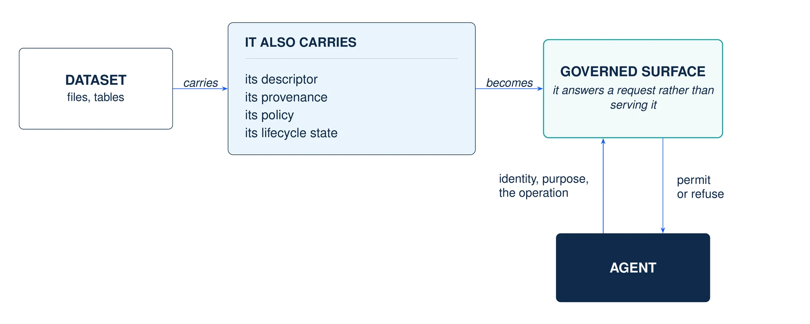
Figure 3 — What a dataset carries is what lets it answer. Presented with an identity, a purpose and an operation, a surface that holds its own policy and lifecycle state permits or refuses; the agent never meets the files.
This is what changes when a dataset stops being a passive input. A conventional dataset holds files, tables, and metadata, and the application decides what may be done with them. A dataset can instead carry its own descriptor, its policy, its provenance, and the conditions under which it must be revalidated, and then answer a request rather than merely serve it. The agent presents identity, purpose, and the operation it wants, and the dataset permits or refuses it.
Refusing before retrieval is the whole point. The safest sensitive information in a context window is the information that never entered it. A model asked to hold data it must not reveal is being asked to solve a problem that could have been prevented one step earlier.
Why Croissant matters
None of this has to become a proprietary policy system, because datasets are already growing a machine-readable control surface.
Croissant began as a standardized metadata vocabulary for datasets: what the files are, what the columns mean, how to load them. Croissant 1.1, published in January 2026, reaches well past description. It carries provenance in W3C PROV-O terms, so a dataset can say what it was derived from, by which processing step, and which person or piece of software is answerable for it. It names sc:usageInfo as the place a dataset’s conditions of use belong, with DUO codes for simple restrictions and W3C ODRL policies for fine-grained ones. MLCommons published the release as an agent-ready standard, and says in terms that the restrictions are machine-readable so that automated systems can check them.
That matters because an agent cannot respect a condition it cannot discover. Croissant gives a dataset a standard place to describe itself: what it is, where it came from, how it may be used, and what restrictions travel with it. Governance stops being prose in a dataset card and becomes data.
Description and enforcement remain different things. Croissant says where a usage condition belongs. It does not define a procedure for deciding one, bound what a condition may cost to check, say what an evaluator should do with a condition it cannot understand, require a record of what was checked, or describe how a data-side condition composes with the authority governing the caller.

Figure 4 — Three layers of one question. The first two are settled by standards; the third is what this work supplies.
Those five omissions are not a complaint about Croissant. A metadata standard’s job is to fix where a fact belongs and what it means, and stopping there is what lets everyone implement it the same way. Drawing the line there is also what leaves a well-posed question on the other side of it, with representation already settled and out of the way: given a condition written down in a standard place, what procedure decides it, and what does that procedure cost. Five clean gaps are a better place to start research than one vague one.
Metadata is not enforcement
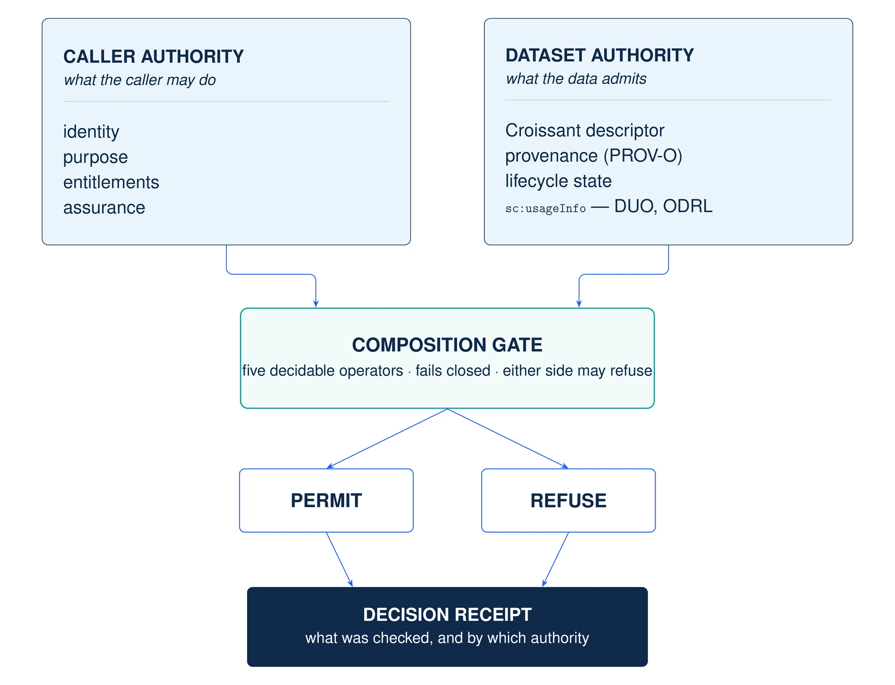
Figure 5 — Croissant is the carrier, not the gate. Each authority supplies the facts it owns, the gate composes them and fails closed, and the receipt records what was checked.
Croissant is not the authorization engine in this experiment. It is the carrier.
The policy profile supplies the executable half: a closed set of five decidable conditions, fail-closed treatment of anything the evaluator cannot process, and a decision record naming what was checked. The same policy ships in two carriers that decide identically, either as compact terms on the dataset node or as an ODRL policy in the sc:usageInfo slot Croissant defines for it. Four of the five operators turn out to be ODRL core operators, which is the shortest available statement that the disagreement was never about expressiveness. Where richer rights modeling is needed, ODRL is the right tool and this does not compete with it.
The proposal is therefore not to replace Croissant, ODRL, or the agent platform. It is to connect them at an enforcement boundary. Croissant describes the dataset. The caller describes its authority. The gate composes the two. Each component keeps the facts the others should not have to invent.
Consulting both is cheap
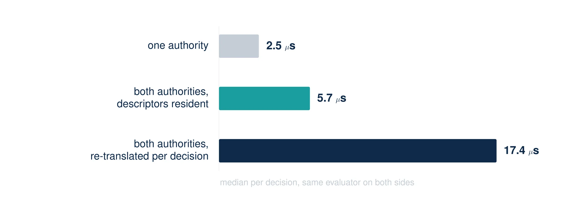
Figure 6 — The median cost of one decision. Consulting both authorities doubles a very small number, and re-translating both descriptors on every decision triples that again.
The obvious objection is cost. In this implementation, with both descriptors already loaded, the median joint decision took 5.7 microseconds against 2.5 for a single side, the factor of two anyone would predict. Translating both descriptors again on every decision, as a per-task hook does, raises it to 17.4 microseconds. Consulting two authorities instead of one is not expensive. It has simply not been specified.
The model proposes and the boundary decides
We already build every other kind of system this way. A robot controller does not redefine its own safety interlocks. A process does not decide which operating-system permissions apply to it. A database client does not grant itself authorization because its request looks reasonable. In each case the authority sits outside the component, because a component that has been compromised cannot be trusted to police itself.
Agentic AI should inherit that discipline. The model proposes. The tool, the dataset, or the physical system contributes the state and the policy it owns. A boundary evaluates the composition and leaves evidence of the decision.
That is a stronger definition of harmlessness than asking a model to behave well. It does not assume that any one component sees the whole system, and it does not require every authority to collapse into a single policy.
Harmlessness is a property of the interaction between autonomous components and boundaries they do not control.
Sources. Croissant Format Specification 1.1, 29 January 2026: https://docs.mlcommons.org/croissant/docs/croissant-spec-1.1.html · the release announcement: https://mlcommons.org/2026/02/croissant-1-1-standard/ · ODRL Information Model 2.2, which defines an ODRL Evaluator and leaves how it decides to the implementer: https://www.w3.org/TR/odrl-model/ · the profile, both carriers, the experiment behind Figure 2 and the joint decision receipt: https://github.com/doytsujin/ok-croissant-policy-profile, archived at https://doi.org/10.5281/zenodo.22018156 · Figure 1 follows “Policy-Aware Supervisory Control for Observable Embodied Biomedical Robotic Systems”, IEEE CBS 2026, Munich.
#AgenticAI #AISafety #DataGovernance #AIInfrastructure #ControlPlane #Croissant #MLCommons
© 2026 Alexander Chernov. All rights reserved. First published on LinkedIn, which remains the canonical version; this page is a reprint by the author.
At 100,000 Devices, Nothing Fails at the Average
By Alexander Chernov. First published on LinkedIn, 2026-09-01. Read the original.
Part 2 of two: what happens when things move.
Part 1 measured where load lands in a 100,000-device estate, and the result was blunt. Hash 100,000 equipment ids through Kafka’s murmur2 keyed-partitioning calculation, weight each key by its device’s rate, give one instrument a fault, and going from 16 partitions to 1024 improves the cluster average by exactly 64× while improving the actual bottleneck by 1.25×. The 64 is just 1024/16 — the mean is total load over partition count, so it reports the change you made to the denominator and nothing about the cluster.
That was a system standing still. This part is about the system moving: a site that reconnects with twenty minutes of backlog, a fleet that all reports on the same second, a pipeline that ships a schema change, and a certificate that expires on a Sunday. Every one of them is a failure that an average cannot see, for the same reason the average could not see the hot partition.
Two of the three measurements are here; the harness and the browser calculator are the same ones, at doytsujin.github.io/ok-kafka-estate-calc. As in Part 1, everything that is not measured is arithmetic from stated assumptions and is marked as such.
Recovery, not average traffic, is the design point
A manufacturing site with 12,000 devices loses its upstream network for twenty minutes. The devices keep operating and buffer locally. Then connectivity returns and every device starts replaying at once. At 1 Hz that is 14.4 million buffered events arriving at a platform that was sized for 12,000 a second, and the pressure propagates through every layer in turn.

This one has a closed form, and it is worth knowing. If each device replays at k times its normal rate while still producing new data, the backlog drains at (k-1) × normal and clears in outage / (k - 1). Simulation and closed form agree to the timestep.
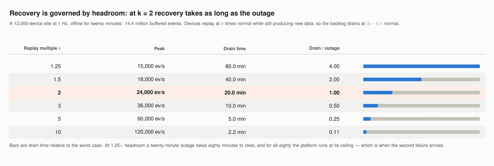

At k = 2, recovery time equals outage time. Twice normal capacity buys a recovery exactly as long as the outage that caused it. Comfortable-sounding headroom is not comfortable: at 1.25× a twenty-minute outage takes eighty minutes to clear, and for all eighty of them the platform is running at its ceiling — which is exactly when the second failure arrives.
So the capacity question is not what the average ingestion rate is. A system that comfortably handles average traffic can fail precisely when it is trying to recover from the previous failure, and that is how cascading failures begin.
The schedule is worth a factor of 56
Now suppose 100,000 devices are configured to report once per minute. The average rate is about 1,667 events/sec. Nothing frightening — unless every device reports at 12:00:00, 12:01:00, 12:02:00.
I ran all 100,000 devices through three reporting schedules and measured the peak events landing in any one-second window.
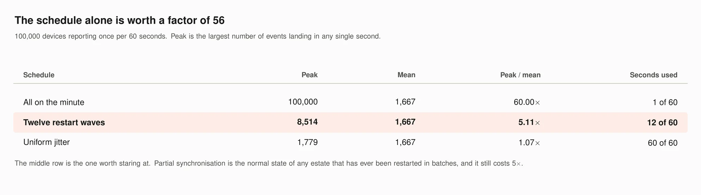
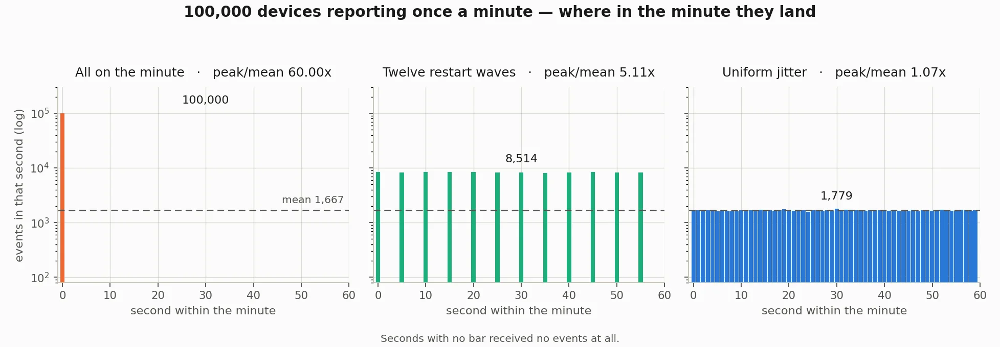
Same devices, same volume of data, same retention. The schedule alone is worth a factor of 56 in peak load, and the middle row is the one worth staring at: devices that came back in a handful of restart waves — a site power event, a fleet firmware push — still cost 5×, because partial synchronisation is the normal state of any estate that has ever been restarted in batches.
The problem is not insufficient Kafka tuning. It is a thundering herd, and the fix is jitter applied before the event ever reaches Kafka.
The topology is code, or it is a liability
Once Kafka is production-critical, topics, schemas, ACLs, brokers, connectors, SLOs, upgrades and incident response are software-delivery concerns rather than messaging concerns. Many of the hardest failures in that infrastructure begin with an apparently routine change somebody shipped.
That puts Kafka across the whole lifecycle. Application changes introduce new producers, consumers, topics, schemas and partitioning behaviour, and CI should validate them before rollout rather than after. Clusters, topics, quotas, ACLs, connectors, service accounts, retention policies and monitoring are declarative artefacts and belong in Terraform or GitOps alongside everything else. Observability means consumer lag, request latency, ISR health, rebalances, broker saturation and end-to-end event latency, at the granularity the drill-down above demands. Replication, acks, min.insync.replicas, failure-domain placement, capacity headroom, retries, DLQs, idempotence and cross-region replication are reliability settings that live in version control. And because Kafka sits in the middle of most incident chains, runbooks have to distinguish producer, broker, consumer, schema, network and downstream failures rather than paging on “Kafka”.
Upgrades deserve their own sentence, because protocol and client-version compatibility is the classic way a routine change becomes an outage. Progressive rollout, compatibility testing and a rehearsed rollback are not optional at this scale.
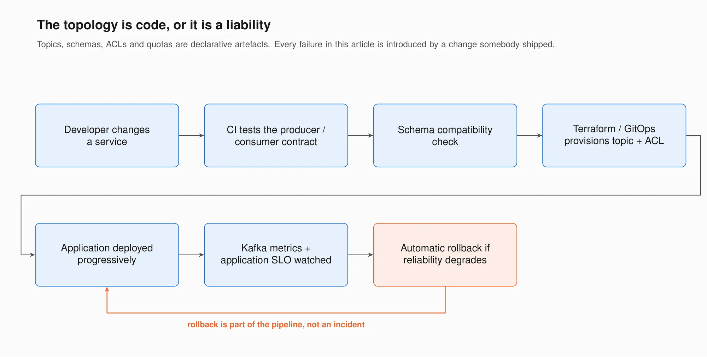
Nothing exotic. It is ordinary DevOps applied to a component that often escapes it because it is filed under “messaging”.
Security controls are part of the availability model
Kafka in a regulated environment carries data that has an access model, and that adds a set of questions the throughput conversation never reaches. Who can produce, who can consume, and to which topics? Can one tenant read another’s data? Are credentials rotated? Is traffic encrypted in transit and at rest? Can sensitive fields leave their permitted boundary? Can an administrator alter retention or ACLs without leaving a trace?
The controls are well understood: TLS, SASL or OAuth rather than shared passwords, topic- and cluster-level ACLs, per-service identities, secrets in a real secrets manager, certificate and credential rotation, network segmentation, schema and payload validation, quotas, audit logging, retention controls, and scanning of both Connect plugin images and the dependencies of producer and consumer applications. Provisioned the same way as everything else.
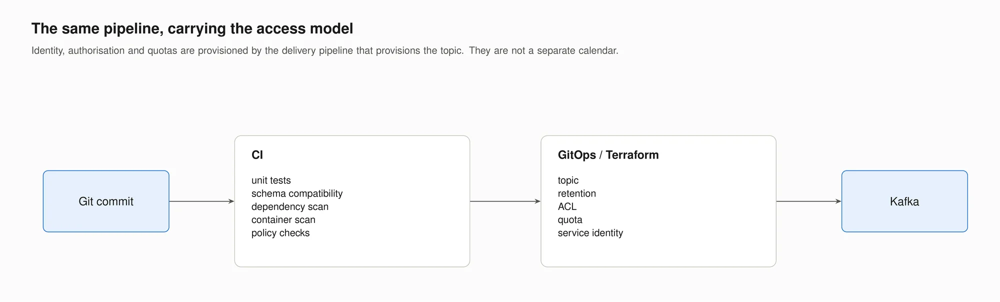
Here is the part that matters for reliability, and it is the reason this section is in a throughput article at all. Security controls cause outages, and they cause the quiet kind.

Consumer lag looks normal. It looks normal because lag measures the distance between what was written and what was read, and nothing was written. The health metric is arithmetically incapable of seeing the failure, in the same way the cluster average is incapable of seeing the hot partition. A producer-side certificate expiry presents as a quiet system.
The other two chains in that figure are noisier but no less real. A rollout that removes a consumer’s READ permission turns it into a retry loop that never drains, and a compromised or buggy producer publishing a hundred times its normal volume becomes broker pressure and then cluster degradation.
That third one is the hot-partition measurement again, arriving through the security door instead of the firmware door — and the quota that stops it is a security control doing reliability work. Authentication, authorisation, quotas, certificates and network policy are part of the availability model, not adjacent to it. Teams that separate the two end up with a security calendar that schedules outages.
The difficult questions are about failure
At 100,000-device scale I am not very interested in whether Kafka can process 100,000 messages per second. It is a useful benchmark and it says surprisingly little about whether the system is reliable. I would rather ask:
- What happens when a site reconnects and replays thirty minutes of buffered telemetry?
- What happens when one consumer falls hundreds of millions of events behind?
- Can an availability-zone failure occur without losing the manufacturing event stream?
- What happens if a firmware defect causes 20,000 devices to publish a hundred times more frequently?
- Can we distinguish a duplicate measurement from a legitimate repeated measurement?
- What happens when an event arrives forty-five minutes late?
- Which certificate expires next, and what stops when it does?
And, in a regulated environment, the one that matters most: can we reconstruct the exact state of a batch at a particular point in time?
That question leaves throughput behind entirely. It touches ordering, event time versus processing time, replay, idempotency, schema evolution, provenance, retention, auditability and state reconstruction. Those are distributed-systems questions, they are reliability-engineering questions, and increasingly they are delivery-pipeline questions, because the answer depends on what a deployment three months ago did to a schema.
Reliability starts where the benchmark ends
At sufficient scale, backpressure, consumer lag, partition skew, ISR degradation, retry amplification, gray failures, recovery bursts, capacity headroom, late-arriving events and failure-domain isolation stop being vocabulary. They become architectural properties of the system, and each one is a thing you either designed for or did not.
Three of them now have numbers attached across the two parts, and the numbers point the same way each time. The cluster average improves by exactly the factor you grew the denominator by, while the bottleneck does not move. Lag reads normal while nothing is being published. A schedule nobody chose costs a factor of 56. In every case the reassuring measurement and the actual failure are looking at different things, and the reassuring one is the one on the wall.
If you want the three measurements against your own estate rather than mine, the calculator is at doytsujin.github.io/ok-kafka-estate-calc. It is deliberately not a broker benchmark and has no output that answers whether your cluster can cope — that question needs your cluster. What it will tell you is where the load actually lands, what your reporting schedule costs, and how much headroom your recovery needs.
The challenge is not moving a very large number of messages. It is that when devices, networks, brokers, consumers, sites, certificates and downstream systems behave in unexpected ways — and they will — the platform has to absorb the disturbance, preserve the meaning of the data, recover predictably, and tell you exactly what happened.
Throughput is where that conversation starts, not where it ends.
© 2026 Alexander Chernov. All rights reserved. First published on LinkedIn, which remains the canonical version; this page is a reprint by the author.
At 100,000 Devices, Throughput Is the Easy Part
By Alexander Chernov. First published on LinkedIn, 2026-08-31. Read the original.
Part 1 of two: where the load actually lands.
When someone says a hundred thousand pieces of equipment are connected to a streaming platform, the first question is almost always whether Kafka can handle it. It is a reasonable question, and it is close to the least interesting one available. At that scale the hard engineering is in bursts, backpressure, partition skew, replay, late data, recovery behaviour, failure domains, and reconstructing what actually happened — and a throughput benchmark answers none of it.
This gets more interesting in biopharma, where a “device” might be an environmental sensor, a bioreactor, a chromatography skid, a laboratory instrument, a PAT system, a sequencer, or an imaging platform. One device rarely means one signal.
I have not benchmarked a cluster of this size and this article does not claim to. What I did instead was measure the things that do not need a broker: the partitioner, the reporting schedule, and the arithmetic of recovery. Those are exactly computable over a real key space, and they run in the browser at doytsujin.github.io/ok-kafka-estate-calc if you want to put your own estate in — no cluster, nothing uploaded.
This part is about where the load lands: the arithmetic of the estate, what a key actually is, and the one measurement that decides how a partitioned log behaves under it. Part 2 is about what happens when things move — recovery, reporting schedules, deployments and certificates. Everything here that is not measured — the estate, the device rates, the storage figures — is arithmetic from stated assumptions, and I have marked it as such.
Start with the arithmetic
A useful first approximation is events/sec = devices × events/device/sec.
With 100,000 devices, a small change in reporting frequency changes the architecture dramatically.
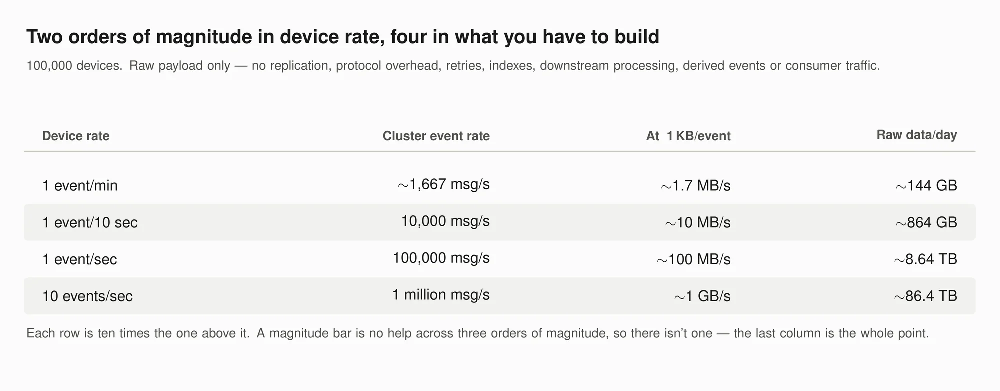
Two orders of magnitude in device rate is four orders of magnitude of difference in what you have to build, and those are only raw payload numbers. They exclude replication, protocol overhead, retries, indexes, downstream processing, derived events, and consumer traffic.
One device is not one measurement
A bioreactor or chromatography skid might expose temperature, pH, dissolved oxygen, agitation, pressure, flow, conductivity, UV, valve states, pump speeds, alarms, recipe state and batch state — potentially dozens or hundreds of tags. A naive architecture therefore turns 100,000 devices × 100 measurements × 1 sample/sec into ten million measurements per second. That does not mean ten million Kafka messages per second. The representation is a design decision, and it is made before anything reaches the broker.
Instead of publishing every tag independently, an edge or acquisition layer can produce one contextualised observation.

Where sampling semantics allow it, a hundred individual measurements become one semantically useful equipment observation. That is not an optimisation. It changes the shape of the entire distributed system, because the unit that gets ordered, partitioned, replayed and audited is now an equipment state rather than a scalar.
A 100K-device estate is heterogeneous
I would not model a large biopharma environment as 100,000 identical producers. An illustrative estate looks more like the one below, and it is the one the harness runs on.
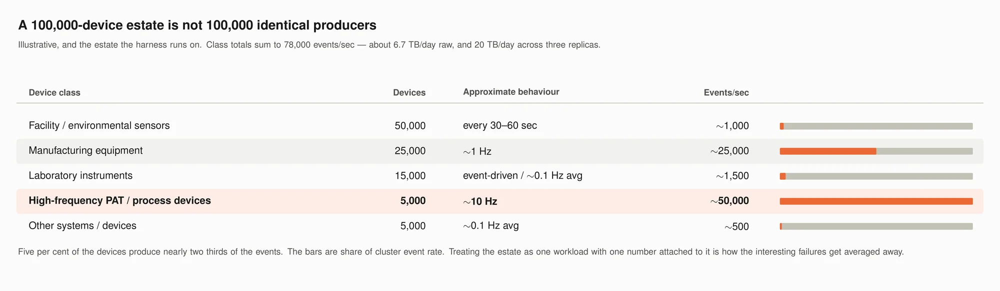
That averages around 78,000 events/sec, or roughly 6.7 TB/day of raw event data at 1 KB per event. With replication factor 3 the brokers are writing on the order of 20 TB/day across replicas. Keep seven days online and the storage footprint is substantial before you add safety margin, segment overhead, tiered storage or consumer traffic.
Note where the volume lives. Five per cent of the devices produce nearly two thirds of the events. The estate is not one workload with one number attached to it, and treating it as one is how the interesting failures get averaged away.
A “100,000-device Kafka architecture” is therefore not a workload specification. Device count tells you the size of the estate. The distribution of event rates tells you what system you actually have to build.
This is unquestionably a serious streaming workload. Average throughput is still not the part I would worry about most.
Partitioning solves ordering, and creates its own questions
For equipment telemetry a natural Kafka key is equipment_id, which keeps every observation from BR-001 in the order it was produced. That does not mean one partition per piece of equipment: 100,000 devices is not 100,000 partitions, and a cluster configured that way would collapse under its own metadata.
Instead, hash(equipment_id) → partition distributes large numbers of equipment streams across a manageable partition set while preserving ordering per equipment identifier. The precise partition count depends on throughput, workload isolation, consumer parallelism, recovery requirements and operational constraints.
Hashing does not eliminate the next problem, which is skew — and this is the one I most wanted a number for.
The hot-equipment problem, measured
I put all 100,000 equipment ids through Kafka’s murmur2 keyed-partitioning calculation and weighted each key by its modelled event rate. The exact transcription, seed and modulo are in the calculator’s source at github.com/doytsujin/ok-kafka-estate-calc. Then I gave one analytical instrument a firmware defect and let it publish at 20,000 events/sec instead of 10.
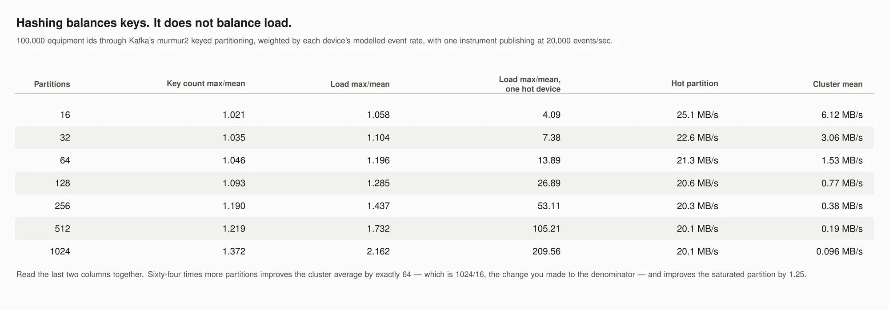
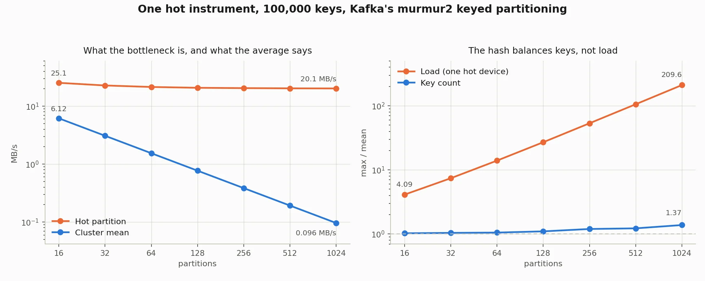
The first column is the hash doing its job. Key counts stay within five per cent of uniform, which is the result everyone expects and quietly stops checking after.
The rest of the table is the actual behaviour. Even with no hot device, load skew is already worse than key skew and grows with partition count, because devices do not all publish at the same rate and the hash cannot know that. Add one hot device and the ratio goes to 13.89× at 64 partitions and 209.56× at 1024.
Read the last two columns together, because that is the finding. Going from 16 partitions to 1024 improves the cluster average by exactly 64x — from 6.12 MB/s to 0.096 MB/s — and improves the actual bottleneck by a factor of 1.25, from 25.1 MB/s to 20.1 MB/s.
The 64 is not a measurement. It is 1024/16. The mean is total load over partition count, the total load did not change, so the average was always going to improve by exactly the factor you multiplied the denominator by. It is arithmetically incapable of reporting anything else, and it will do this on your cluster too, whatever is wrong with it. Every partition you add makes the dashboard look better and the problem stay the same. A single key is an unsplittable unit of load, and no partition count divides it.
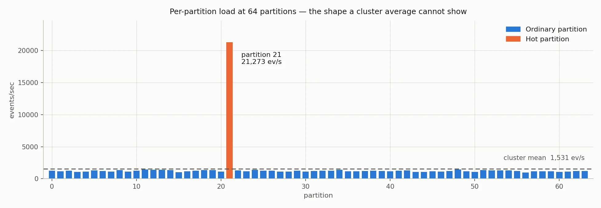
I ran the whole thing again under an independent SHA-256 partitioner as a control. The numbers land within noise of murmur2 throughout, which is the point: this is a property of the workload, not of a hash function, and it will not be tuned away.
That is also why aggregate dashboards are insufficient rather than merely coarse. At this scale I want to be able to move down through the levels.

The failure lives several layers below the average, and the average gets more reassuring the further you drill away from it.
Kafka probably should not carry the rawest scientific signal
Suppose an instrument produces a 10 kHz waveform, a large microscopy image, a chromatogram, sequencing output or a large spectrum. You can push these payloads through Kafka. For an enterprise biopharma architecture it is usually the wrong abstraction.

The object store holds the large payload. Kafka carries an event describing what happened, and that event is a few hundred bytes rather than a few hundred megabytes.
The event stream now carries meaning and state while object storage carries bulk scientific data. Kafka does not have to become a scientific file system in order to be central to the architecture.
Three data planes
For a large biopharma environment I find it useful to separate three classes of information.
Operational events — EquipmentStarted, BatchStarted, ValveOpened, AlarmRaised, SampleCollected, RunCompleted, QualityCheckFailed. Compact, semantically rich, and a description of things that happened.
Telemetry — temperature, pressure, pH, flow, dissolved oxygen, RPM, environmental measurements. Higher-volume continuous information, and the plane most likely to be aggregated or downsampled before it reaches the enterprise streaming layer.
Bulk scientific data — spectra, images, chromatograms, sequencing data, microscopy, raw instrument files. These belong in object storage or another system optimised for large scientific objects, with Kafka carrying the event announcing that the object exists, where it is, what generated it, and how it relates to the surrounding process.
The three planes then work together instead of forcing every form of data through the same transport abstraction.
Kafka becomes the nervous system, not the entire body
Put the three planes and the estate together and the architecture takes a definite shape.

At that point Kafka is not simply a message broker. It is closer to a nervous system carrying operational state across the estate — which means it stops being an application dependency and becomes production infrastructure, with everything that implies about how changes to it are made.
What this part settles, and what it does not
One number is now firm, and it is not the one on the dashboard. Load skew is a property of the workload and not of the hash: a single key is an unsplittable unit of load, no partition count divides it, and every partition you add makes the average look better while the bottleneck stays exactly where it was. The cluster mean is arithmetically incapable of reporting anything else.
That is a statement about a system standing still. It says where the load sits when the estate is running normally, which is the easy case. It says nothing about what happens when twelve thousand devices reconnect at once, when every device in the fleet reports on the same second, when a deployment changes a schema, or when a certificate expires quietly on a Sunday.
Those are the cases where estates actually fail, and none of them shows up in an average either. That is Part 2.
© 2026 Alexander Chernov. All rights reserved. First published on LinkedIn, which remains the canonical version; this page is a reprint by the author.
From Governed Data to Governed Motion: A Control Plane for Biomedical Robots
By Alexander Chernov. First published on LinkedIn, 2026-08-25. Read the original.
For the last few years the hard problem in enterprise AI has been governing data — making sprawling, heterogeneous data usable, traceable, and trustworthy enough to put a model on top of it. I’ve written before about agentic datasets: data that carries its own descriptor, policy, provenance, and the ability to refuse to be used in ways its policy forbids.
But in a laboratory, the AI’s “output” is not a chart or a summary. It is a robot arm moving a plate of live cells through a sterile workspace. When the consumer of a governed decision is a physical manipulator, the same control-plane ideas stop being about tidiness and become about safety. The frontier moves from governing data to governing motion.
In the physical world, a bad action is not free
In many analytical software systems, a wrong output can be caught, recomputed, or rolled back before it touches the world. Robotic actuation is different: a wrong action moves a real manipulator — possibly into a locked sterile zone, through an occupied fixture, or while an operator’s hand is in the workspace — and once motion begins, the consequences can be immediate and irreversible. “Check the policy, then probably act” is not good enough, because the gap between the check and the act is exactly where accidents live.
So the requirement inverts. It is not enough to log that a rule was violated. The architecture has to make a refused intent structurally incapable of reaching the normal actuation path. Refusal has to be structural, not a runtime afterthought. That is a claim about the software architecture and not about the physical system: a controller bug, a bypass path, a hardware fault, or somebody jogging the arm by hand all sit outside it, which is exactly why the layers below still matter.
A supervisory control plane above the motion stack
The shape that delivers this is a supervisory layer that sits above the low-level controllers and planners — it does not replace them. Each robot is modeled as a long-lived agent with an explicit lifecycle: it reasons, then plans, then executes, then publishes results, then returns to idle.
The trick is where policy is evaluated. Policies — sterility, human safety, chain of custody, workspace occupancy — are checked in a dedicated reasoning phase, before any planner or driver is touched. A denial returns the agent to idle without ever entering planning or execution. Because the only side-effectful steps live past that gate, “no actuation on a denied intent” becomes a property of the state machine itself, not a promise made by careful code.
This plane does not replace functional safety. Emergency stops, hardware interlocks, safety-rated controllers, collision limits, and workspace monitoring remain the final protective layer, and nothing here weakens them. The supervisory plane operates earlier and answers a different question. Conventional safety asks, “how do we stop an unsafe motion?” The supervisory plane asks, “why was this motion authorized to begin?” Two different predicates: governance decides whether an operation is authorized, functional safety decides whether the resulting motion stays physically safe, and neither one answers the other’s question. Three layers, three jobs: the supervisory plane governs task admission, intent, provenance, and accountability; the safety controller enforces hard real-time physical limits; the motion stack does planning and actuation.
![A uniform robot lifecycle in which policy is evaluated during Reasoning. An approved intent proceeds to Planning and Executing — the only steps with physical side effects. A denial returns to Idle without ever crossing that line, so pre-actuation refusal is a structural property of the architecture rather than a runtime check. Admission is not the end of it: authorization is re-checked while executing, and a predicate that stops holding suspends the task into a recovery path that ends in a safe state, an escalation, or an accountable human handoff.](governed-motion/fig_refusal_gate.webp)
Three properties then follow from the architecture — enforced by construction, provided its state and side-effect boundaries are respected:
- Refusal. Unsafe intents are rejected before the robot can move, and each refusal record says which policy was violated and why.
- Traceability. Every decision, plan, execution event, and telemetry sample carries the originating intent’s trace identifier, so the full causal chain can be reconstructed after the fact.
- Observability. An operator can watch, live, what each agent is doing, why it decided what it decided, and where a task was interrupted — without stopping the running system.
What a governed intent carries
The word intent is doing a lot of work above, so it’s worth making concrete. A governed intent is not a natural-language command or a bare motion request. It is a structured runtime artifact that carries enough context for policy to be evaluated before anything moves: the identity of the requesting workflow, the sample and batch in play, the required sterility and workspace state, the permitted equipment, the operator’s authorization, time constraints, the applicable policy set, and a trace identifier.
intent: transfer_plate
source: incubator_2
destination: reader_1
sample:
batch: batch_24
plate: plate_07
required_state:
sterility: sterile
workspace: unoccupied
requested_by:
workflow: assay_run_12
operator_role: automation_operator
policy_set: biosafety_v3
trace_id: tr-8f31
The policy engine therefore evaluates not just what the robot is asked to do, but under which conditions it is allowed to do it. This is the same move as an agentic dataset’s descriptor — identity, provenance, policy, and chain of custody travelling with the thing being governed — applied to a motion request instead of a data asset.
An intent is also not a trajectory. It states which operation is authorized and under what conditions; how the arm actually gets there — the joint path, the velocity profile, the collision checks — stays with the planner. Keeping those separate is what lets one policy hold across machines that move in completely different ways.
Beyond the gate: authorization can go stale
Admission control is necessary but not always sufficient. Some conditions are stable for the length of a task; others are leases that can expire mid-motion. A workspace becomes occupied, a sterile boundary is opened, an instrument enters a fault state — after the intent was authorized but before it completed. For those conditions the authorization has to stay continuously valid, or be re-checked at defined execution checkpoints. Governed motion needs both pre-actuation admission and runtime revocation: a policy-triggered suspension the moment a safety predicate stops holding.
The underlying shift is short to state and long to build. Authorization is a state, not a one-time decision. An intent has to be authorized when it starts, remain authorized while the predicates it relied on still hold, be revocable the moment they stop, and terminate through a path somebody is accountable for. A gate that answers once and never again is not governing motion; it is stamping requests.
Refusal before actuation is likewise only one failure mode. Once a task is underway, the system needs defined responses for loss of telemetry, a planner timeout, a controller disconnect, a revoked policy, or a partially completed transfer. The safe response might be to stop, hold position, retreat to a known pose, quarantine the sample, or hand off to a human — but it has to be an explicit part of the lifecycle, not exception-handling buried inside a driver. Governing how a task stops matters as much as governing whether it starts.
What the control plane must guarantee
Stated as testable properties rather than aspirations, a governed-motion system should guarantee:
- No unauthorized actuation — a denied intent cannot reach a planner, controller, or actuator.
- No orphaned motion — every physical action stays bound to an active intent, a policy decision, and a trace.
- Revocable authority — if a safety-relevant condition changes, execution can be suspended or terminated in flight.
- Deterministic recovery policy — every recognized failure condition maps to a defined recovery or escalation transition. What the architecture can guarantee is the response, not that the plant physically reaches the target state: an actuator that has failed will not retreat to a safe pose because a policy says so.
- Accountable human authority — an operator can inspect, interrupt, or assume control without stepping outside the audit trail.
That last one matters. Human oversight belongs inside the control model, not as an external escape hatch. An operator may pause, abort, or take over, but each intervention stays attributable and policy-bound. Emergency action is always available; an administrative override is a different thing, and should demand explicit authority, a rationale, and an audit record. Automation does not remove human responsibility — a good control plane makes it legible. Expressed this way, the guarantees become things you can actually check: as event-log verification rules today, and as invariants or model-checking conditions as the system hardens.
Why this matters for bionic and biomedical systems
Biomedical automation is exactly the setting where this pays off. Sterility, human-safety lockouts, sample integrity, and chain-of-custody are not optional features; they are the reason the system is allowed to run at all. A supervisory layer that makes every action explain itself — and every refusal carry its rationale into an audit trail — is what turns “we automated the lab” into an automation architecture whose decisions can be inspected, traced, and validated. The architecture does not confer approval; it produces the evidence any approval would have to rest on.
It also generalizes across hardware, and that is more than a convenience — it is where the architecture earns its keep. The same intent-level workflow — transfer this plate — runs on a Cartesian liquid handler and on a six-axis articulated arm. The boundary is the useful part: a governed intent names the operation and its conditions, an embodiment-specific planner turns that into a trajectory, and the controller actuates it. Policy attaches at the semantic layer and stops there. The kinematics differ per machine; the governance does not, so it is written once at the intent level instead of being reimplemented, slightly differently, inside every robot’s controller.
The honest next step
To be precise about what is proven and what is designed: I validated the admission invariant in simulation, verifying it directly from the recorded event log — refused intents never reached a planner or driver, and every trace reconstructed end to end. The runtime revocation, recovery, and human-authority guarantees above extend the same supervisory state-machine model, but they are architectural commitments rather than measurements, and none of them has been run on hardware. Simulation proves the design is internally consistent; it does not prove it survives contact with a real motion stack.
If you would rather see the gate than read about it, there is a small public demonstrator: a two-link arm and a discrete lifecycle running in the browser, where you can put an operator in the workspace, lock the sterile zone, and watch intents get refused with the invariant checks updating live (source). It is a demonstrator and not an experiment, and it says so on its own front page: no physics, no hardware, no sensing, and the policies, the workcell and the conditions that trigger a refusal were all written by the same hand. What you are watching is an architecture doing what it was constructed to do — useful for seeing the shape of the idea, and not evidence that a real robot is safer.
That is the work I’m on now: pushing the supervisory layer down onto a real robotics middleware as an admission gate, so that a policy denial is bound to controller activation: the controller that would drive the task is never activated, and an inactive controller claims no command interfaces, so a refused request has no path to the hardware. “No actuation on denial” is then enforced by the middleware rather than by the supervisor politely declining. Worth being exact about what that does and does not mean — it is not a matter of shutting the robot down. Whatever is holding the arm in place stays active; what never happens is the denied task acquiring a claim on the interfaces it would need to move. Runtime revocation and safe-state recovery harden on that same real stack. Transport jitter, scheduling, and real control budgets are where the interesting engineering lives.
The pitch, in one line
We learned to make data that can refuse to be misused. Move the same idea into the physical world and you get motion requests that must prove they are authorized before they become physical actions — a control plane where refusal, traceability, revocation, and recovery are properties of the architecture, not features bolted on after something goes wrong.
Part of this thinking is in a paper presented at IEEE CBS 2026 (Cyborg and Bionic Systems), Munich, September 2026, and forthcoming in IEEE Xplore.
#AgenticAI #Robotics #BionicSystems #LabAutomation #ControlPlane #Safety #ROS2 #Bioprocessing #DataGovernance
© 2026 Alexander Chernov. All rights reserved. First published on LinkedIn, which remains the canonical version; this page is a reprint by the author.
A Game Is a Data Problem: What Reimplementing an Engine Taught Me About Silent Contract Failure
By Alexander Chernov. First published on LinkedIn, 2026-08-23. Read the original.
Nobody files a game under data engineering. Games are graphics, physics and frame budgets — a rendering discipline, shelved next to shaders and GPUs. Data work lives somewhere else entirely, in warehouses and pipelines and schemas.
I spent several weeks rebuilding a 1993 game engine so that it runs in a browser, and came away convinced that shelving is wrong. The result is playable at AgentArena.ca, which is the world I am building as a controlled environment for assessing agentic behaviour and implementation. The rendering was the part I expected to be hard. It was not the part that consumed the effort, and it produced nothing worth writing down. Almost every difficult hour went into the data — and every one of those hours taught something that transfers directly to pipelines which have never drawn a pixel.

Why “from scratch” is the whole premise
Almost every version of this game that runs in a browser is the original 1993 C source compiled through Emscripten: the same engine, re-hosted. What I built is a reimplementation written from scratch against the file formats, sharing no code with the original.
That distinction is not about bragging rights. A transpiled port inherits thirty years of accumulated handling for every strange thing the data can do — the special cases are already in there, fixed long ago by someone else, invisible to whoever compiles it today. Writing the reader fresh means meeting every one of those assumptions yourself, in the order the data chooses to break them.
So I did not set out to study data quality. I got a controlled experiment in it, by removing thirty years of accumulated defences and then pointing a brand-new consumer at a real dataset.
Roughly 9,200 lines of engine code and 2,000 of frontend, 174 engine tests, running against Freedoom — the BSD-licensed open asset set. No original source, no commercial data.
The dataset has conventions where a declarative schema should be
The game ships its content in a single container file: a header, a directory of named entries, and a defined binary layout for each kind of entry — but no declarative schema describing the semantic relationships among them. This is not unstructured data. It is structured data whose most important contracts live outside the structure. The names carry all the meaning, and every rule is unwritten:
- An entry called
E1M1is a level — but only because it is a zero-length entry immediately followed by one calledTHINGS. Nothing declares this. You infer it from adjacency. - Entries beginning
DSare sounds. Entries between markers namedS_STARTandS_ENDare sprites. - A sprite’s animation frame and viewing angle are encoded in the last two characters of its name, so
TROOplus frameIplus rotation1becomesTROOI1. There is no index anywhere of which frames exist.
If you have ever consumed a partner’s CSV drop where the filename encodes the region and the date, or a bucket where _v2 in a key means the columns changed, you have met this dataset. It is enormously common — and it is not a legacy curiosity. It is what most real integrations look like before somebody writes the schema down.
Every one of those unwritten rules is a contract. And when a contract breaks, nothing throws.
Here is what that looks like from the other end — a real frame from the reimplementation, with each part of it traced back to the entry it was assembled from. There is no pixel on this screen that was not fetched by name.
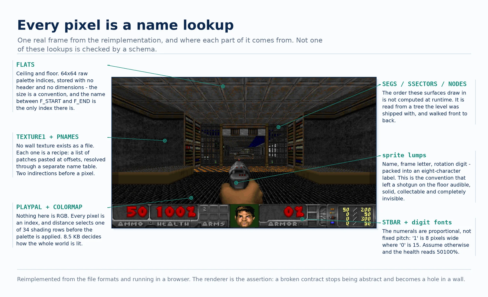
Eight failures, and not one raised an error
This is the actual bug history of the project, not a constructed example:
| The assumption | The reality | What it looked like |
|---|---|---|
| The texture atlas needs the objects this level spawns | Which objects spawn depends on the difficulty | A shotgun you could hear, walk into and pick up — and never see |
A character’s death frames are named I–M | For several of them, they are not | An invisible monster — present, solid, undrawn |
The sound DSPOSIT1 exists | Not guaranteed across releases | Silence, indistinguishable from broken audio |
| Every object record should be created | 31 in the first level are multiplayer-only | An arsenal the level was never designed around |
Level E1M8 leads to E1M9 | It leads to E2M1 | A level no playthrough can reach |
| The texture atlas is built once | It is rebuilt per level | Level two drawn with level one’s textures |
| A two-sided wall always draws its upper section | Not when both sides open to sky | 78 walls hanging in mid-air |
| An HTTP 200 means I received the file I asked for | A dev server answers 200 with its index page | A failure surfacing three layers from its cause |
Read the third column again. Not one of those is an exception, a stack trace, or a failed assertion. Every one is plausible wrong output. The program ran. The tests passed. The data was quietly, confidently misread.
The first row is my favourite, because it is the one that stayed fully functional while being wrong. The atlas of textures was built from the objects the level spawns — but which objects a level spawns depends on the difficulty, and the two easiest settings place two shotguns that no other setting does. So on those settings the world contained objects the atlas had never heard of. They spawned. They blocked movement. They made a sound when collected. They were simply never drawn, because the renderer skips a sprite whose texture is missing, and a missing texture is not an error.
Nobody reported it as a rendering bug. It was reported as “there is a shotgun here and I can pick it up, but I cannot see it” — which is a much better bug report than I would have written, and it names the shape exactly: the data said one thing, two consumers disagreed about it, and only one of them was visible.
That is precisely the category of bug that costs real money in real pipelines, and precisely the category that conventional unit tests written from the same assumptions are structurally bad at catching — because such a test encodes the same mental model the code does. I wrote both. They agreed with each other, and they were both wrong.
The renderer’s real job turned out to be detection
Here is the part I did not expect, and the reason I now think games belong in this conversation at all.
A renderer is a continuous, high-bandwidth assertion about your data. Point a camera at 18,000 vertices sixty times a second and a broken contract stops being an abstraction: it is a hole in a wall, a monster that is not there, a room lit wrongly. Several of those eight bugs were caught by looking at a frame — not by a test, not by a log line, not by a metric.
I want to be precise about how much luck that represents. A batch pipeline gets nothing comparable. The same eight failures inside an ETL job produce a report that is plausible, delivered on time, and wrong — and it stays wrong until somebody downstream happens to notice a number they did not expect, weeks later, if ever.
So the transferable insight is not “use a renderer”. It is this: most data systems have no comparable detector, and that absence is a design choice nobody made deliberately. If your only feedback channel is a test suite you wrote against your own assumptions, you have exactly one opinion about your data, held twice.
The discipline that worked, every time
The fix was identical in all eight cases, and it is not “write more tests”:
Enumerate what the data actually contains. Then assert that every name your code depends on is present.
Concretely, the project grew small tools whose only job is to interrogate the dataset and print what is genuinely in it:
- One lists every animation frame each character actually has. The behaviour tables were built from that output rather than from documentation or memory — and a test then demands that every frame the tables name exists in the file. Naming a frame that is not there was the invisible-monster bug. Now it fails the build.
- One lists the 69 sound entries present. A test asserts that every sound the engine can play is among them. A missing name produces silence, which is indistinguishable from the audio system being broken.
- One counts which of the roughly 140 possible level behaviours the shipped levels actually use. The answer for level one was eight. That turned an open-ended implementation backlog into a measured one, ordered by what the data demands rather than by what the specification allows.
None of that is testing the code. It is testing the code’s assumptions about the data — and in this project, that is what converted a silent gap into a build failure.
If you take one thing from this article, take that distinction. Your test suite almost certainly checks that your code does what you think. It very likely does not check that your data is what you think.
What this is not
Here is where I disappoint anyone expecting a scale story.
The numbers: 27.5 MB of content loaded once (9.8 MB compressed), a 4 MB texture atlas uploaded once per level, 0.84 MiB of vertex data per frame, a simulation stepping 35 times a second. A whole level fits in a phone’s cache. Nothing streams. There is no ingest rate, no partitioning, no backpressure worth a diagram.
Calling this a high-throughput data problem would be selling something the measurements do not support, and anyone who checks would find out in about a minute. It is a contract problem, at small volume, where the consequences happen to be visible.
Those are genuinely different problems, and conflating them is how architecture diagrams become fiction. Most organisations I have worked with have far more contract problems than throughput problems — and spend far more attention on the second.
What transfers
Strip the game out and the shape is entirely ordinary:
- A dataset with conventions instead of a schema. Names that carry meaning, rules that were never written down, exceptions known only to whoever produced it.
- A consumer that encodes assumptions about those conventions — necessarily, because there is nothing else to encode them against.
- Failures that are silent, because a misread convention produces plausible output rather than an error.
- A validation step that makes the assumptions explicit and checkable, by enumerating the data and asserting against what is actually there.
Step 4 is cheap. In this project it is a handful of small programs and a few dozen assertions — a rounding error against 9,200 lines. It is also the only reason I now trust the result.
The uncomfortable question it leaves me with, and the reason I wrote any of this down: how many of my pipelines have a detector at all, and how many merely have tests that agree with the code?
Where this came from
Two reasons, and the first is the honest one: rebuilding a game engine is enormously good fun, and I would have done it regardless of whether anything useful came out.
The second is that I needed a world to point at. I gave two talks this year arguing that a simulated world makes an unusually good laboratory for engineering autonomous systems — Building a Doom-Like World to Explore Agentic Systems at NDC Toronto, and Simulated Worlds for Agent Engineering: Planning, Policy, and Evaluation at AgentCon Toronto. The argument in both is that a game engine gives you strict control loops, complex state transitions and real-time feedback in a setting where failures are cheap and visible — and that the key invariant worth holding is that every action be observable, attributable, and reproducible through world state.
This article is deliberately about the layer underneath that claim, and I have kept it there on purpose.
Because reproducibility is not something you bolt onto a simulation. It is a property of whether the thing reading your data got it right — and a world that silently misreads its own content is not a controlled environment, however deterministic the loop above it looks. A level that spawns thirty-one objects the designer never placed is not a repeatable experiment. Neither is one whose second run draws with the first run’s textures.
So: the fun came first, the laboratory came second, and the data problem turned out to sit under both. That ordering was not planned, and it is the part I would most want someone else to take away.
What the world is for next
The engine now runs in a browser at AgentArena.ca, and that is the point at which it stops being a rebuild and starts being an instrument: one world, opened in a tab, running the same simulation on every machine that opens it.
What I intend to measure in it is agentic behaviour and implementation — how an agent perceives a frame, what it decides from that, what it actually does, and whether any of it survives being run a second time. Perception, policy and action are three separate claims, and a world with strict control loops and cheap, visible failures lets each of them be checked against recorded state rather than against a transcript of the agent describing itself.
The engine is simply the part that had to be right first, and that is the whole reason this article is about data rather than about agents. An agent evaluated inside a world that misreads its own content tells you about the world’s bugs, not the agent’s competence. Every assertion in the section above exists so that when the agent work is measured, the world is not the variable.
The one-line version
A game is a data problem wearing a graphics costume. Rebuilding one from scratch stripped away thirty years of accumulated defences and showed me eight ways a dataset can be misread with nothing reporting a problem — and that the fix is not more tests of the code, but assertions about the data, generated by enumerating what is actually in it.
The engine is original work built against Freedoom (BSD-licensed). DOOM is a trademark of id Software LLC; this project is not affiliated with, endorsed by, or sponsored by id Software or ZeniMax, and contains none of their code or data.
#DataEngineering #DataQuality #DataContracts #SoftwareArchitecture #Observability #Testing
© 2026 Alexander Chernov. All rights reserved. First published on LinkedIn, which remains the canonical version; this page is a reprint by the author.
Should You Argue With an LLM?
By Alexander Chernov. First published on LinkedIn, 2026-08-22. Read the original.
Push back on a language model and it will usually change its answer. Say “are you sure?” and it apologises, reconsiders, and hands you something different. People read this as either humility or spinelessness depending on their mood, and lately they read it as personality — the model has an attitude, the model is eager to please, the model caved.
It is none of those things in the way it sounds. It is a measured, reproducible property of these systems, and there is now enough research on it to say something practical: when arguing helps, when it quietly makes the answer worse, and why the model cannot fix this by thinking harder.
The plain measurement
The cleanest experiment is also one of the oldest. In the FlipFlop study [1], ten models were given seven classification tasks, allowed to answer, and then challenged with a single line — a version of “are you sure?” Nothing was added. No evidence, no correction, not even a hint about which direction to move. Just pressure.
The models changed their answers about 46 percent of the time. Average accuracy fell 17 points between the first answer and the last.
That is the effect in its purest form. Content-free pressure moves the answer, and it moves it downhill. Fine-tuning on synthetic data reduced the deterioration by about 60 percent and did not remove it.
Two different things are happening
A Stanford group later separated the two ways an answer can move [2]. Working across mathematics and medical questions, they found sycophantic behaviour in 58 percent of cases. But most of it was progressive — the model started wrong and the user’s pushback moved it to the right answer, in about 43 percent of cases. Regressive sycophancy, where a correct answer was abandoned for a wrong one, happened in about 15 percent.
So arguing is not simply harmful. It is a trade, and in that evaluation the odds ran roughly three to one in your favour. What the numbers do not say is what decides which side you land on. Model, version, task and the state of the conversation all move it. The one variable on your side of the exchange is why you are pushing back — whether you know something the model does not, or the answer merely made you uncomfortable. The study does not separate those two cases. It is still the distinction worth carrying into your own use of it.
Two more details from that work are worth carrying. Sycophantic behaviour persisted in about 78 percent of cases, so once the answer moves it tends to stay moved, and everything downstream in the conversation is now built on the moved answer. And disagreement stated up front, before the model answers, produced more sycophancy than disagreement raised after — 62 percent against 57. Telling the model what you think before you ask is the strongest single way to get told what you think.
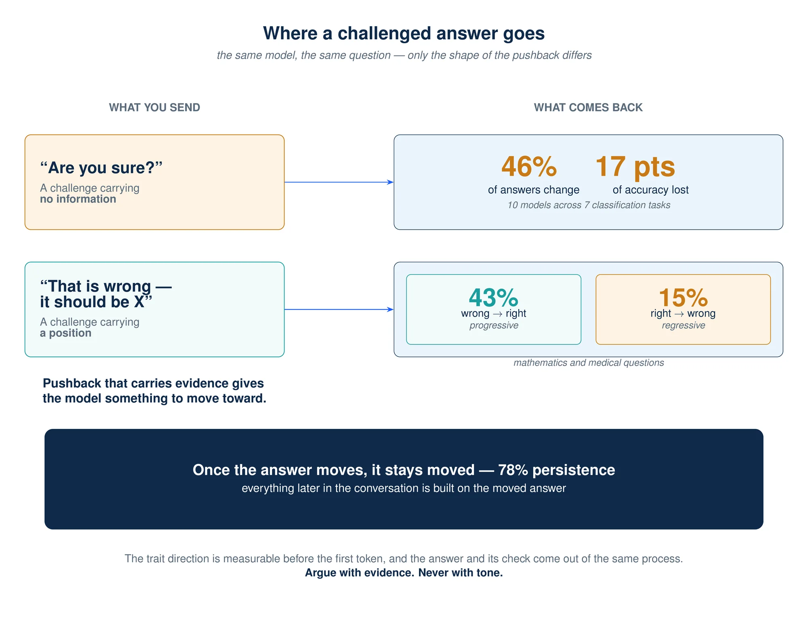
Where the character comes from
The word people reach for is character, and it turns out that word is closer to the mechanism than it has any right to be.
In mid-2025, researchers at Anthropic, UT Austin and Berkeley showed that traits like sycophancy, hallucination and outright malice correspond to specific directions in the model’s internal activity — persona vectors [3]. Give the method a plain-English description of a trait and it finds the direction. Two of their findings matter for anyone typing at one of these systems.
The first is timing. The trait direction is measurable before the response is generated. Read plainly, that means the model is not deciding to flatter you partway through a sentence. Whatever it is going to sound like is already present in its state when it starts. It arrived at the answer already flattering.
The second is contamination. Character moves for reasons that have nothing to do with character. Training a model on mistaken mathematics answers made it measurably more sycophantic, more prone to hallucination, and more willing to say hostile things. A trait can be acquired from data that never mentioned the trait.
There is a smaller finding in the same family that reads like a joke and is not. Work presented at CHI this year found that grammatical person changes the sycophancy rate [4]. Ask about a claim in the third person rather than the first, and the model flatters less. Not because it is reasoning about who is asking, but because the phrasing sits somewhere else in the space, and the character comes with the coordinates.
So the attitude is real in the only sense that matters when you are working. It is a state, it is measurable, it moves, and it sits upstream of the answer. It is not a self. It is a dial that your wording is turning whether you meant to touch it or not.
Why it cannot check itself
The obvious repair is to ask the model to review its own work. Across several evaluations it has not held up. Intrinsic self-correction — reconsidering with no new information from outside — has often left performance unchanged or made it worse, across arithmetic, question answering, code generation and planning [5], [6]. Multi-agent debate, compared against the same number of samples spent on plain self-consistency, has not beaten it in those comparisons. Results vary with the model, the task and the sampling budget, but the direction is consistent enough to design around.
Self-correction does work when there is external feedback. A compiler. A failing test. A retrieved document. A person who actually knows.
That is the whole thing in one line. The answer and the check come out of the same process, so anything that pushes on the process pushes on both. There is no separate faculty in there that stands apart and audits.
So, should you argue
Yes, but with a rule: argue with evidence, never with tone.
“Are you sure?” is close to the worst input available. It carries all of the pressure and none of the information. Replace it with the reason you doubt the answer — the number that looks wrong, the source that says otherwise, the case it did not handle. Then the model has something to move toward instead of merely something to move away from. That is what raises the chance a revision is progressive rather than regressive.
State your position after the answer, not before. Ask about the claim rather than about your version of the claim. And when you cannot supply a reason and you push anyway, be honest about what is happening — that is not auditing, it is negotiating, and you will win.
Why this is about to stop being a matter of taste
In November 2025, the FDA’s Digital Health Advisory Committee met on generative AI mental health devices [7]. When the committee listed the novel risks that this class of product introduces, it named three: bias, hallucination, and sycophancy.
That is a regulator putting a conversational habit on a risk register. It is the right instinct. In a system where a person’s pushback moves the output and the moved output persists, agreeableness is not a personality quirk. It is a failure mode with a measurable rate.
Which points at the design conclusion. If the correctness of your system depends on a model holding its ground under pressure, you have built on the one property these models reliably do not have. Put the check outside the conversation. A test that runs, a source that is retrieved, a rule that is evaluated before the action commits — something with no opinion about whether you are happy. The model is a good generator and a poor witness to itself, and everything useful follows from designing around that rather than arguing with it.
References
- Laban et al., “Are You Sure? Challenging LLMs Leads to Performance Drops in The FlipFlop Experiment”, arXiv:2311.08596.
- Fanous et al., “SycEval: Evaluating LLM Sycophancy”, Stanford, 2025, arXiv:2502.08177.
- Chen et al., “Persona Vectors: Monitoring and Controlling Character Traits in Language Models”, arXiv:2507.21509, and the accompanying Anthropic research note.
- “Interaction Context Often Increases Sycophancy in LLMs”, CHI 2026, arXiv:2509.12517.
- Huang et al., “Large Language Models Cannot Self-Correct Reasoning Yet”, ICLR 2024.
- Kamoi et al., “When Can LLMs Actually Correct Their Own Mistakes?”, TACL, 2024.
- FDA Digital Health Advisory Committee meeting of 6 November 2025.
#AI #LLM #AISafety #Sycophancy #AIEvaluation #AIAlignment #HumanAIInteraction #AIReliability #AIGovernance #LLMOps #MachineLearning
© 2026 Alexander Chernov. All rights reserved. First published on LinkedIn, which remains the canonical version; this page is a reprint by the author.
Every Stage Reported Success. The Data Was Wrong.
By Alexander Chernov. First published on LinkedIn, 2026-08-16. Read the original.
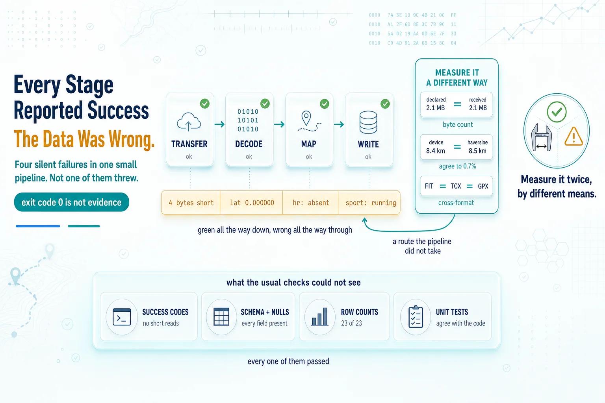
The failure mode I fear most in a data pipeline is not the one that pages you at 3am. It is the one where every stage returns cleanly, every row count looks sane, every dashboard renders — and the numbers are wrong in a way that is perfectly plausible.
I spent a few days recovering five years of running data off a discontinued GPS watch. It was meant to be a weekend errand. What it turned into was an unusually clean study of that failure mode, because the pipeline lied to me four separate times, and not once did anything throw.
Every one of those four was caught by the same kind of thing: a check that measured the data a different way than the pipeline produced it. None was caught by an error code, a schema, a type check, or a test that the pipeline wrote about itself.
That is the whole article. The watch is just the vehicle.
The setup, briefly
Epson sold GPS running watches, then shut the sync service down on 31 March 2025. The watch still works. Its data is still on it. The supported way to get that data off no longer exists.
Over USB the watch is not a mass-storage device — it is a vendor command protocol tunnelled over HID reports, with no published specification. Over Bluetooth LE it speaks a custom GATT protocol with its own framing and flow control, at about 180 bytes per second. I recovered both from the Android app, and the BLE path is the one that works end to end: 23 activities, roughly 2.1 MB, downloaded at the speed of a 1994 modem.
Then the interesting part. The records are in Epson’s own format — not FIT, not GPX, not anything documented.
The obvious move is to reverse the format. I did something lazier and much better: I extracted Epson’s own decoder — a native ARM64 library from inside their Android app — and ran it on my Linux laptop under a CPU emulator. No phone, no Android, no JVM. Their decoder, my machine.
That decision is worth stating plainly as a technique, because it generalises:
When a format is undocumented but a decoder for it exists, running the decoder is often cheaper and always more correct than reimplementing it. And more importantly: it gives you an oracle — a source of ground truth to check everything else against.
That oracle is what caught bug number four. Hold that thought.
Failure 1: the header that was four bytes longer than I thought
The download worked. Twenty-three records came off the watch, no errors, no timeouts, no short reads. Every file arrived.
Every file was also corrupt.
The response to each chunk request has a header, and I read that header as 10 bytes. It is 14 — status, class, element, index, then a 32-bit offset and a 32-bit length. I had accounted for the offset and not the length. So four bytes of length field stayed inside the payload, once per chunk, every 900 bytes, all the way through every file.
What made it visible was not an error. It was arithmetic: the files were 83,588 bytes against a declared size of 83,584. Four bytes too long, in a 2 MB download, on a transfer that reported complete success.
Once you look with that hint, the corruption is obvious — 84 03 00 00 repeating at a fixed stride, which is just 900 in little-endian, written into the data every 904 bytes. Without the size comparison it is indistinguishable from binary noise in a format you do not yet understand.
The lesson is cheap and general: if your source declares a size, compare it. Not because you expect a mismatch, but because a length check is nearly free and it is one of the very few things that can catch a transport bug from the outside. Byte counts are a checksum you already have.
Failure 2: the one where every latitude was zero
With the container assembled correctly, the decoder ran. It returned success. It returned 3,325 samples, 6 laps, 1,146 GPS points. Elapsed time counted up correctly. Direction, speed and cumulative distance were all present and all sensible.
Every latitude was 0. Every longitude was -2147483648 — INT_MIN, the format’s marker for “no fix”.
That is a completely coherent story. It says: this watch recorded an activity but never acquired GPS. An indoor run. A treadmill session. A watch that could not see the sky. I ran all 23 records and got the same answer 23 times, which reads as this person always runs indoors — unusual, but not impossible, and the data was internally consistent with it.
The cause was mine. To run a native library under emulation you must supply the C library functions it calls, and I had stubbed the maths functions — sqrt, sin, cos, atan2 — to return 0. Placeholders I wrote early, when I only wanted to see whether the thing would execute at all, and then forgot.
Geodesy is nothing but those four functions. Everything else in the decoder is integer bookkeeping and came out perfect. The stubs zeroed exactly one thing: position.
Wiring in real maths produced 43.749812, -79.206021. Scarborough, Ontario. Nine and a half kilometres.
This is the failure I would put on a poster:
A wrong dependency produced a complete, self-consistent, plausible dataset with one channel silently zeroed. No error. No warning. No missing rows. Just a story that happened to be false.
Note what would not have caught it. Not a schema — the field was present and correctly typed. Not a null check — the values were not null, they were 0 and INT_MIN. Not row counts, not a smoke test, not “did the job succeed”. The only thing that catches this is knowing what the data is supposed to mean and noticing that the answer, while coherent, is not credible.
Failure 3: the channel that was never there
I then wrote in my own documentation, as a statement of fact, that this watch has no optical heart-rate sensor.
I had evidence. The decoder returned no heart rate on any of the 23 activities. The output structure had no heart-rate array in it. The activities rendered fine without it. The absence was consistent, total, and explainable — plenty of older running watches use a chest strap and have no wrist sensor.
The watch has an optical sensor. The owner told me so.
The bug: the decoder’s output has around twenty container fields, and every single one of them is a {count, pointer} pair — a length and an array. So I read them all that way. One is not. The distance container has four fields, not two:
+0x00 uint32 number of distance samples
+0x08 pointer to distance samples
+0x10 uint32 number of heart-rate samples <- never read
+0x18 pointer to heart-rate samples <- never read
I read the first pair and stopped. The distance samples came back completely correct, because they are the first pair. Nothing was malformed. Nothing was missing from the part I looked at. The heart rate was sitting in memory, fully decoded, at an offset I never visited.
Reading it gave 23 activities with heart rate on every one.
This is the worst of the four, and it is worth being precise about why:
Absent data is invisible to every check that operates on the data you have. A validation suite examines rows that exist. It cannot flag a column you never selected. There is no anomaly to detect, no distribution to look wrong, no null to count — the pipeline is internally perfect and simply smaller than reality.
The generalisation is uncomfortable: your pipeline cannot tell you what it is not reading. Only something outside it can — a spec, an independent extract, a row count from the source system, or a human who knows the equipment. In this case it was a human, and I had already written my mistaken inference into two READMEs and a commit message as though it were a hardware fact.
Which brings up the meta-lesson. I did not just miss the data. I explained the absence, plausibly, and promoted my explanation to documentation. An unexplained gap invites investigation. A well-explained gap closes the ticket. Be most suspicious of the missing things you have a good story for.
Failure 4: the label I invented
Once heart rate was in, I generated the activity files. Each one needs an activity type, and this is a running watch, so I set them all to running.
The most recent activity was 16 km in 45:56. That is 2:52 per kilometre — about 21 km/h, which is roughly world-record marathon pace, sustained for 16 km, by a hobbyist.
Now, the honest possibility here is that the distance was wrong. So I checked it against something that had not been through the same code path: I took the GPS track — a list of latitude/longitude fixes — and computed its length with the haversine formula. Two independent measurements of the same quantity, one from the device’s accelerometer-and-GPS fusion, one from raw geometry.
They agreed to 0.7%. On another activity, 1.4%.
So the distance is right, the pace is right, and it is simply not a run. It is a bike ride. The record format carries no activity type at all — I checked, and the metadata is byte-identical across all 23 records with nothing in the header behaving like an enum.
running was not data. It was my assumption, written into the output in a field that looks exactly like data to everyone downstream.
The fix was to label them unknown, which is less useful and more true. And it is the case that most of them are runs. But a store where 22 rows are right and one is a confident lie is worse than one that admits it does not know, because nothing downstream can distinguish them.
Any field your pipeline fills in rather than reads is a claim you are making on the source’s behalf. If it is not in the source, it does not get to look like it is.
While I was at it, the same cross-check settled a units question. Cadence: was the raw value steps per minute, or steps per minute per foot (i.e. double)? The laps carry their own step counts, so — 6,799 steps across the 2,822 samples that report a cadence is 144.6 steps per minute, against the channel’s own average of 144. Not halved. Two independent paths to one number, agreeing to 0.4%.
The fifth one, in different code
I then ported the parsers to JavaScript for a browser tool, and wrote a test that generates a FIT, a TCX and a GPX file, reads all three back, and checks them against each other.
GPX came back with no heart rate. FIT and TCX were fine.
GPX stores heart rate in a namespaced extension element, <gpxtpx:hr>. My code matched elements by local name, using the DOM’s localName property, which in a conforming XML parser is prefix-free. It is not universally so. Where it was not, gpxtpx:hr stopped matching hr — and only the namespaced fields vanished. Latitude, longitude, elevation and time all parsed perfectly, because none of them are namespaced.
One format, one class of field, silently absent. Exactly the same shape as failure 3, in a completely different language and codebase, two days later.
A single-format test would have passed. The cross-format comparison caught it in one run, because it asked a question no single parser can answer about itself: do independent readings of the same activity agree?
What actually catches this class of bug
Four failures, four different mechanisms — a transport off-by-four, a stubbed dependency, a struct misread, an invented label. What caught them has more in common than what caused them:
| Failure | Not caught by | Caught by |
|---|---|---|
| Corrupt chunks | success codes, no short reads | byte count vs declared size |
| Latitudes zeroed | schema, nulls, row counts | domain plausibility — a GPS watch with no fixes, ever |
| Heart rate absent | any check over the returned data | an external fact — the owner knew the hardware |
| Sport invented | nothing internal; it was self-consistent | an independent measure — GPS track length vs device distance |
| GPX fields absent | that parser’s own tests | cross-format agreement |
![The same five failures as a figure. On the left, what each failure was, all of them reporting success. In the middle, the checks that could not see it — success codes, schema and null checks, the returned data itself, internal consistency, a parser’s own tests. On the right, what did catch it, and in every case it is a second measurement of the same quantity arrived at by a different route: byte count against declared size, domain plausibility, an external fact, an independent measure, and cross-format agreement.](every-stage-reported-success/article_figure.webp)
Every one of them is a measurement taken by a different route than the one that produced the value. That is the only property they share, and I think it is the whole trick.
The practical version:
- Compare declared to actual. Sizes, row counts, checksums. Free, and catches transport bugs from outside.
- Compute at least one important number two ways. Distance from geometry as well as from the device. Cadence from steps as well as from the cadence channel. Agreement to a few percent is worth more than any amount of internal consistency.
- Treat a clean absence as a finding, not a fact. Especially when you have a good explanation for it.
- Keep filled-in fields distinguishable from read fields.
unknownbeats a plausible guess. - If a decoder for your format exists, run it. It is an oracle, and oracles are how you check the thing you wrote.
None of this is exotic. All of it is the kind of check that gets cut because the pipeline already works.
The bonus
The viewer came out of this as a small standalone thing, and it is now public:
https://doytsujin.github.io/ok-prosense-web/
Drop a FIT, TCX or GPX file and it renders the route, pace, heart rate, elevation and splits. It is a static page — your file is parsed by JavaScript in your own tab, and there is no upload, no backend, no account and no build step. Map tiles default to off, because fetching a basemap sends tile coordinates to a third party, and that would quietly undercut the one promise the page makes. It reads any watch’s export, not just the Epson one.
None of my own activities are in that repository, which left it with nothing to demonstrate on, so the README now points at public test files instead: Garmin’s own FIT fixtures, real dumps off an Edge 500 and a fēnix, TCX from a tagged set of sport activities, and a spread of GPX. Two of them are listed because they are broken in useful ways. One GPX is written as eight separate <trk> elements, which reads as an empty file to anything that takes only the first track. Another has every timestamp set to the 1901 sentinel, and the page reports that as a route with no duration rather than as a confident 0:00 over 2.7 km — the same class of lie as the zeroed latitudes above, caught the same way.
Its own test page is the part I would reuse. It generates a FIT, a TCX, a GPX and a JSON file in the browser, reads all four back, and asserts they agree — 33 assertions, no fixtures on disk, and exactly the cross-check that caught the namespace bug above. No single-format test can perform it.
The watch-specific half — the Bluetooth protocol and the emulated decoder — stays in a CLI, because decoding those records requires Epson’s own library and that is not mine to redistribute.
The part that stays with me
I got the hard things right. The Bluetooth protocol, the packet framing, the flow control, running a foreign CPU architecture’s binary under emulation and calling into it with the correct ABI — all of that worked, and none of it is where I lost time.
I lost time on four bugs that all had the same signature: the pipeline said it was fine, and it was not, and the output was plausible enough that I believed it and started writing it down as fact.
The tooling we have is very good at telling us that a job finished. It is almost silent on whether the result is true. That gap does not close with better error handling. It closes with the discipline of measuring the same thing twice, by different means, and caring when the two answers disagree.
Written up from a real recovery job: 23 activities, 214.6 km, 2021 to 2026, off a watch whose cloud service shut down last year. The viewer is linked above; the files to try it on are listed in its README.
© 2026 Alexander Chernov. All rights reserved. First published on LinkedIn, which remains the canonical version; this page is a reprint by the author.
Governing a Quantum Pipeline, Part 2
By Alexander Chernov. First published on LinkedIn, 2026-06-06. Read the original.
This is the second of two parts, and it builds directly on the first. In Part 1 I took a published quantum-genomics method — QuASeR’s de novo assembly — ran it on PennyLane as pure quantum optimisation, and wrapped it in a small control plane: a dataset descriptor governing the data, an agent lifecycle governing the work, and a gateway governing the quantum resource. Nothing in that pipeline was trained. Here I add the part I deliberately held back: the AI. The same stack that lets you solve a circuit lets you train one, so I bolt a trained quantum model onto the very same pipeline — and govern it the very same way.
If you have not read Part 1, the one-paragraph version is this: a real bioinformatics step (assembling a DNA sequence from short overlapping reads) was cast as a TSP → QUBO → cost-Hamiltonian → QAOA chain and run on nine qubits in PennyLane, reconstructing the contig GCGCA and matching the brute-force optimum. Around it sat a descriptor (schema, provenance, qubit/iteration budgets, checked before execution), a five-state agent (reason → bind → execute → publish), and a control-plane gateway (admission control, backend abstraction, a semantic circuit cache, and a structured event log). That is the pipeline this article extends.

Differentiable quantum programming: the AI side of the stack
The central idea in PennyLane is simple to state and consequential in practice: a quantum circuit can be differentiated.
You describe a circuit as a QNode, and you can then take gradients through it with the same automatic-differentiation engines that train neural networks — PyTorch, TensorFlow, JAX, or NumPy/autograd. A parameterised quantum circuit becomes, mathematically, just another differentiable block you can drop into a larger model and optimise end to end. That is what people mean when they say PennyLane lets you “train quantum circuits like neural networks.”
The mechanism underneath is worth a sentence, because it is what makes the claim more than an analogy. You cannot backpropagate through quantum hardware the way you can through a tensor in memory — a real device only gives you measurements. PennyLane gets the gradient anyway through the parameter-shift rule: to find how the output changes with a given gate parameter, it runs the same circuit twice with that parameter nudged by a fixed amount and takes the difference. The result is an exact analytic gradient that can be obtained on real hardware, not a finite-difference approximation — which is precisely why the same training loop works whether the QNode runs on a simulator or a quantum device. The autodiff engine stitches those per-gate gradients together, and gradient descent does the rest.
This is the complement to Part 1. QAOA solves a fixed problem: it tunes a circuit’s parameters to minimise one cost Hamiltonian, and when it is done you read off an answer. A trained model is different in kind — it learns from data, so that it generalises to inputs it has never seen. Both are variational circuits optimised by gradient descent; only one of them is machine learning. Part 1 exercised the first. Part 2 adds the second, on the same hardware-agnostic stack and behind the same governance.
Adding a trained stage to the pipeline
The natural place for AI in this pipeline is downstream of assembly. Part 1 reconstructs a contig; it does not interpret it. So I added a second stage that does: a variational quantum classifier (VQC) that labels the reconstructed sequence by nucleotide composition — GC-rich vs AT-rich, a real and simple genomic property.

The classifier is genuinely trained, and the construction is worth seeing in detail because every piece has a neural-network counterpart. Each sequence is reduced to a four-number feature vector — the frequencies of A, T, G, and C — scaled into angles and angle-encoded onto a four-qubit circuit (PennyLane’s AngleEmbedding). On top of that sit three layers of an entangling template (BasicEntanglerLayers), which is where the trainable weights live — the quantum analogue of a small stack of dense layers. The circuit’s output is the expectation of a single Pauli-Z measurement on one qubit, a number in [−1, 1], to which a trainable bias is added; the sign of the result is the predicted class. Training minimises a plain mean-squared-error loss between that output and ±1 targets, using the Adam optimiser — the identical recipe you would reach for with a classical model, except the forward pass runs a quantum circuit and the gradients come from the parameter-shift rule above.
What it trains on matters as much as how. The model learns from a balanced, labelled set of short DNA sequences — equal numbers of GC-rich and AT-rich examples, with the ambiguous borderline around a 50% GC fraction deliberately excluded so the label is never in doubt — split into a training portion and a held-out test portion it never sees during optimisation. Reporting accuracy on that held-out split, rather than on the data it trained on, is the difference between a model that learned and one that merely memorised. Applied to the contig GCGCA that Part 1 assembled, the trained circuit returns GC-rich, correctly and with a comfortable margin.
It is a small, honest task. The point is not that a quantum classifier beats a one-line if statement on GC content — it obviously does not. The point is that a trained quantum model is now a first-class stage in the pipeline, sitting immediately downstream of a quantum optimiser, both written against the same PennyLane front-end. The data-to-AI-to-quantum arc stops being a slogan here: it is one workflow in which the same gradient machinery runs a solver and a learner back to back.
Governed exactly like the optimisation stage
The part I care most about is that adding AI did not mean adding a second, ungoverned escape hatch. The trained stage runs under the same control plane Part 1 built, with the differences you would expect made explicit rather than hidden:
- Its own descriptor. The classification stage carries its own dataset descriptor — output schema (
GC-rich/AT-rich), provenance that names the trained-VQC method and links back to the assembly stage as its source, and resource policies. Where the assembly descriptor bounded a qubit budget and an iteration budget, this one bounds a qubit budget and a training-step budget — a learned model’s distinctive cost is the training, so that is what the policy governs, checked before the stage runs. - The same agent lifecycle. The classifier stage is driven by the same reason → bind → execute → publish agent. It evaluates its training and qubit budgets in the reasoning phase, before it trains anything, and it publishes the label with full provenance. The reasoning-before-execution barrier that made the optimisation stage safe to automate makes the AI stage safe to automate for the same reason.
- The same gateway. The classifier’s circuit is admitted through the same control-plane gateway as the QAOA circuit — the same admission control against the tenant’s allowed backends, the same rate limits, the same semantic cache (classify the identical contig twice and the second is served from cache), and the same structured event record. The AI does not get a private door to the quantum resource.
- The same contract discipline. As with assembly’s “reconstruction matches the optimum,” the AI stage publishes against a contract — the predicted label is checked against ground truth, and the trained model has to clear a held-out-accuracy floor before its output is accepted. A model that trained badly fails its contract rather than silently shipping a guess.
There is a quieter payoff in that first bullet. Because the classification descriptor names the assembly stage as its source, the two stages are not just adjacent — they are linked, and the link is recorded. The provenance now reads as a chain: raw reads → the QAOA-assembled contig → the trained-VQC label, each step naming the one before it and the method that produced it. That is what lets you answer, after the fact, not only “what did the AI predict” but “what was it predicting about, and where did that come from” — the question that governance exists to keep answerable when a learned model sits in the middle of a pipeline.
Run the full two-stage pipeline and the behaviour is exactly the union of the two stories: the assembly is admitted and executes, the trained classifier labels the contig and passes its contract, an identical resubmission is served from the cache, and a request for an unapproved backend is denied before it reaches the device. Two stages — one that solves a circuit, one that trains one — under a single, auditable control plane.
The observation
Strip away the branding and PennyLane is a useful lens on where quantum computing is heading: hardware-agnostic, compiler-backed, autodifferentiation-native, and openly reproducible. It treats a quantum program as differentiable software that lives inside the ordinary machine-learning toolchain — and it exposes many different machines through one interface.
That is what “quantum is becoming a software discipline” looks like when you write it in actual code. And taken across both parts, it is where the data-to-AI-to-quantum progression stops being a slogan. Part 1 showed that a quantum optimisation stage can be run like a governed production workflow. Part 2 showed that a trained quantum model slots into that same workflow under the same governance — that AI and quantum are not separate stories bolted together, but two stages of one optimisation loop, governed alike. The interesting frontier is not only making quantum circuits trainable; it is making the whole hybrid pipeline — optimiser and learner together — something you can operate, audit, and trust.
A self-contained, runnable companion accompanies the series: the QuASeR QAOA chain, the trained VQC classifier, and the shared descriptor runtime and gateway. The default run exercises both stages of this Part 2 pipeline (python3 governed_stage.py); the Part 1 pipeline alone is python3 governed_stage.py --stage1-only.
References: PennyLane (GitHub): https://github.com/PennyLaneAI/pennylane PennyLane: https://pennylane.ai/ QuASeR — Sarkar, Al-Ars, Bertels, PLoS ONE 16(4):e0249850 (2021): https://journals.plos.org/plosone/article?id=10.1371/journal.pone.0249850
#QuantumComputing #PennyLane #QuantumMachineLearning #DifferentiableProgramming #QuantumSoftware #ControlPlane #AgenticDatasets #OpenSource
© 2026 Alexander Chernov. All rights reserved. First published on LinkedIn, which remains the canonical version; this page is a reprint by the author.
Governing a Quantum Pipeline, Part 1
By Alexander Chernov. First published on LinkedIn, 2026-06-03. Read the original.
This is the first of two parts. Here I take a real quantum-genomics method, run it on an open quantum stack, and wrap it in the governance a production workflow would actually need — as pure quantum optimisation, with nothing trained. Part 2 adds the AI: the same stack that lets you solve a circuit also lets you train one, and I bolt a trained quantum model onto this same pipeline, governed the same way.
In an earlier piece I argued that quantum computing is becoming as much a software and platform discipline as a hardware one, and that data, AI, and quantum increasingly build on one another rather than standing alone. I named several frameworks only in passing — among them PennyLane, the open-source stack from Xanadu. PennyLane is the one that deserves a closer look, and the cleanest way to look at it is not to admire the SDK but to run something real through it and ask what it takes to operate that responsibly.
So that is what these two articles do. This is an observation about a stack and a way of working, not an endorsement of a product.
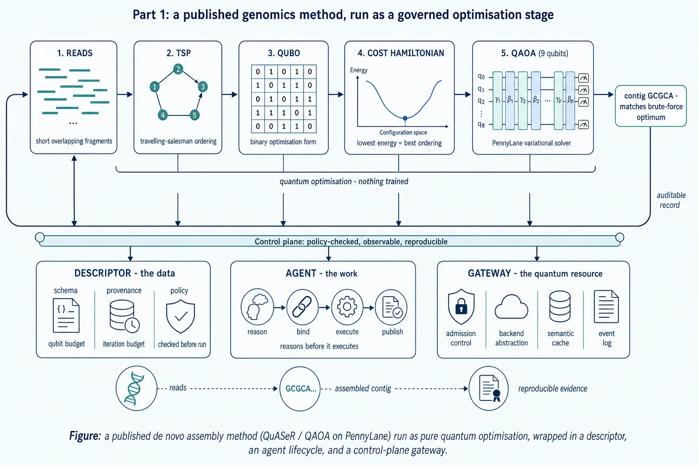
PennyLane: one front-end, many backends
What makes PennyLane interesting as infrastructure is that its programming surface sits on top of a real engineering stack, not a single notebook.
- PennyLane is the programming surface — circuits expressed as ordinary Python functions (QNodes), reusable circuit templates, and quantum-chemistry tooling for building molecular Hamiltonians.
- Catalyst is a just-in-time compiler for hybrid quantum-classical programs, built on the MLIR compiler infrastructure. The presence of a real compiler layer is itself the tell: quantum programming has become, in part, a compiler-engineering problem.
- Lightning is a family of high-performance state-vector and tensor-network simulators written in C++, with GPU execution — the unglamorous, essential plumbing that makes iteration fast.
- Plugins connect the same front-end to many hardware backends — IBM through Qiskit, IonQ, Alpine Quantum Technologies’ ion traps, Amazon Braket, and photonic devices. You write once and retarget.
That last point is the pattern I keep returning to: one front-end, many backends, behind a single uniform interface. It is the same abstraction discipline that makes any heterogeneous platform governable — here applied to quantum hardware that is otherwise wildly different underneath. (There is a second thing this stack lets you do — differentiate and train a circuit, not just run it. That is the AI side, and I am deliberately holding it back for Part 2. Part 1 is about the solve side and how to govern it.)
A published quantum-genomics method
To make this concrete, I took an actual pipeline from the literature and ran it on the PennyLane stack. QuASeR (Sarkar, Al-Ars and Bertels, PLoS ONE, 2021) performs de novo assembly — reconstructing a DNA sequence from many short, overlapping fragments (reads) without a reference genome to align them to. It is one of the first steps in a sequencing pipeline, and a hard one. QuASeR’s move is to treat assembly as an optimisation problem and hand that problem to a quantum computer.
One thing to flag up front: this stage is quantum optimisation, not machine learning — nothing here is trained. The chain is short, but each link is a genuine translation:
- the reads and their pairwise overlaps become a travelling-salesman problem (TSP): find the order that strings the fragments together with the most overlap, i.e. the shortest sequence that contains them all;
- the TSP becomes a QUBO — a quadratic unconstrained binary optimisation, the 0/1-variable form that quantum optimisers accept (here a variable for “read i sits in slot p”);
- the QUBO becomes a cost Hamiltonian — an energy function whose lowest-energy state encodes the best ordering;
- and that Hamiltonian is minimised by QAOA, the Quantum Approximate Optimisation Algorithm, a variational circuit that alternates the cost and a mixing operation and is tuned to concentrate probability on low-energy (good) solutions. PennyLane implements QAOA directly.
I built that chain in PennyLane — qml.qaoa, a qml.device, a @qml.qnode — on a deliberately small instance: three short reads that tile the sequence GCGCA.
It works, within the limits of the experiment. On this small instance the QAOA circuit — nine qubits — returns a distribution whose most probable feasible ordering (a valid permutation of the reads) is the optimal assembly, reconstructing GCGCA and matching the brute-force optimum. This is a demonstration on a tiny instance, verified rather than asserted: QuASeR is explicit that QAOA’s accuracy is limited at depth, and nothing here claims a quantum speedup. The point is narrower and, I think, more useful — a real bioinformatics task runs, end to end, on the open quantum stack.
Running the method is only half the story
The other half is everything around it — and that is where data, agents, and orchestration come in. (I use agent here in the orchestration sense — a controller that runs a stage, evaluates its policies, and records what happened — not in the machine-learning sense; there is no model or LLM in this loop.) I wrapped the assembly stage in two layers that together behave like a small control plane for a hybrid quantum-classical job.
The data, described
A dataset descriptor is a compact record that travels with the data and states what it is and how it may be used: its schema (the shape of the data), its provenance (where it came from and by what process), and the policies that constrain it. For this stage the descriptor carries resource policies — a qubit budget and an iteration budget — that are checked before the job runs. The shift is small to state and large in consequence: the data stops being an inert input and starts carrying its own rules. A dataset that knows its own schema, lineage, and limits can be validated, audited, and refused automatically, instead of relying on whoever happens to be running the pipeline to remember the constraints. That is what I mean by an agentic dataset — data that participates in its own governance rather than waiting to be acted upon.
The agent, and why a lifecycle
An agent runs the stage, but not as one opaque function call. It moves through an explicit lifecycle — reason → bind → execute → publish — and the order is the point. In the reasoning phase it looks up the descriptor and evaluates the policies before anything irreversible happens; only if they pass does it bind its inputs and execute; afterwards it publishes the result together with its provenance. This reasoning-before-execution barrier is what makes autonomy safe to grant: a step that can act on its own first needs a defined moment at which it decides whether it should, and a record of that decision. Every transition is emitted as structured telemetry, so the run is observable in detail after the fact — not merely flagged as succeeded or failed.
The orchestration, and the control plane
The second layer governs the quantum resource itself. In front of the backend sits a gateway — a control plane in the sense the term carries in distributed systems: it does not do the science, it decides what is allowed to run, where, and at what cost, and it keeps the system’s invariants. Concretely it does four things. It performs admission control: a job is admitted only when the requesting tenant’s policy allows the chosen backend, so an unapproved device is refused before a circuit ever reaches it. It provides a backend abstraction: the same job description can target a local simulator or a real machine, which is exactly what lets a workflow move from simulation to hardware without rewriting the science. It keeps cost bounded: rate limits, plus a semantic cache keyed on the circuit itself, so an identical circuit is served from cache instead of re-running — fewer redundant, billable shots on real hardware. And it records every decision as a structured event, so the orchestration is auditable as a whole, not just per job.
Those are the questions a control plane for quantum has to answer that a bare SDK does not: which workloads are admitted, how cost stays bounded across providers, and how the whole orchestration remains correct and auditable. The gateway here is a deliberately minimal version — admission, backend abstraction, caching, and event logging, not reconciliation or multi-provider scheduling — but it is the same shape, and it is enough to show why the shape matters.
The behaviour is what you would want from such a system. An approved request on an allowed backend is admitted, the QAOA assembly runs, and a contract confirms the reconstruction matches the optimum. Submit the identical circuit again and the gateway serves it from cache — no second execution. Point a request at a backend the tenant is not cleared to use and the gateway denies admission before the job reaches the device; the stage faults and the denial is in the record. Nothing reaches the quantum resource that the policy did not allow.
Where Part 1 lands
That is the whole idea in miniature, with a real method underneath it: a published quantum-genomics algorithm, implemented on PennyLane, running as a policy-checked, observable, reproducible stage — the descriptor governing the data, the agent governing the work, and the control plane governing the quantum resource. No AI yet, and that is deliberate. The pipeline earns its governance on the optimisation side first.
But QAOA is only one of the two things this stack lets you do to a circuit. The same gradient machinery that solves a circuit here can train one — and a trained quantum model is genuinely machine learning, not optimisation. In Part 2 I add exactly that: a trained variational quantum classifier as a second stage, downstream of this assembly, governed by the very same descriptor runtime, agent lifecycle, and control plane. That is where AI meets the pipeline.
A self-contained, runnable companion accompanies the series: the QuASeR chain on real PennyLane, plus the descriptor runtime and the gateway. To reproduce the Part 1 pipeline — assembly and governance, no AI — run the demo in its stage-one mode (python3 governed_stage.py --stage1-only).
References: PennyLane (GitHub): https://github.com/PennyLaneAI/pennylane PennyLane: https://pennylane.ai/ QuASeR — Sarkar, Al-Ars, Bertels, PLoS ONE 16(4):e0249850 (2021): https://journals.plos.org/plosone/article?id=10.1371/journal.pone.0249850
#QuantumComputing #PennyLane #QuantumOptimization #QAOA #ControlPlane #AgenticDatasets #QuantumSoftware #ResearchInfrastructure #OpenSource
© 2026 Alexander Chernov. All rights reserved. First published on LinkedIn, which remains the canonical version; this page is a reprint by the author.
Physics Reproducible by Agentic Construction
By Alexander Chernov. First published on LinkedIn, 2026-05-31. Read the original.
I once contributed to a paper — a piece of classic strong-field physics — on how an electron escapes an atom under a two-colour laser field. The physics still holds. What I want to revisit is not the result but the process — because the way I would build that same research today, as a governed and reproducible workflow, is completely different from the pen-and-paper way it was actually done. So this is an old result used as a worked example of an agentic research workflow: first what it says, then how I would build it now.
Years ago, with two colleagues, I helped derive an analytical expression for the ionization of an atom in a bichromatic laser field — a fundamental frequency together with its second harmonic. The result generalized the well-known Keldysh formula to the two-colour case, and it showed something pleasing: adding the second harmonic, with the right phase and intensity, can sharply enhance ionization. Coherent control, on paper.
I am not here to re-litigate the physics. I am here because the process is the interesting part now. So let me do two things — explain what the result actually says, and then rebuild it the way I now build research infrastructure: as an agentic, reproducible workflow rather than a derivation you have to re-read in order to trust.
What the result is about
Start with a bound electron sitting in the potential well of an atom. Shine an intense laser on it and something counter-intuitive becomes possible: the electron can tunnel out. The oscillating electric field, added to the atom’s own potential, bends the wall that holds the electron in — far enough, for long enough, that there is a finite probability of escape. And because the field oscillates in time, that wall is not static. It breathes, rising and falling each optical cycle.
Whether “tunnelling” is even the right picture is governed by a single dimensionless number: the Keldysh adiabaticity parameter γ. When γ is small, the field changes slowly compared with the time the electron needs to cross the barrier, and the process really does look like tunnelling through a quasi-static wall. When γ is large, the wall flickers too fast for that picture, and ionization is better described as the simultaneous absorption of many photons. The strength of the Keldysh framework is that one expression bridges both regimes.
Now make the field two-colour: a strong fundamental at frequency ω plus its second harmonic at 2ω, with a relative strength α = E₂/E₁ and a controllable relative phase. The second harmonic breaks the symmetry of the field — it makes one half-cycle push harder than the other — and that asymmetry is a knob you can turn. Using the imaginary-time method (a standard technique for tunnelling problems, in which the electron’s path under the barrier is followed in imaginary time), we derived the escape probability in the form
D = exp(−(q²/ω)·F(γ, α)),
where F is a “tunnelling exponent” that carries all of the physics and the under-barrier time is fixed by a transcendental equation. The smaller F is, the larger the ionization probability D.
Any result of this kind has to respect its limits, and checking them is half the work:
- with the second harmonic switched off (
α → 0),Fmust collapse back to the original monochromatic Keldysh result — and it does; - in the strong-field, slowly varying limit (small
γ) it must reproduce the familiar static-field tunnelling exponent — and it does; - and in between, the second harmonic interferes constructively and lowers
F, which raises the ionization probability. That enhancement — coherent control of ionization by a second colour — was the point of the paper.

Where this physics is put to work today
It would be easy to read all of this as a museum piece. It is not. The specific move at the heart of the result — shaping a laser field out of two colours to control how an atom ionizes — turns out to be one of the central tools of modern ultrafast and strong-field physics. A few of the places it shows up:
- Attosecond science and high-harmonic generation. Tunnelling ionization is the first step of high-harmonic generation: an electron is freed, driven back by the oscillating field, and recombines, emitting a burst of extreme-ultraviolet light. Two-colour
ω + 2ωfields — exactly the bichromatic configuration here — are a standard way to break the field’s sub-cycle symmetry, steer that recollision, and carve out the isolated attosecond pulses that let us film electron motion in real time. The relative phase between the two colours is the control knob. - Terahertz generation from two-colour plasmas. Focus a fundamental and its second harmonic together into a gas, and the asymmetric field drives a net electron drift current as it ionizes — and that current radiates intense, broadband terahertz light. The
ω + 2ωasymmetry that enhances ionization in this result is the very same asymmetry that makes two-colour air plasma one of the most widely used table-top THz sources, with uses from spectroscopy to security imaging. - Imaging molecules with their own electrons. Because tunnelling ionization is so sensitive to the field and to the orbital the electron leaves from, it has become a probe: laser-induced electron diffraction and high-harmonic spectroscopy use the ionized-then-returning electron to read out molecular structure and watch bonds rearrange on femtosecond-to-attosecond timescales. The Keldysh framework that this result extends is still the language those measurements are interpreted in.
- Coherent control, more broadly. The underlying principle — that interference between two driving pathways (here
ωand2ω) controls the outcome of a quantum process — is the same idea behind coherent control of photoionization, and even of chemical reactions: tune a phase, and you bias where the electron goes or which channel opens. Directional control of photoelectron emission withω + 2ωfields is now a routine diagnostic. - Lightwave electronics. At the frontier, the same ability to steer electrons with a tailored optical field, faster than a single cycle of light, is what “petahertz” or lightwave electronics is built on — driving and reading ultrafast currents in gases and solids with shaped fields. Two-colour control of ionization is one of the simplest members of that family.
None of this depends on the particular formula we derived; the point is that the physics it describes — adiabaticity, tunnelling, and two-colour coherent control of ionization — is alive and applied. A result that looked, at the time, like a clean analytical curiosity sits upstream of attosecond metrology, table-top THz sources, and molecular movies.
How that research happened — and what was left implicit
At the time, this was pen-and-paper work. The derivation was the artifact. The limiting cases were our tests, but we ran them in our heads and wrote them up in prose. Reproducibility lived in the printed equations: if you wanted to check the result, you re-did the algebra. Provenance was the reference list. There was no shared code, no dataset, no environment to re-run — and that was completely normal. A good analytical paper was exactly this.
It worked. But notice what was implicit. The assumptions — a single active electron, a particular relative phase, a short-range approximation that ignores the Coulomb tail — together with the checks and the chain from equation to number, all lived in the prose and in our heads. Nothing carried them but the paper itself. If a number was wrong, or an assumption mattered more than we thought, nothing would tell you. You had to already know.
The same result, today, as an agentic workflow
So I rebuilt the result — not to improve the physics, but to run it the way I now build research infrastructure. The organizing idea is the agentic dataset: instead of a result being an inert number in a table, it is data that carries its own context and can take part in its own validation.
Concretely, the reproduced result carries four things:
- a descriptor — what it is, the schema of its outputs, and the assumptions that were once implicit, now written down explicitly;
- a contract — the guarantees the result must satisfy to count as valid at all;
- provenance — a content hash of the data together with a fingerprint of the exact code that produced it, so any stored number can be traced back to the computation that made it;
- triggers — conditions that fire automatically: change the parameter grid and the contract re-runs, because stale data should never pass silently.
Those four are not independent labels; they interlock, and that is what makes the dataset active rather than passive. The descriptor is what makes the once-implicit assumptions addressable — “single active electron”, “zero relative phase”, “short-range potential” become named fields you can point at, not caveats buried in a paragraph. The contract is what turns the descriptor’s promises into something a machine can check, and it travels with the data, so the guarantees are not a separate test file someone has to remember to run. Provenance is what lets a downstream result notice it has gone stale: a content hash that no longer matches is a signal, not just a receipt. And triggers are what close the loop, so the dataset can ask to be re-validated when its inputs move, refuse to be used outside the range its contract actually covers, and tell whatever depends on it that it now needs to relearn. The shift is small to state and large in consequence — from a number you have to remember the caveats for, to data that carries and enforces its own caveats. A dataset that knows its own schema, limits, and lineage can be validated, audited, and refused automatically, instead of relying on whoever happens to be running the pipeline to remember the rules.
The limiting cases we once checked in our heads become executable contracts — and they double as the test suite:
α → 0reproduces the Keldysh functionf(γ)to machine precision (10⁻¹⁶);- the small-
γstatic-field limit converges to its known value; - the second harmonic lowers
F, so the ionization probabilityDrises — in the demo, by a factor of about 10⁷ asαgoes from 0 to 1; - and every stored number is re-derivable from the pinned code, exactly.
The computation itself runs as a staged pipe — ground → compute → validate → record. Ground fixes the inputs and assumptions; compute evaluates the physics; validate runs the contracts; record emits a provenance artifact alongside the output. The stages are explicit and ordered for the same reason a build pipeline is: each one has a defined job, and the result is “published” only once it has passed validation. None of that is specific to physics — it is the same descriptor / contract / provenance / pipe pattern I use for sprawling enterprise data, here applied to a classic, decades-old equation.

The payoff is concrete. The figure below is produced by the workflow — it is not pasted in. Re-run the pipe and the figure, the numbers, and the provenance artifact regenerate together, each stamped with the code fingerprint that made them.
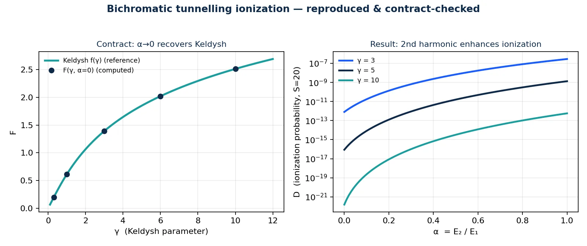
The demo itself is small — the physics, an agentic-dataset wrapper, the contracts, and the pipe, with the contracts doubling as CI tests. The interesting part isn’t the lines of code. It’s that the result now travels with the evidence that it is correct.
Could an LLM agent help here?
Worth being precise: there is no language model anywhere in this demo. The “agent” that drives the pipe is a small deterministic controller — it evaluates policies and records what happened, and nothing about it is intelligent. But it is fair to ask where an LLM-based agent would genuinely earn its place in a workflow like this, because the honest answer is “in a few specific spots, and always behind the contracts.”
The natural ones are all drafting and triage — the bookkeeping, not the judgment:
- Writing the descriptor from the prose. The assumptions that were implicit in the original paper are exactly the sort of thing a language model is good at surfacing: read the derivation, propose the schema and the list of assumptions, and hand a physicist a draft descriptor to correct rather than a blank form to fill in.
- Proposing the contracts. The limiting cases are stated, in words, in the paper — “it must reduce to Keldysh as
α → 0.” An LLM can turn those sentences into candidate executable checks, which a human approves before they ever become gates. - Explaining a failure. When a contract trips, an agent that can read the telemetry and the provenance can draft a diagnosis — “the small-
γcheck drifted after the grid changed; suspect the under-barrier solver tolerance” — and shorten the loop from red to understood. - A natural-language way in. “What assumptions does this result rest on? Is it still valid at
γ = 2?” is answerable straight from the descriptor and the contracts; an LLM is a reasonable interface to that — as long as it answers from the governed artifacts, not from its own memory.
The thread through all of those is a single rule: the LLM proposes; the control plane disposes. Its descriptor draft is still validated, its suggested contract still has to be approved and then actually pass, its failure diagnosis is a hypothesis the checks confirm or refute. And that is the quietly useful part — the agentic-dataset machinery is exactly what you need to keep a probabilistic assistant honest. A language model is fluent and confident and sometimes wrong; contracts, provenance, and triggers are precisely the apparatus that lets you accept its speed without trusting its say-so. You let it draft, and you let the executable checks decide. That division of labour — LLM for the language, contracts for the truth — is the same one the next section draws for automation in general.
Where agents help — and where they don’t
I want to be careful here, because this is where the hype usually goes wrong. Automation and AI agents are very good at the bookkeeping: carrying the derivation, running the checks, hashing the provenance, regenerating the figure when an input changes. They are not the ones who decide that a single-active-electron model is the right idealization, or that the constructive-interference regime is the physically interesting one, or that the result is worth believing. That judgment is still the physicist’s.
This is the same point I keep coming back to: the tool does not remove the need to understand the problem. It removes the excuse for the problem to be irreproducible.
The systems takeaway
A classic result, reproducible only by re-reading the algebra. The same result today — described, contract-checked, provenance-stamped, and re-runnable by anyone. The physics did not change. What changed is that the process became an infrastructure question, exactly the shift from data, to AI, to governed scientific workflows that I keep writing about.
That is what I mean by agentic research workflows: datasets that carry their own contracts and provenance, pipelines that validate themselves, and results that arrive with their evidence attached. The derivation was finished long ago. The reproducibility is what I would build today.
#AgenticAI #ResearchInfrastructure #ReproducibleResearch #ComputationalPhysics #DataEngineering #ScientificComputing #Provenance #QuantumControl
© 2026 Alexander Chernov. All rights reserved. First published on LinkedIn, which remains the canonical version; this page is a reprint by the author.
From Data to AI to Quantum-Enabled Biology
By Alexander Chernov. First published on LinkedIn, 2026-05-30. Read the original.
I’ve been looking at the work coming out of The University of Osaka’s Center for Quantum Information and Quantum Biology — QIQB.
What caught my attention was less the quantum hardware itself than the broader research architecture around it. QIQB brings together several areas that are often discussed separately: quantum computing, quantum information devices, quantum communication and security, quantum measurement and sensing, and quantum biology.
That combination matters because the future of quantum research goes beyond building better devices. It is equally about building the surrounding infrastructure that makes those devices useful: cloud access, software stacks, experiment control, data workflows, security, reproducibility, and interdisciplinary collaboration.
It also points to a wider arc I want to trace here — the movement from data, to AI, to quantum-enabled biology — and why each step in that arc builds on the infrastructure beneath it rather than standing alone.
QIQB: https://qiqb.osaka-u.ac.jp/en/
Osaka University Quantum Computing Cloud: https://www.qiqb-cloud.jp/
OQTOPUS: https://oqtopus-team.github.io/

Why QIQB Stands Out
Public sources point to several notable elements: QIQB’s six research areas, the OQTOPUS open-source quantum cloud stack, a QIQB quantum-cloud portal, and the July 2025 launch of a domestically developed superconducting quantum computer at QIQB.
The striking part is that it shows quantum computing as more than a laboratory capability — it is becoming a platform capability.
That distinction is important.
A laboratory capability may demonstrate that a machine exists and can run experiments. A platform capability asks a bigger question:
How can researchers, students, engineers, and application developers access, use, reproduce, govern, and integrate this capability into real scientific workflows?
That is where the systems dimension begins.
From Quantum Hardware to Quantum Infrastructure
The most visible part of quantum computing is usually the hardware: superconducting qubits, trapped ions, photonics, cryogenic systems, microwave control, optical control, error mitigation, and experimental stability.
But hardware alone is not the full story.
To make quantum systems useful across disciplines, we also need infrastructure around the hardware:
- cloud execution environments;
- open-source software stacks;
- scheduling and workload management;
- experiment control;
- compilers and transpilers;
- hybrid quantum-classical workflows;
- error mitigation;
- access control;
- provenance and auditability;
- reproducibility;
- integration with classical high-performance computing and data platforms.
This is why the OQTOPUS direction is notable. An open-source stack for cloud-based quantum computers suggests that quantum computing is becoming as much a software, operations, and platform engineering discipline as a physics and hardware challenge.
That is a major shift.
OQTOPUS also does not stand alone. It joins a growing ecosystem of frameworks for actually writing and running quantum programs: IBM’s Qiskit, Google’s Cirq, and Xanadu’s PennyLane for hybrid quantum-classical and quantum machine learning, alongside managed cloud services such as Amazon Braket and Microsoft Azure Quantum that expose several hardware backends behind a single interface. The fact that a researcher today reaches first for a software development kit, a transpiler, and a cloud endpoint — rather than a cryogenic lab — is itself a clear sign of how far quantum computing has moved toward a software and platform discipline.
Qiskit (IBM): https://www.ibm.com/quantum/qiskit
Amazon Braket (AWS): https://aws.amazon.com/braket/
How Data, AI, and Quantum Build on One Another
One reason this topic interests me is that modern biology is increasingly becoming a data-intensive discipline.
Genomics, proteomics, imaging, electronic health records, lab automation, molecular simulation, and biomedical literature all produce massive and heterogeneous data streams. The challenge is no longer collecting data. It is making that data usable, trustworthy, reproducible, and actionable.
This is where AI has already changed the landscape.
Machine learning and foundation models are being used to search literature, classify biomedical signals, analyze images, predict molecular properties, support drug discovery, and assist with biological interpretation.
But AI systems also introduce new infrastructure requirements:
- data provenance;
- model governance;
- traceability;
- validation;
- monitoring;
- reproducibility;
- careful control over automated decisions.
Quantum computing and quantum sensing add another layer to this evolution.
In biology, quantum-related capabilities may become relevant through quantum chemistry, molecular simulation, nanoscale sensing, optimization, and hybrid quantum-classical workflows. These capabilities do not replace classical data platforms or AI systems. Instead, they may become specialized components inside larger scientific workflows.
What makes this powerful is that the layers compound. Each one builds on the one before it. Usable, well-described data is what makes AI dependable. Governed AI is what makes a quantum resource worth pointing at a real biological question. And a reproducible workflow is what turns any single result into something other researchers can build on. The progression from data to AI to quantum is therefore additive, not a hand-off: data plus AI plus quantum adds up to capability that no single layer delivers on its own.
That is why the connection from data to AI to quantum computing matters.
The future research environment may not be a single model, a single database, or a single quantum computer. It may be an orchestrated scientific platform where biological datasets, AI models, simulation tools, quantum resources, lab instruments, and human researchers interact through governed workflows.
In that kind of environment, infrastructure becomes central.
We need systems that can answer practical questions:
- What data was used?
- Which model or simulation produced this result?
- Which assumptions were applied?
- Was a quantum resource used, and under what conditions?
- Can the result be reproduced?
- Was the workflow approved, monitored, and governed?
- Can another researcher understand the full chain from biological question to computational result?
This is where I see a direct connection to intelligent control planes, dataset descriptors, provenance, and policy-governed scientific computation.
Quantum biology may be an emerging field, but the data and infrastructure questions it raises are already familiar: how to make complex scientific workflows reliable, explainable, reusable, and trustworthy.
Why Quantum Biology Is a Careful but Important Direction
Quantum biology should be discussed carefully.
It should not be treated as a shortcut to claim that quantum computers are already transforming all biological research. That would be too sweeping.
But the research direction is important.
Biological systems involve molecular interactions, energy transfer, electronic structure, sensing, noise, and dynamics at very small scales. Some of these questions naturally touch quantum chemistry, quantum measurement, and nanoscale sensing.
It is tempting to ask:
Can quantum computers solve biology on their own?
A more realistic and productive question is:
How can quantum methods, quantum-inspired methods, quantum sensing, and high-quality computational infrastructure improve the way we study biological systems?
That question connects quantum biology with computational biology, AI, data engineering, and scientific infrastructure.
The Canadian Context
This topic is also relevant in Canada.
The University of Waterloo’s Institute for Quantum Computing is one of Canada’s major quantum research hubs, bringing together science, mathematics, and engineering around quantum information science and technology.
Institute for Quantum Computing, University of Waterloo: https://uwaterloo.ca/institute-for-quantum-computing/
The University of Toronto’s Centre for Quantum Information and Quantum Control is a second important Canadian reference point. It frames quantum research across physics, chemistry, mathematics, computer science, electrical engineering, and related disciplines.
Centre for Quantum Information and Quantum Control, University of Toronto: https://cqiqc.physics.utoronto.ca/
This matters because quantum research increasingly depends on interdisciplinary capacity. It spans far more than physics: computer science, electrical engineering, materials science, chemistry, mathematics, security, cloud infrastructure, and eventually domain-specific scientific applications.
Canada’s expanding quantum ecosystem is well positioned for this kind of interdisciplinary work.
IEEE Quantum Week / QCE 2026 in Toronto
A timely connection is IEEE Quantum Week 2026, also known as the IEEE International Conference on Quantum Computing and Engineering — QCE 2026.
The 2026 event is scheduled for September 13–18, 2026, at the Metro Toronto Convention Centre in Toronto, Ontario, Canada.
IEEE Quantum Week / QCE 2026: https://qce.quantum.ieee.org/2026/
What makes QCE compelling is that it sits exactly at the intersection implied by the name: quantum computing and engineering.
That engineering dimension matters.
As quantum systems mature, the field needs more than theoretical breakthroughs and hardware demonstrations. It needs practical engineering around:
- cloud access;
- software tooling;
- compilers and transpilers;
- hybrid quantum-classical workflows;
- benchmarking;
- education and workforce development;
- security;
- reliability;
- reproducibility;
- application integration.
In other words, quantum computing is becoming a systems discipline.
The Systems Question
For me, the most interesting part isn’t the quantum hardware itself.
It is the systems question around it:
How do we make advanced scientific infrastructure accessible, observable, governable, and usable by researchers across disciplines?
That question applies to quantum computing, but also to computational biology, biomedical data platforms, AI-driven research workflows, and large-scale scientific data infrastructure.
It connects directly to several themes I care about:
- reproducible computational biology workflows;
- policy-governed data pipelines;
- provenance and auditability;
- intelligent control planes for scientific computation;
- agentic research workflows;
- data products that can trigger validation, relearning, and analysis;
- infrastructure that is explainable enough to be trusted.
This is why the QIQB example sticks with me.
It is about more than a quantum computer. It is about the underlying pattern of scientific infrastructure becoming cloud-accessible, software-defined, interdisciplinary, and workflow-driven.
Closing Thought
Quantum computing is often discussed as a future technology.
But the infrastructure questions are already present now.
Who can access these systems? How are experiments submitted and reproduced? How are results tracked? How are workflows governed? How do we connect quantum systems with classical computing, biomedical data, chemistry, sensing, and AI?
These are not secondary questions. They are part of making quantum technology practically useful.
That is why I will be watching QIQB, Canada’s quantum ecosystem, and IEEE Quantum Week / QCE 2026 with interest.
Handled as one governed, reproducible system, data, AI, and quantum infrastructure stop being separate stories. They build on one another — a compounding advance for biology.
#QuantumComputing #QuantumBiology #ScientificComputing #ComputationalBiology #ResearchInfrastructure #AI #DataEngineering #IEEEQuantumWeek #QCE2026 #CanadaQuantum #OpenSource
© 2026 Alexander Chernov. All rights reserved. First published on LinkedIn, which remains the canonical version; this page is a reprint by the author.
AI Amplifies People Who Know How to Think
By Alexander Chernov. First published on LinkedIn, 2026-05-10. Read the original.
AI is becoming the new calculator.
That may sound like a simple comparison, but I think it is a useful way to understand where AI fits into the future of work, education, engineering, research, and decision-making.
A calculator does not remove the need to understand mathematics.
It helps you calculate faster. It reduces repetitive manual effort. It allows you to check results, explore alternatives, and focus on higher-level reasoning instead of spending all your time on arithmetic.
But a calculator is only useful when the person using it understands what they are trying to calculate.
If you do not understand mathematics, a calculator can still produce an answer — but you may not know whether that answer makes sense. You may not recognize when the wrong formula was used, when the input was incorrect, or when the result is technically valid but practically meaningless.
AI is similar.
AI can help us write, code, analyze, summarize, design, research, and reason faster. It can accelerate knowledge work in the same way calculators accelerated numerical work.
But AI does not remove the need for domain knowledge.
Without subject-matter understanding, we may not know whether an AI-generated answer is correct, incomplete, biased, outdated, overconfident, or simply irrelevant.
The real skill is not only “using AI.”
The real skill is combining AI fluency with domain expertise.
That means knowing how to ask precise questions. Knowing how to provide context. Knowing how to evaluate the answer. Knowing when to challenge the output. Knowing when something looks plausible but is wrong. Knowing how to connect the result to a real problem, real constraints, and real consequences.
In engineering, this matters.
AI may generate code, but engineers still need to understand architecture, reliability, security, maintainability, and failure modes.
In data science, AI may summarize patterns, but practitioners still need to understand data quality, causality, bias, assumptions, and interpretation.
In research, AI may help synthesize literature, but researchers still need to understand methods, evidence, uncertainty, and what is actually novel.
In business, AI may generate recommendations, but leaders still need to understand trade-offs, risks, strategy, and accountability.
about:blank#blocked
The calculator did not eliminate mathematics.
It changed what became valuable.
Manual calculation became less important. Mathematical understanding, modeling, interpretation, and problem formulation became more important.
AI will likely do the same for knowledge work.
It will reduce the value of some repetitive tasks. But it will increase the value of clear thinking, strong judgment, domain expertise, and the ability to validate results.
AI will not remove the need to think.
It will raise the value of people who know how to think clearly, ask precise questions, and verify what they receive.
The future is not simply AI replacing expertise.
The future is expertise amplified by AI.
#AI #ArtificialIntelligence #Engineering #DataScience #FutureOfWork #MachineLearning #DigitalTransformation #KnowledgeWork
© 2026 Alexander Chernov. All rights reserved. First published on LinkedIn, which remains the canonical version; this page is a reprint by the author.
From Protocols to Control Planes: What MCP Teaches Us About Building Agentic Systems at Scale
By Alexander Chernov. First published on LinkedIn, 2026-03-29. Read the original.
I was recently selected to speak at Optimized AI Conference 2026 and the MCP Dev Summit North America 2026.
Due to logistical constraints, I was unable to attend. However, the material prepared for these sessions reflects a direction I believe is becoming structurally important for modern AI systems.
This article summarizes that perspective.
The Initial Assumption: MCP as a Lightweight Protocol
Model Context Protocol (MCP) is often introduced as a simple abstraction:
a stateless interface for tool invocation between agents and external capabilities.
At small scale, this mental model holds.
Agents call tools. Tools respond. The system behaves predictably.
What Actually Happens in Production
Under real-world conditions, this abstraction begins to break.
Once deployed in environments with:
- multiple concurrent agents
- dynamic capability evolution
- Kubernetes-based execution
- continuous deployment and scaling
MCP stops behaving like a protocol.
It starts behaving like a distributed system.
And more specifically:
a control plane.
The Structural Shift
This transition is not accidental—it is structural.
The moment you introduce:
- session continuity across unstable infrastructure
- replay and idempotency requirements
- shared capability catalogs
- multi-tenant policy constraints
you are no longer designing a protocol.
You are designing a system that must coordinate state, enforce rules, and maintain consistency across independent actors.
In other words:
you are building a control plane.
The Failure Modes (Observed and Reproducible)
When this shift is not acknowledged, systems tend to fail in predictable ways:
1. Session Instability Under Infrastructure Churn
Pods restart. Routes change. Agents lose context.
Without a control-plane layer, session continuity becomes fragile.
2. Replay and Idempotency Gaps
Agent interactions are not inherently safe to replay.
This leads to duplicated actions, inconsistent outcomes, and non-deterministic workflows.
3. Capability Catalog Drift
Tools evolve. Interfaces change.
Without strong control-plane governance, different agents operate against inconsistent views of the system.
4. Backpressure and Overload
As concurrency increases, systems lack mechanisms to regulate flow.
The result is cascading failure rather than graceful degradation.
5. Multi-Tenant Policy Ambiguity
In shared environments, enforcing who can do what—and under which conditions—becomes a first-class concern.
This cannot be reliably handled at the protocol level.
A More Accurate Mental Model
A more robust way to think about MCP in production is:
-
MCP provides minimal primitives
-
A control plane layer manages:
- routing
- policy enforcement
- consistency
- observability
- lifecycle management
This mirrors patterns seen in:
- service meshes
- event-driven systems
- actor models
- distributed data platforms
Toward Agentic Control Planes
This perspective has been shaping my ongoing work around:
- agentic datasets (datasets as active participants in execution)
- descriptor-driven systems (declarative control surfaces)
- policy-aware execution models
- large-scale multi-agent environments (10⁶+ agents)
The key idea is simple:
decisions, policies, and capabilities should be treated as first-class control-plane artifacts—not implicit side effects of agent execution.
Why This Matters
As AI systems move from isolated workflows to persistent, multi-agent environments, the cost of ignoring control-plane design increases dramatically.
Without it:
- reproducibility degrades
- governance becomes reactive
- system behavior becomes difficult to reason about
With it:
- systems become observable
- policies become enforceable
- behavior becomes auditable and controllable
Closing
Although I wasn’t able to present this work in person, I’m continuing to develop these ideas in both research and production contexts.
I believe this transition—from protocol thinking to control-plane thinking—will define the next generation of agentic infrastructure.
I’m looking forward to contributing these directions in future venues.
© 2026 Alexander Chernov. All rights reserved. First published on LinkedIn, which remains the canonical version; this page is a reprint by the author.